Great gathering array (Tụ Linh Đại Trận)
at Tử Điện Thành
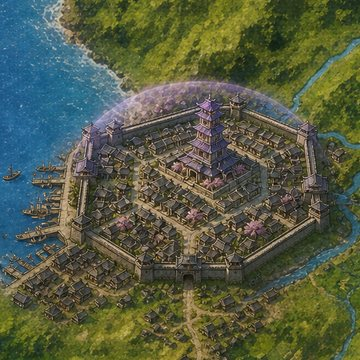
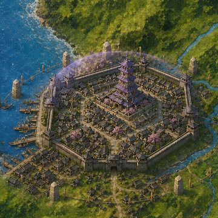
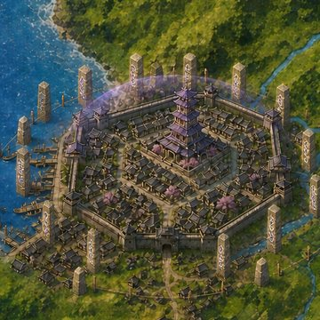
All 254 named places of the continent, each with the look, lore and history written overnight from the recorded world, and its own painting cut from its patch of the near map. A proposal for your review: names and recorded events are the world's; everything else is new.
Ten projects, three stages each, painted from the place’s own painting so it grows in place (design/world/great_projects_proposal.md).
at Tử Điện Thành



at Đào Khê Thôn
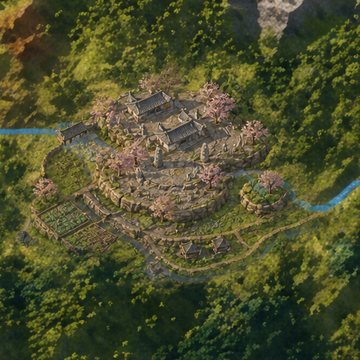
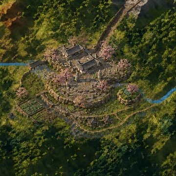
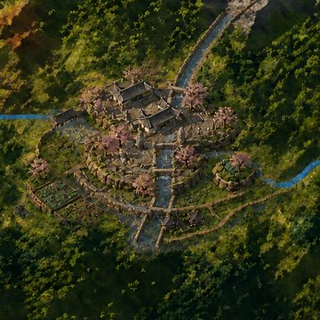
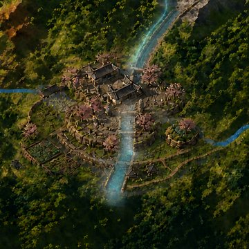
at Lạc Hà Tông
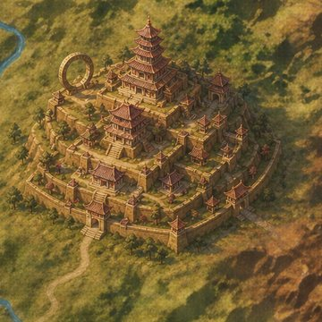
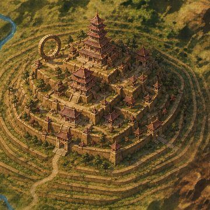
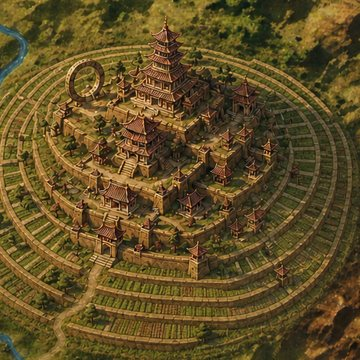
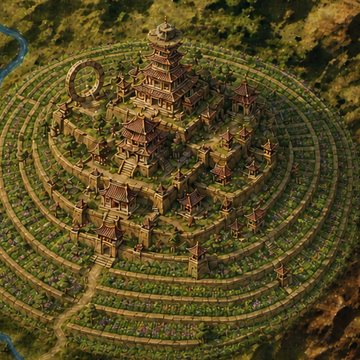
at Đào Thanh Thành
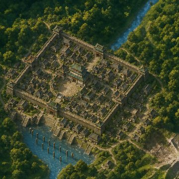
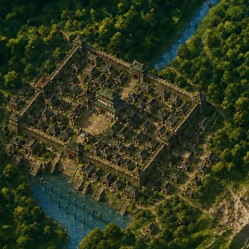
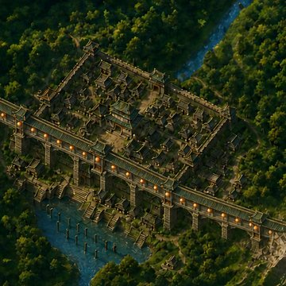
at Đào Sa Thị
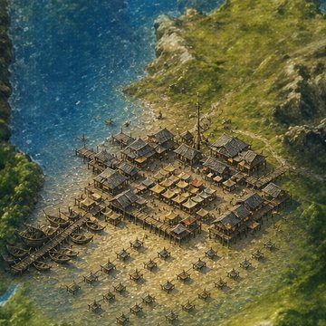
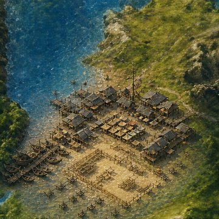
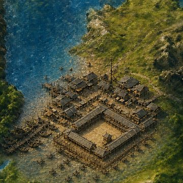
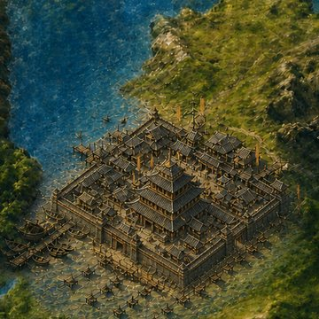
at Khai Dương Thành
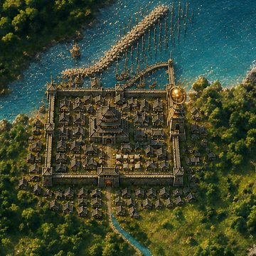
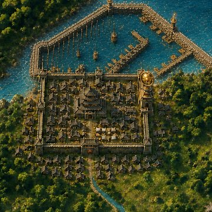
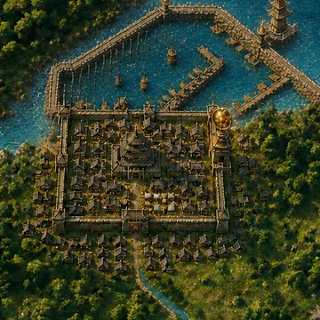
at Thiên Xu Tông
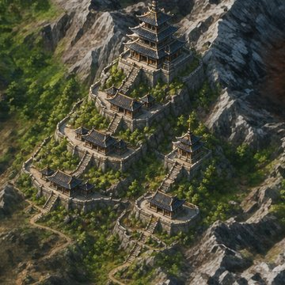
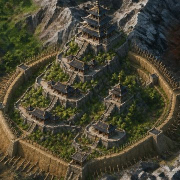
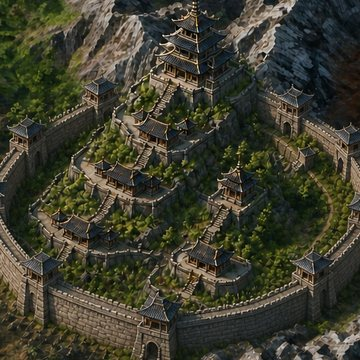
at Nam Phố Đường
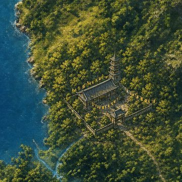
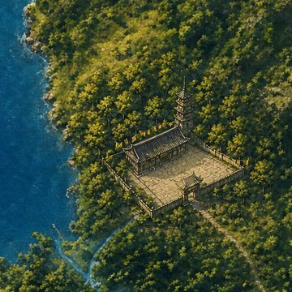
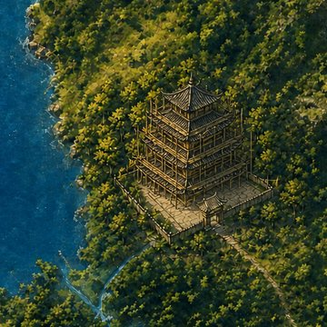
at Thải Chi Cốc
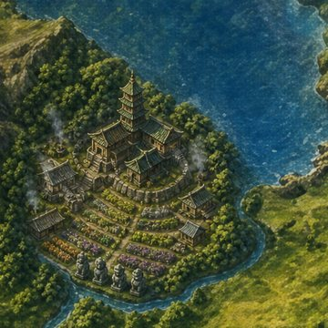
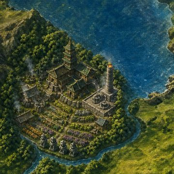
at Phụ Tinh Phong

Forest of the Cold Moon · 7 places
A low manor of dark timber and grey tile stands among birches on the lake shore, its slim piers reaching out over still water. Just off the piers a perfect ring of white stones breaks the surface, enclosing a circle of water so calm it holds the moon whole; the manor calls it the Moon Net.
Lore. Hàm Nguyệt Trang is a small water-arts sect (tông môn) sworn to Tùng Đào Cung, living on spirit fish (linh ngư) and lake pearls. Its founder said the moon in the lake is easier to catch than the one in the sky, and novices still begin by sitting at the Moon Net until they can watch the reflection without breaking it. Its mistress Kiều Nguyệt Châu has doubled the pearl harvest since she took the manor. The manor keeps no war boats; its old ones lie on the lake bed where it sank them.
History. In 410 a water cultivator founded Hàm Nguyệt Trang on the long lake, saying the moon in the lake is easier to catch than the one in the sky. In 470 a fisher of Tuyết Lộc pulled a pearl the size of a fist from Hạo Nguyệt Hồ; the manor bought it and began to farm pearls, and pearls have been its wealth ever since. In 610 its disciples tracked a snow-leopard spirit beast that had taken a child from Hàn Yên Thôn for forty days across the ice. In 748 the lake froze to its bed for one winter, and the manor's spirit fish lived through it in the moon's reflection, which the disciples count as proof of their founder's words. When Tùng Đào Cung and Băng Tâm Các went to war over the lake, Băng Tâm skiffs raided the pearl beds in 942, and the manor sank its own boats rather than lose them. The arbitration that ended the war left the lake with Tùng Đào but gave Băng Tâm the fishing of the northern shore, so the manor now shares its waters with its old raiders. In 1150 Kiều Nguyệt Châu became mistress of the manor and doubled the pearl harvest within twenty years.
Levels. Pearl sheds spread along the shore on both sides of the piers and the moon-viewing tower gains a fourth roof. · The manor walls take in the birch grove, a stone pearl hall rises behind the tower, and a second, smaller ring of white stones is laid in the shallows for the disciples.
A walled lakeside town of grey roofs whose shore is lined with rows of tall birch poles, each crowned with a straw nest-basket. In autumn every pole and roof ridge is crowded with returning birds; in winter the market tents stand out on the ice beyond the harbour wall.
Lore. Quy Điểu Trấn began as a traders' camp named for the birds that return to the lake each autumn in great flocks, and townsfolk still raise a new nest pole for every child born. Lake pearls made it rich, and each winter its market moves out onto the ice, where pearl buyers walk from stall to stall over the frozen water. It is a Tùng Đào town, and much of what Hàm Nguyệt Trang's pearl beds yield passes over its scales.
Levels. The wall runs further along the shore and the nest poles stand in double rows; a stone pearl market hall rises by the harbour. · A second harbour basin is cut, and a tall grey-roofed bird-watching tower stands over the shore where the winter ice market is held.
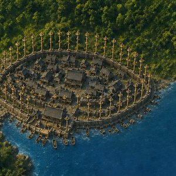
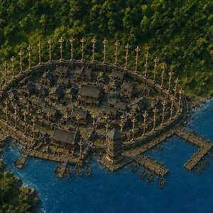
A handful of low log houses with grey tile and turf roofs sit on the snowy north shore of the lake, entered through a gate arch built entirely of shed reindeer antlers. Herds graze the lichen between the houses and the water's edge.
Lore. Reindeer herders settled the lake's snowy north shore in 140, and their camp became Tuyết Lộc Thôn; each spring the herders add the year's finest shed antlers to the arch. A fisher of this village pulled from the lake the great pearl that started Hàm Nguyệt Trang's pearl farms, and the village answers to the manor. Since the Long Lake War, Băng Tâm fishers share the northern shore, and the herders trade them hides for salt.
Levels. The antler arch is doubled in height, and a row of smokehouses and a fenced winter corral grow along the shore. · A small stone shrine to the lake's first pearl stands beside the arch, and a longer jetty serves the fishers of the northern shore.
A huddle of grey-roofed houses with tall stone chimneys sits on the lake shore, where on still winter mornings the smoke hangs frozen in pale columns. At the ice edge stands a lone post with a bronze bell, rung at every dusk.
Lore. The village takes its name from a winter so cold that smoke froze above its chimneys. When a snow-leopard spirit beast took a child from here, Hàm Nguyệt Trang's disciples tracked it for forty days across the ice; since then the bell at the shore calls the children in before dark. Villagers leave a fish on the bell post's stone base on the night the hunt set out, for the disciples who went.
Levels. A palisade faces the forest and a second bell post stands at the village's back toward the trees. · A small stone watch-house for the lake patrol rises beside the shore bell, its single grey roof the tallest in the village.
Domed stone houses, thick-walled and half sunk into the ground, cluster on the lake shore like loaves of bread, each capped with a small grey tile roof. Between them a timber bath-house stands over a hot spring, its steam visible far across the ice.
Lore. Tùng Đào's first steward of the north built warm stone houses for the lake villages, and the hamlet beside them is still called Noãn Ốc. Since a hot spring was found under the snow here in 1015, old cultivators come every winter to soak their bones, and villagers rent bath hours by the burning of an incense stick. Locals say the steward's houses stay warm because he mixed a little of his own qi into the mortar.
Levels. New domed houses ring the bath-house and a covered walkway links them against the snow. · A two-storey guest lodge for visiting cultivators rises beside the spring, and the bath-house gains a second, stone-walled pool.
The long lake runs pale silver between dark forest shores, the largest water on the continent, its far end lost in haze. On one shore a thin stone causeway leaves a small fishers' shrine and runs straight out into the lake, stopping in open water.
Lore. Fishers say a man once walked across this water into the moon, and they built a shrine where he set out; the causeway was laid later, stone by stone, by those who wanted to follow as far as they dared. The lake's pearls feed Hàm Nguyệt Trang and the shore towns, and once brought two great sects to war. Its water is cold and deep with qi, and the lake villages say the master who left the world here never quite took his home with him.
History. In the Wild Age fishers on the long lake saw a man walk over the water into the moon, and in 45 they built a shrine on the shore where he had set out. In 470 a fisher of Tuyết Lộc pulled a pearl the size of a fist from the lake; Hàm Nguyệt Trang bought it and began to farm pearls, and the pearl trade later made the shore towns rich. In 748 Hạo Nguyệt Hồ froze to its bed for one winter, and the spirit fish of Hàm Nguyệt Trang lived through it in the moon's reflection. Its pearls drew Tùng Đào Cung and Băng Tâm Các into the Long Lake War in 940. In 944 Đỗ Tinh Hà arbitrated: the lake stayed Tùng Đào's, and Băng Tâm won the right to fish its northern shore. In 1192 a white moon-fox was seen on the lake three nights running, and the villagers say a blessed land is waking somewhere in the north.
From outside it is a dark sea of old spruce and larch rising gently to a low crown. At its heart a hollow ringed by giant trees holds a patch of amber evening light that lingers long after the rest of the forest has gone grey.
Lore. Lost travellers have walked out of Phản Cảnh Lâm by the light at its heart, which stays until dawn, and the forest is named for that returning light. Woodcutters tie a strip of bark to the last tree they pass, so the next lost walker can follow the light out. The forest belongs to no sect; Tùng Đào's patrols skirt its edge, and hunters leave the inner hollow alone.
History. In the Wild Age and the Age of First Gates the northern forest was only a hunting ground for the lake villages, unnamed and unmapped. Late in the Age of First Gates its region passed under Tùng Đào Cung, but the palace never fenced or settled the deep heart of the wood. By 530 travellers knew that the evening light lingered in the heart of the forest so long that the lost could walk by it until dawn, and the forest took the name Phản Cảnh Lâm. The custom of tying bark strips to the trees grew from those walks, and the strips now mark several faint ways out. In 870 hunters found footprints in the snow leading into the forest and never out, and no one followed them. Since then the heart has been left alone, and the lake villages tell children that the light is someone waiting.
Cape of Snow and Fire · 12 places
A steep coastal valley of snow and black rock opens onto a grey sea, its terraces climbing to a squat red-brick furnace tower. Snow never settles in a wide ring around the tower; the bare dark ground there steams, and the stack glows at night like a coal.
Lore. Hồng Lô Cốc is a sect of alchemists (đan sư) sworn to Thúy Vi Tông, whose furnace was lit with fire carried from the volcanic isles. Its saying is that a snowflake on the red furnace is gone at once, and novices stand catching snow by the furnace mouth until they stop flinching. Its master Đồng Hồng Lô once kept the furnace burning nine years without letting it cool. The valley also works Bích Ngọc Khoáng, the green jade mine in the hills of Thanh Loan Lĩnh.
History. Thúy Vi Tông took the cape of snow and fire in the Age of the North Star Compact, and its surveyors soon charted the smoking volcanic isles offshore. In 650 a company of alchemists carried fire from those isles across the water and lit a furnace in this coastal valley, founding Hồng Lô Cốc. The valley swore itself to Thúy Vi, whose own art is alchemy, and became its lord's furnace on the cape. In time it also took over the working of Bích Ngọc Khoáng, the green jade mine Thúy Vi had opened soon after its founding. In 930 Đồng Hồng Lô became master of the valley and kept its furnace burning for nine years without cooling, a feat the alchemists still toast each midwinter. In 1185 the volcanic isles smoked for a month, and Hồng Lô Cốc's alchemists sailed out to gather the ash before the rain could take it.
Levels. A second, taller furnace stack rises beside the first and the snow-free ring widens over a new terrace of drying sheds. · A stacked pagoda hall of red tile crowns the valley head above the furnaces, and a curved stone breakwater shelters the ash boats.
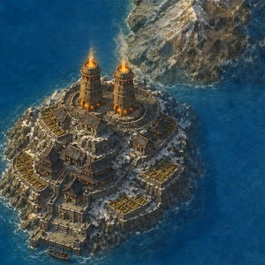
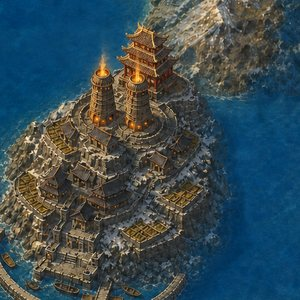
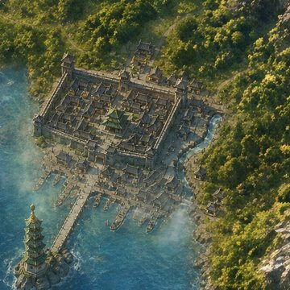
A walled port city stands where a river meets the sea, its quays and lower streets often lost in a drifting blue-green mist. Above the haze rises a slender pagoda of green-glazed tile at the end of the harbour mole, and a bronze horn at its top sounds through the fog to guide the ships home.
Lore. Yên Ba Thành is Thúy Vi Tông's port and the busiest market of its coast, where grain from the cape villages and the trade of the white sands meet. Sailors say the mist on the river waves makes a man sad, and the city answers with noise: the horn, drums at the gates, and taverns that stay open late. A protective formation (trận pháp) laid by Thúy Vi keeps the worst sea fogs out of the upper town.
History. A generation after Thúy Vi Tông took the cape of snow and fire, the sect needed a harbour to tie it to its hills. In 590 it founded Yên Ba Thành, a port in the mist of the river waves, at the river's mouth, and raised the horn pagoda on its mole. The city grew into the cape's market, buying fish, wool and grain from the villages around it. Through one long, hard winter early in the Age of Vein Wars it lived on grain from Hòa Thử Thôn, and its granary wardens still buy from that village first. Generations later a daughter of the Thẩm clan of Bạch Sa married into one of its merchant houses, and the white sands became a trading town tied to Yên Ba. Only a few years ago, after a poor harvest drove grain prices in Mục Ca Thành beyond the herders' reach, they came to sing their songs for coin in Yên Ba's streets.
Levels. The walls extend up the river bank and a second quay with green-roofed warehouses lines the river mouth. · A great stone harbour gate spans the river behind the mole, and the upper town's green roofs climb a terraced hill clear of the mist.
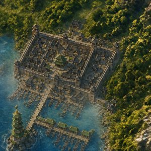
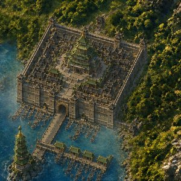
A walled city of low grey roofs sits on open coastal grassland, hunched against the wind. Around its walls a ring of round dry-stone sheepfolds lies across the grass like beads on a string, and at dusk the herders' songs carry from fold to fold.
Lore. Thúy Vi founded the city on its cape where herders sing to their flocks, and the songs are still how flocks are counted, called home and sold. Each herding family owns a fold in the ring and a tune no one else may sing at it. The city lives on wool, hides and the sea, and buys its grain, so a poor harvest anywhere on the cape hits it hard.
History. Long before any sect claimed the cape, herders drove their flocks along this grassy shore and sang to them. Thúy Vi Tông took Tuyết Hỏa Giác in the Age of the North Star Compact, and in 700 founded Mục Ca Thành on the cape where the herders sang. The city grew as the cape's wool and hide market, and its folds were added one by one around the walls as families settled. Its grain came from the cape villages and through the harbour of Yên Ba. In 1196 a poor harvest drove grain prices in the city so high that the herders went to sing their songs for coin in Yên Ba's streets. The songs came home with them changed, and old herders complain that the young now sing for strangers.
Levels. A second ring of folds is built and a long covered wool hall rises inside the walls. · A tall drum-and-song tower stands at the city's centre, and the harbour gains a stone mole for the wool ships.
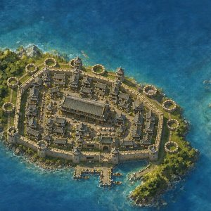
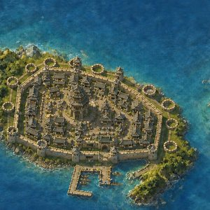
A small walled town of whitewashed walls and grey roofs sits on a beach of dazzling white sand. Along the shore stand long rows of whitewashed net-drying frames, so many that from the sea the town seems fenced in white lattice.
Lore. The Thẩm family, fishers of the white sands, built the first houses here, and the clan hall is still the town's court. Since a Thẩm daughter married into a merchant house of Yên Ba, the town trades as much as it fishes. A peach petal netted in midwinter is kept in a sealed jar at the clan hall; the elders say the hidden valley's stream has opened again, and strangers have begun asking which way the currents run.
History. In 380 the Thẩm family, fishers of the white sands, built the first houses of Bạch Sa on this beach. For centuries it was a fishing village, and once Thúy Vi Tông took the cape it owed its catch to that sect. When Thúy Vi founded the port of Yên Ba Thành a generation later, Bạch Sa's fish went to its markets. In 1040 a daughter of the Thẩm clan married into a merchant house of Yên Ba, and the white sands became a trading town. In 1120 a fisher of Bạch Sa netted a peach petal in midwinter, far from any peach tree, and the elders said the hidden valley's stream had opened again. Since then cultivators come through asking about tides and streams, and the Thẩm clan answers them politely and tells them nothing.
Levels. A merchants' quarter of two-storey warehouses grows inside an extended wall and the pier is rebuilt in stone. · A tall double-roofed clan hall of the Thẩm stands at the town's heart, and a small harbour wall curves around the rows of net frames.
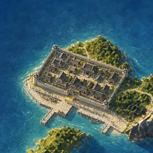
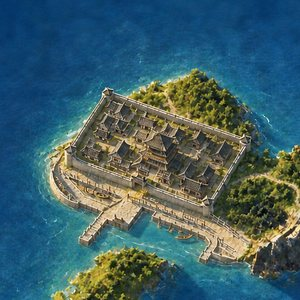
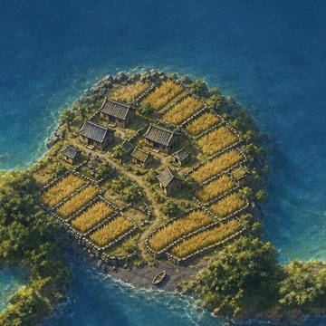
A few grey-roofed farmhouses stand among wheat fields that ripple like waves over dark volcanic soil. Low walls of black lava stone divide the gold fields into long strips running down to the sea.
Lore. Wheat first grew here in the warm ash of the cape, and the fields of Mạch Lãng Thôn are still the oldest on it. Farmers say the ash remembers the fire and keeps the seed warm through the frosts. At harvest they leave the last strip standing for the wind to thresh.
Levels. The lava-stone walls extend up the slope over new strips and a stone threshing floor is laid by the houses. · A small granary barn with a double grey roof and a windmill on the slope serve the wider fields.
A village of grey roofs sits on a windy headland above its boat sheds. On the point stands a tall mast hung with long cloth streamers of many colours, which the sailors read before every launch.
Lore. The sailors of Phong Phàm Thôn learned to read the cape's winds so well that their sails never go slack. Every family hangs its own streamer on the wind mast, and children learn the winds by watching how each one flies. Merchants of the coast hire Phong Phàm pilots whenever they can get them.
Levels. A second mast stands on the far point and the boat sheds grow into a small yard with a stone slipway. · A pilots' hall with a lookout gallery rises beside the mast, and a short stone breakwater shelters the boats.
Low farmhouses sit among millet and grain fields on the coast. Beside them stand rows of small granary huts raised on mushroom-shaped stone stilts, keeping the grain clear of damp and rats.
Lore. Grain from Hòa Thử Thôn fed Yên Ba Thành through the long winter of 860, and the city has not forgotten. The village keeps one granary hut empty in every row in memory of that winter, filled only when another bad year comes. Its millet wine is poured at harvest feasts all along the cape.
Levels. The granary rows double and a stone road links the village to the coast road. · A large stone grain store with a double roof rises at the end of the rows, and a small pier ships grain to Yên Ba.
A few houses cling above a narrow cove hidden between cliffs, out of sight from the open sea. A steep stair cut into the rock leads down from the village to the mouth of a sea cave at the water's edge.
Lore. One winter a pirate crew hid in the cove below the village, and the villagers fed them and said nothing. When Thôn Hải fell the pirates vanished in a single night, leaving a chest of salt and a child; some say the child's line still lives here. The villagers are polite to strangers and tell them very little.
Levels. A rope hoist is rigged beside the stair and a few new houses climb along the cliff top. · A small stone harbour wall is built across the cove's mouth, and a grey-roofed watch-house stands over the cave stair.
Far out in the western sea a black volcanic island rises in a steep cone, steam leaking from its flanks. Down the cone's sides run seams of fire jade that glow red-green through the rock at dusk, as if the mountain were cracked over a lamp.
Lore. A spirit vein (linh mạch) of fire jade lies under the volcano, charted by Thúy Vi's surveyors and kept on a sealed chart. It sits at the edge of the cape's waters, where Lạc Hà's waters begin, and few ships come so far. Thúy Vi sends no settlers; those who go are alchemists and miners on short, guarded voyages.
History. In the Wild Age the island was only a smoking mark on the horizon for the cape's fishers. A few years before the find, Thúy Vi Tông took the cape of snow and fire and set its surveyors to chart the coast and the sea beyond. In 565 they found a pocket of fire jade under a volcano far out at sea, named it Hỏa Ngọc Mạch and kept the chart sealed. The vein became Thúy Vi's quiet treasure, worked in small voyages rather than settled. In the Age of Vein Wars it lies on the edge of Lạc Hà's waters, the kind of wild vein neighbours fight over, yet no war has been fought for it. The cape's sailors say the sealed chart is the reason: no one fights for what they cannot find.
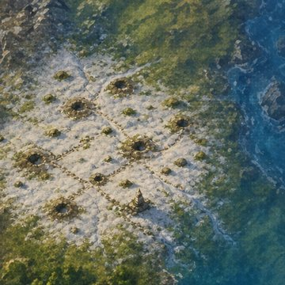
A flat white tundra under a low sky, broken by scattered round patches of bare, thawed brown earth. Each patch marks a fire fox den, its snow melted away by the beast's heat, and trails of melted prints run between them.
Lore. Fire foxes run on the snow of this plain, and their dens melt round holes in the white. The cape's hunters say a fox's warmth stays in its den long after it leaves, and travellers caught by a blizzard sleep in empty dens at their own risk. Fox pelts that never freeze are the prize of a brave hunter.
A smooth snowfield lies high on the cape's mountains, white except for one blue ice cave at its foot. Steam pours from the cave mouth day and night, and the meltwater runs out warm and faintly green over the stones.
Lore. Hot water rises under the snowfields here and carves a cave from below. Thúy Vi's alchemists climb up to bottle the water, saying it carries fire and frost together. The ice roof of the cave thins each summer, and more than one careless bather has brought it down on himself.
A small rocky islet sits in the middle of a cold mountain lake. Its hot springs have built a staircase of white and rust-orange mineral terraces down to the water, each step a steaming pool.
Lore. Hot water at the lake's heart wells up on the islet and spills down its terraces into the cold lake. Thúy Vi disciples row out to soak and meditate there, one to a pool. Fishers say the lake never freezes within a stone's throw of the island.
Ridges of the Blue Peaks · 13 places
Twin summits rise out of the blue-green haze of the hills, their slopes stepped with herb terraces and white-walled halls under green-glazed roofs. Around the higher summit a broad path of white stone winds in a spiral from the haze to the peak, and on misty mornings only its pale upper turns show above the clouds.
Lore. Thúy Vi Tông, the Sect of the Emerald Haze, is a righteous (chính đạo) great sect of alchemists whose herb terraces climb its slopes in green stripes. Its founder came into these hills when the last master of Không Sơn Viện gave them away, and the sect still leaves that old academy untouched. Its head Ngu Lam Sơn walked in the haze for a hundred days before giving his first order, and new disciples now walk the white spiral path, the Haze Walk, from dawn to dusk before they take their vows.
History. In 500 Phùng Yên Hà founded Thúy Vi Tông in the blue-green mist of the north-western hills, the same year Thôi Bất Kiến of Không Sơn Viện, having no heir, gave Thanh Loan Lĩnh, his whisk and his only student to Phùng Yên Hà. In 505 the sect opened the green jade mine that Không Sơn had forbidden, and when Thôi Bất Kiến died in 520 it left his academy unlocked and unlooted. The sect took the cape of snow and fire in 560 and founded the ports of Yên Ba Thành in 590 and Mục Ca Thành in 700. In 668 Tùng Đào Cung marched on its Cold Ford coast without a writ, took it in 672, and the Pivot let the seizure stand. Thúy Vi waited, and in 901, holding the Pivot's writ, marched to take it back, retaking the Cold Ford in 905, more than two centuries after losing it. In 1000 Phùng Yên Hà died at 640; Ngu Lam Sơn became head, took the White Cloud Whisk, and walked in the haze for a hundred days before giving his first order.
Levels. A new hall of pill furnaces rises on the eastern summit and the herb terraces climb another band of the slope. · A tall many-roofed pagoda crowns the lower summit facing the spiral path, and covered stairs link the herb terraces of both peaks.
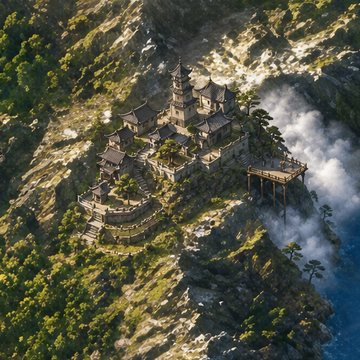
High on a mountain shoulder a small abbey of grey stone halls follows a thin stream uphill to the point where it vanishes into a cleft in the rock. Beside that spot a wooden platform juts out over the drop, and below it the clouds rise from the valleys.
Lore. Vân Khởi Quán is a Daoist abbey (đạo quán) of mountain hermits and teachers, sworn to Thúy Vi Tông and founded by Tống Tọa Vân, the last student of Không Sơn Viện, who is still its abbot. Its teaching is to walk to where the water ends, then sit and watch the clouds rise, and a novice's first lesson is a day on the platform with nothing to do. The abbey works a small mica mine and calls the stone cloud made solid.
History. Tống Tọa Vân came to these hills as a boy, the only disciple Thôi Bất Kiến took after becoming master of Không Sơn Viện in 460. In 500 his master, with no heir, gave the hills, his whisk and his only student to Phùng Yên Hà of Thúy Vi Tông. In 540 Tống Tọa Vân founded Vân Khởi Quán higher on the mountain, to walk where the water ends and watch the clouds rise, and swore the abbey to Thúy Vi. In 560 its monks opened the mica mine of Vân Mẫu Khoáng and said the stone was cloud made solid. Over the centuries hermits and teachers drifted up the mountain to the abbey, and Thúy Vi took to sending its restless disciples there to learn stillness. In 1080 the mica ran thin, and the abbot said only that clouds, too, pass.
Levels. A row of hermit cells is cut into the cliff beside the platform and a stone path climbs to a second, higher terrace. · A stacked three-roofed sutra tower rises above the halls, and a covered walk follows the stream from the gate to the platform.
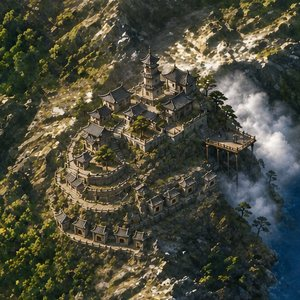
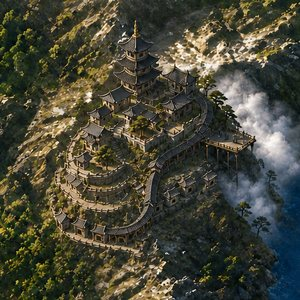
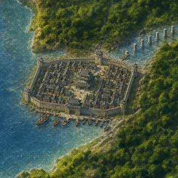
A walled port city of grey roofs stands on bleak tundra coast where a broad river meets the sea at a shallow ford. Across the ford march a line of tall stone pillars, each with a lamp niche, marking the safe crossing for wagons and boats alike.
Lore. Hàn Tân Thành is the northern ford and port of the cold coast, a city of fishers and ferrymen. It has changed hands twice and remembers both: the year the Cold Ford came home, the fishers lit lamps on every boat for a month, and the lamps in the ford pillars are still lit on that month's first night each year. Old families keep a jar of pine resin by the door, a joke about the tax they once could not pay.
History. In 430 fishers and ferrymen built Hàn Tân Thành at the cold ford of the north coast, under the protection of Không Sơn Viện. When Không Sơn's last master gave his hills to Thúy Vi Tông's founder in 500, the Cold Ford came with them. In 668 Tùng Đào Cung marched on the Cold Ford coast without asking the Pivot for a writ, and in 672 it took the coast and the city; Chung Hoài Cực, Kỳ Tùng Ẩn's old drinking friend, let it stand, and the Compact's first crack showed. Under Tùng Đào the fishers were taxed in pine resin they did not have, and from 674 many left for the hills. In 901 Thúy Vi marched to take back the Cold Ford, this time holding the Pivot's writ. In 905 it retook the coast and Hàn Tân Thành after more than two centuries, and in 906, when the Cold Ford came home, the fishers lit lamps on every boat for a month.
Levels. The walls reach the far bank and a fortified bridge-gate rises at the middle of the ford. · A tall beacon tower stands over the harbour, and a second line of pillars marks a deep channel for larger ships.
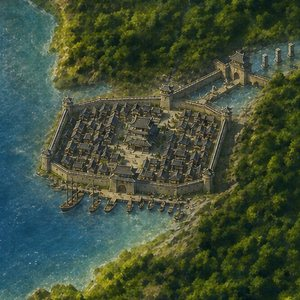
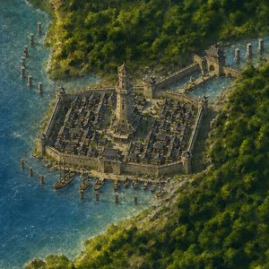
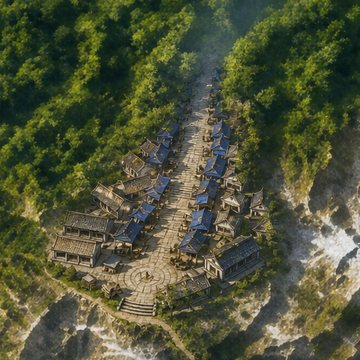
A broad stone stair climbs from the valley into the mountain haze below Thúy Vi Tông, lined on both sides with stalls under indigo cloth awnings. On misty days the awnings fade into the haze one step at a time, so the market seems to climb into cloud.
Lore. The market grew at the foot of Thúy Vi Tông in the mountain mist and is named for it. Herbs, pill ingredients and scripture are its trade, and scholars from three sects come to buy the red-leaf bookmarks of Thu Diệp Thôn. Each stallholder hangs a small bell from the awning so customers can find the stall by ear in the fog.
History. Before the market, the foot of the mountain was only the place where Thúy Vi's disciples met the carters who brought up rice and herbs. In 600 a market had grown there in the mountain mist, and it took the name Lam Yên Thị. Its stair was paved step by step as each stallholder laid the stones in front of a stall, so no two steps quite match. It became the place where the sect sold the pills it did not need and bought what its herb terraces could not grow, and scholars climbed it for copied scripture. The custom of awning bells began on a fog day when two buyers searched for each other's stalls from morning to noon. Within living memory the red leaves of Thu Diệp Thôn came onto its stalls as bookmarks for scripture, and scholars from three sects now climb the stair to buy them.
Levels. A second side stair of stalls branches off halfway up, and an inn with a double grey roof stands at the foot. · A covered market hall straddles the stair's midpoint, and a stone gate arch marks the market's lower entrance.
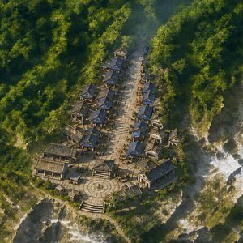
A walled town of grey roofs at a river mouth stands inside a vast grid of ancient cypresses planted in straight rows. From any approach the dark columns of the trees march out in lines, and the town sits at the centre of the pattern.
Lore. Không Sơn Viện's students planted the cypress groves around Bách Diệp as a lesson in patience, and the trees have long outlived the academy. No townsman may cut a cypress, and a dead one is replaced by a seedling grown from its own cones. The town trades cypress incense and resin along the coast.
History. In the Age of First Gates the river mouth here was a fishing landing below the hills of Không Sơn Viện. In 240 the academy's students planted the cypress groves around Bách Diệp as a lesson in patience, setting each seedling on a measured line. The town grew up in the middle of the grid, its streets laid along the rows the students had drawn. When Không Sơn's last master gave the hills to Thúy Vi Tông, the town passed with them, and the new sect kept the old rule that no cypress may be cut. Over the centuries the groves grew taller than any roof, and the town learned to live by their resin and incense. Townsfolk say the trees are the academy's last lesson, and the only one anyone ever finished.
Levels. The grid is extended along the river and an incense workshop quarter is added inside a longer wall. · A tall cypress-wood hall of the incense guild rises at the town's heart, and a stone quay lines the river mouth.
A walled timber town of grey roofs sits on the coast below steep forested ridges. A long wooden log flume runs from the ridge tops straight down to the harbour, and logs rattle along it into the water.
Lore. Woodcutters singing on the ridges below Không Sơn Viện were once asked to sing more quietly, and the town they founded is still called Tiều Ca. Its woodcutters sing to this day, but only below the old academy's boundary stones, out of habit rather than fear. Its timber goes by sea to the cape and to Yên Ba.
History. Woodcutters worked these ridges in the Wild Age, long before any sect stood above them. When Không Sơn Viện was founded on the mountain, its students found the woodcutters' songs too loud for their quiet. In 190 the woodcutters singing on the ridges below the academy were asked to sing more quietly, and the town they founded on the coast is still called Tiều Ca. They set boundary stones on the slope, and above those stones the woodcutters fall silent to this day. The log flume was built to bring timber down without the shouting of teams and oxen, and it became the town's pride. After the hills passed to Thúy Vi the timber trade grew, and Tiều Ca's logs now go by sea to the cape and to Yên Ba.
Levels. A second flume comes down a neighbouring ridge and a sawmill house stands over the log pond. · A stone harbour wall shelters the timber ships, and a tall woodcutters' guild hall rises inside the walls.
A small fishing village of grey roofs lies on the shore under a long ridge. On the ridge top a single huge bare oak stands black against the sky, its branches crowded with roosting crows.
Lore. Crows gathered on the ridge in such numbers that the village beneath was named Ô Đề. Villagers feed them at the new year and believe the crows warn of storms by leaving the oak. Fishers look up at the ridge before they set out.
History. Fishers beached their boats under this ridge in the Age of First Gates, without a village to speak of. In 410 crows gathered on the ridge in such numbers that the village growing beneath was named Ô Đề. The great oak on the crest was already old then, and the crows have roosted in it ever since. Fishers learned that the birds leave the oak before a storm, and began to watch the ridge before setting out. The custom of feeding the crows at the new year followed, and no villager will harm one. The village passed with the hills to Thúy Vi Tông, and its boats now sell their catch to the sect's towns along the coast.
Levels. A few more houses climb the slope toward the ridge and a small fish-smoking shed lines the shore. · A small shrine to the crows stands at the foot of the oak, and a stone pier serves the boats.
A coastal village of grey roofs lies under wooded slopes, with a long line of split bamboo pipes running down from the woods on wooden trestles. The pipes end in a row of stone troughs in the village square, always running.
Lore. A spring in the woods above the village cured the coughing sickness of 760, and the village took its name from its woods and springs. The pipe line was built to bring the water down for the sick, and every family repairs its own length of it. Travellers still come to fill jars at the troughs.
History. Before it had its name, the village was a few fishers' houses on the shore below the wooded slopes. In 760 a coughing sickness spread along the coast, and a spring in the woods above the village cured those who drank from it. The village took its name from its woods and springs, and its families together built the long bamboo pipe line to carry the water down to the sick. Each family took one length of it to keep in repair, a duty passed from parent to child. Travellers and the sick of other villages came to fill jars at the troughs, and some of them stayed. The spring has never failed, and the villagers say that is because no one has ever sold its water.
Levels. A small roofed spring-house is built at the top of the pipe line and a second line feeds a bath-house. · A healers' lodge with a double grey roof stands by the troughs, and the trestles are rebuilt in stone.
A small village of grey roofs by the shore stands in front of a grove of maples that burns crimson every autumn. Wooden frames of pressed leaves dry in rows along the house walls.
Lore. Red leaves from Thu Diệp Thôn are sold in Lam Yên Thị as bookmarks for scripture, and scholars from three sects come to buy them. Each leaf is pressed between boards for a season. The villagers say a leaf picked by a cultivator turns brown, so only mortals may gather them.
History. For most of its life the village was a quiet fishing place on the shore, known only for the red maples behind it. Its people pressed the leaves for their own pleasure and for the little shrines of the coast. In 1140 red leaves from Thu Diệp Thôn began to be sold in Lam Yên Thị as bookmarks for scripture, and scholars came from three sects to buy them. The trade made the village busier than it had ever been, and drying frames went up along every wall. The rule that only mortals may pick the leaves grew with the trade, and the villagers keep it strictly. The grove is now tended as carefully as any herb terrace in the hills.
Levels. The maple grove is extended up the slope and a long drying shed for pressed leaves is built. · A small hall for sorting and wrapping the leaves stands by the road, its double grey roof facing the grove.
A stepped quarry face is cut into a forested hill, its terraces banded with bright green stone. A cart ramp zigzags down the cut to the road at its foot.
Lore. Green jade was found in these hills when they belonged to Không Sơn Viện, but the academy forbade mining it, so the mountain stayed quiet. When the hills became Thúy Vi's, the mine was opened at last in 505. Today Hồng Lô Cốc works it under Thúy Vi, and its jade goes into pill bottles and furnace fittings.
History. The green hills of Thanh Loan Lĩnh kept their jade unseen through the Wild Age. In 300 green jade was found in the hills, but Không Sơn Viện forbade mining it, so the mountain stayed quiet. For two centuries the find was known and left alone, and the academy's students walked past the green outcrops on the way to their lessons. When the hills passed to Thúy Vi Tông, the new sect wanted stone for its furnaces and pill vessels. In 505 the green jade mine of Bích Ngọc Khoáng was opened at last. In time its working passed to Hồng Lô Cốc, the alchemists' valley sworn to Thúy Vi, which cuts the jade into pill bottles and furnace fittings.
On a bare mountain slope a fan of glittering silver mica tailings spills down from a dark mine mouth, shining like a cloud resting on the rock. Above it thin seams in the cliff catch the light.
Lore. The monks of Vân Khởi Quán opened this mine and say its stone is cloud made solid; they set it in the abbey's windows and lamps. When the mica ran thin, the abbot Tống Tọa Vân said that clouds, too, pass. The monks still dig a little each year, more for the lesson than for the stone.
History. The mica of this slope glittered unseen above the clouds until the monks of Vân Khởi Quán came up the mountain. In 560 they opened the mica mine and said the stone was cloud made solid. They set its thin sheets in the abbey's windows and lamps, so the halls glow pale at night. For five centuries the mine was dug by hand, a little at a time, as a practice as much as a trade. In 1080 the mica of Vân Mẫu Khoáng ran thin, and the abbot Tống Tọa Vân said that clouds, too, pass. The monks still dig a little each year, more for the lesson than for the stone.
High on a ridge above the haze a cluster of old halls stands silent, their doors open, the roof of the great lecture hall sagging and its small pagoda missing its top tier. Beside the path a raw landslide scar runs down the slope, and in it a stone gate carved with lines of poetry stands half-buried, its opening blocked with newer stone.
Lore. The Academy of the Empty Mountain was so quiet that, as its poem says, on the empty mountain no one is seen. Its last master gave it away and died here, and Thúy Vi has left it unlocked and unlooted ever since; no visitor takes so much as a brush. Travellers who sleep here tell of someone reading aloud in the next room.
History. In 180 Bùi Lộc Trại founded Không Sơn Viện in the hills of Thanh Loan Lĩnh, an academy so quiet that, as the poem says, on the empty mountain no one is seen. The woodcutters of Tiều Ca were asked to sing more quietly below it, and its students planted the cypress groves of Bách Diệp as a lesson in patience. When green jade was found in its hills the academy forbade mining it, and in the Age of Seven Seats fishers and ferrymen built Hàn Tân Thành under its protection. Bùi Lộc Trại died in 460, and Thôi Bất Kiến became master and took no disciple but one boy, Tống Tọa Vân. In 500, with no heir, Thôi Bất Kiến gave the hills, his whisk and his only student to Phùng Yên Hà, and the empty mountain became Thúy Vi's. He died in the empty academy in 520, and Phùng Yên Hà left it as it was, unlocked and unlooted. In 830 a landslide on the ridge uncovered a stone gate carved with Không Sơn's poem, and Thúy Vi sealed it again. In 1195 a traveller who spent a night in the empty halls swore he heard someone reading aloud in the next room.
A frozen tundra plateau is crossed by deep trenches worn in the snow by heavy beasts. Great grey boulders stand scattered over it, scored with long gouges and polished smooth where ice rhinoceroses rub their horns.
Lore. Ice rhinoceroses cross this plain each season, cutting the same trenches year after year. Hunters judge a herd by the fresh gouges on the rubbing stones and steer well clear. Shed horn found here is prized by the alchemists of the hills.
Deep Sea of Pines · 13 places
Out of an endless sea of pines a long ridge rises, crowned with stacked halls of dark timber and blue-grey tile. Along the crest runs an open-sided roofed gallery so long that it follows the ridge out of sight, and the wind through the pines sounds in it like surf.
Lore. Tùng Đào Cung, the Palace of the Pine Waves, is a righteous great sect of spell cultivators (pháp tu) of Wood and Water, lord of the pine sea, the great river basin and the northern lake. Its disciples sit in the long gallery and learn to hear the pine waves before they are taught a single art, and pilgrims still climb the ridge only to listen. Thôi Khinh Hồng, the founder's first disciple and its second head, lives in the retreat beside the seat, and the palace lowers its voice near it.
History. In 200 Kỳ Tùng Ẩn founded Tùng Đào Cung among the endless pines, with his first disciple Thôi Khinh Hồng beside him. The palace raised Tùng Gian Thành below it in 240, took the river basin of Cửu Khúc Xuyên in 260, and extended its rule to Lãnh Nguyệt Lâm and the long lake in 330. In 270 Kỳ Tùng Ẩn and Chung Hoài Cực drank for three days at Thạch Kiều Thành, a peace that held until 502, when he broke it to march on the heart with Lạc Hà Tông. The War of the Pivot ended in defeat in 509, the iron chain of Thiết Tỏa Quan lying on the river bed. In 672 the palace took the Cold Ford coast from Thúy Vi without a writ and held it until 905. Kỳ Tùng Ẩn died in 690 at 620 and Thôi Khinh Hồng became the second head; in 900 she retired to the retreat by the seat, and her disciple Đàm Tùng Lại took the headship. The palace kept the long lake in the arbitration of 944, and fought Lạc Hà over the river tolls on the Ngư Ca border in the Ferry War, which ended in 1175 with neither side forgiving.
Levels. A second terrace of halls climbs the far end of the ridge and the gallery gains a bell pavilion at its midpoint. · A tall many-roofed pagoda rises at the gallery's far end, and a broad stone stair road is cut down through the pines toward the city below.
Deep in the pine sea the ground breaks into ravine after ravine. Over the deepest, on a single pillar of rock rising from its floor, stands a hexagonal pavilion, and the academy's halls step along the ravine rim around it.
Lore. Vạn Hác Viện is an academy of sound cultivation sworn to Tùng Đào Cung, keepers of the zither Tùng Phong Cầm. Its founders were listeners: a monk played under these pines until his zither sounded like ten thousand ravines, and they stayed to learn. The academy teaches that a piece is finished only when the listener forgets why he came, and students who play on the pillar pavilion hear every note thrown back by the ravines.
History. Before the academy, the ravines of Thâm Tùng Hải were only a hard stretch for Tùng Đào's road wardens. In 620 a monk played the zither in the pines here until it sounded like ten thousand ravines, and his listeners founded Vạn Hác Viện around him and kept his Tùng Phong Cầm. The pavilion on the rock pillar is said to stand where he sat. Within two years its zither students were practising in Tùng Phong hamlet, where the villagers learned to sleep through anything. The academy swore itself to Tùng Đào and in time took the malachite workings of Thạch Lục Khoáng into its care. In 1080 a Vạn Hác student played so well under the pines that Thiên Xu's envoy forgot his message.
Levels. A second hall of practice rooms lines the far rim and a narrow stair is cut down the side of the pillar. · A tall three-roofed hall of the zither rises on the highest point of the rim, facing the pillar pavilion across the ravine.
A walled city at a river mouth on the coast, its grey roofs half hidden among tall pines that grow inside and along its walls. In the wall facing the palace ridge stands a huge round moon gate, and from the harbour road the moon rises framed in it among the pines.
Lore. Tùng Gian Thành was Tùng Đào Cung's first city and is its port on the coast, with a formation laid over its walls. Its people never cut a pine inside the walls and build around the trees. On the Night of a Thousand Pines they hang a lantern on every tree around the city, and one of its great halls is roofed with beams from a single fallen pine, carved by the Lâm clan of Lộc Minh.
History. In 240 Tùng Đào Cung raised Tùng Gian Thành among the pines below its palace, its first city. It grew as the palace's port where the river meets the sea, with the pine sea's timber, resin and pilgrims passing through its gates. Long after the founding, the Lâm clan's woodcarvers of Lộc Minh made the beams of a new hall in the city from a single fallen pine. In 880 the city held its first Night of a Thousand Pines, hanging a lantern on every tree around it, and the festival has been held ever since. The city's formation keeps the sea storms off its trees, and townsfolk boast that no pine inside the walls has fallen since the city was founded.
Levels. The walls grow to take in a new pine grove, and a carved timber hall with a double roof rises behind the moon gate. · A second moon-viewing terrace tower stands above the harbour, and a stone mole extends the port into the sea.
In a wide clearing under old pines, a market stands in a perfect ring: round stall-houses with low grey cone roofs set shoulder to shoulder around an open circle. A single gate in the ring opens onto the road through the pine sea.
Lore. Tùng Hạ Thị began as a ring of tents pitched by pilgrims who came to hear the pine waves of the new palace, and it kept the ring when the tents became houses. It sells to caravans on the road through the pine sea and to travellers bound for the palace. The loose cultivator Lâm Dã Hạc was born here to a woodcutter's family, and the market still points out the roof where a crane landed on the day of his birth.
History. In 205 pilgrims who came to hear the pine waves of the newly founded Tùng Đào Cung stayed on, and Tùng Hạ Thị began as a ring of tents beneath the pines. As the palace grew, the pilgrims' ring became a market for the road through the pine sea, and the tents were rebuilt as round houses on the same circle. Caravans made it a resting place, and woodcutters' families settled behind the ring. In 1145 Lâm Dã Hạc was born here to a woodcutter's family, and a crane landed on the roof the day he was born. In 1190 wolves from the deep pines followed the caravans to Tùng Hạ Thị, and Tùng Đào doubled the road watch, posting guards at the ring's gate.
Levels. A second, outer ring of stall-houses is begun and a caravan yard is fenced beside the gate. · A round two-storey market hall rises in the centre of the ring, and a timber palisade with a roofed gate encloses both rings.
A walled town of grey roofs lies on a low river mouth at the forest's edge, every beam end of its timber houses carved. At the end of its ferry pier stands a life-sized stag carved from pine, head raised as if calling across the water.
Lore. A deer called at the forest's edge every dawn for a year, and the Lâm family settled where it called and named the place Lộc Minh. The Lâm clan's woodcarvers are known across the pine sea, and they made the beams of a new hall in Tùng Gian Thành from a single fallen pine. The town is held by Lãng Đào Môn, the ferrymen's sect (môn phái) that carries the river trade, and its pier is one of their landings.
Levels. A carvers' quarter of open workshops spreads along the river bank and the ferry pier is doubled. · A tall carved timber hall of the Lâm clan rises over the town, and a stone ferry landing replaces the old pier with the stag moved to its end.
A walled city stands among bamboo groves on the bank of the southern river, where a broad stone ferry stair runs down into the water. At the top of the stair, set upright on a stone plinth, stands a single huge rusted iron link from a sunken chain, taller than a man.
Lore. Cổ Độ Thành stands at the old ferry on Tùng Đào's southern river, and its ferrymen still cross it as they did before the city had walls. In the War of the Pivot they carried the iron chain for Thiết Tỏa Quan link by link, and now they drag those links back out of the river and sell them to smiths. The great link at the ferry stair is said to be the first one raised, and no one has ever sold it.
History. Long before it had walls, a ferry crossed the southern river here, and the old ferry gave the city its name. In 320 Tùng Đào Cung founded Cổ Độ Thành at the crossing. In 506, during the War of the Pivot, the ferrymen of Cổ Độ carried the iron chain for Thiết Tỏa Quan link by link up the river road. Two years later Thiên Xu broke the fort, and the thousand-fathom chain sank to the river bed. For centuries the river kept it, until in 990 the people of Cổ Độ began dragging its links from the river, and smiths paid well for the old war iron. Smithies have grown up around that trade, and the clang of iron by the ferry stair is now as old a sound as the boatmen's calls.
Levels. A smiths' quarter with tall chimneys grows outside the river gate, and a second ferry stair is built downstream. · A tall drum tower of the ferrymen rises over the stair, and the walls take in the smiths' quarter and a stone river quay.
A small coastal village of grey roofs stands in a bright grove of white birches. Among the pale trunks the black stumps of old burned trees still stand, so the grove is pied black and white.
Lore. White birches grew where a forest fire had burned, and the new village was named Bạch Hoa. Villagers strip birch bark for writing sheets and boxes, and will not pull up the old stumps, saying they hold the ground for the birches. Charcoal from those stumps is never burned in a house.
Levels. A bark workshop with long drying racks is built at the grove's edge and the jetty is lengthened. · A small double-roofed shrine stands among the oldest stumps, and a stone pier serves boats carrying bark goods.
A river village of grey roofs sits beside a grove of tall pines planted in neat rows, each with a small flat stone at its foot. The rows run from the riverbank to the forest edge like ranks of soldiers.
Lore. When a beast tide overran Hổ Khiếu Trấn, its survivors moved to Thanh Tùng Thôn and planted a green pine for each of their dead. The pines are tall now, and each spring families sweep the stones beneath their own trees. No one cuts or taps them.
Levels. A low stone wall is built around the memorial grove and a few new houses line the river path. · A small ancestral hall with a double grey roof stands at the head of the pine rows.
A small river village of grey roofs lies in the pines. Between two great pines at its edge long strings are stretched, and they hum and moan whenever the wind blows, a sound that carries over the whole hamlet.
Lore. Vạn Hác Viện's zither students practise in Tùng Phong hamlet, and the villagers have learned to sleep through anything. A student once strung the wind strings between the two pines, and the village keeps them tuned in return for the students' quiet hours. Children here can name a note before they can name the stars.
Levels. A small open practice pavilion for visiting students is built near the strings. · A second pair of pines is strung across the river, and a guesthouse with a double grey roof stands by the ford.
On a high slope of the pine sea, small mine mouths open between the exposed roots of giant old pines. Heaps of green malachite spoil lie below them, bright against the brown needles.
Lore. Malachite was found under the roots of the oldest pines, and Tùng Đào let it be dug only where no tree must be cut. Miners tunnel between the roots and shore them with stone, never timber. Today Vạn Hác Viện holds the workings, and its malachite becomes green pigment for painters and inlay for zithers.
On a high summit above the pine sea stands a grove of pines with bark the colour of ash, older and paler than any around them. An old fence of stone posts and timber rails rings the grey grove, and the air inside is still even when the forest below is roaring.
Lore. A wild spirit vein runs under the grey pines, close to the heart and the Pivot's border. Tùng Đào fenced it and still guards it, and its disciples cultivate there in turns. Foresters say the pines turned grey from drinking the vein's metal and earth qi.
History. Before it had a name, the grey grove on the summit was known to woodsmen only as a place where the wind fell silent. Tùng Đào Cung held the pine sea from its founding, but only in 470 did its disciples fence the grey pines over an old spirit vein near the heart and name it Thương Tùng Mạch. Under the North Star Compact, the vein could change hands only by a fall, a gift, an oath or a war licensed by the Pivot's writ, and it has stayed Tùng Đào's. In the Age of Vein Wars, when neighbours fight short wars over the wild veins near their borders, Tùng Đào set a standing watch on the grove, for it lies close to Thiên Xu's land. Its disciples cultivate there in turns, and the stillness under the grey pines is said to help a cultivator hear his own meridians.
Deep in the pine sea, on a river bend, the walls of a small town have sunk under moss and young trees. Its timber watchtower lies toppled across the gate, scored with claw marks as long as a man is tall.
Lore. Woodsmen founded Hổ Khiếu Trấn where the tigers are, and the tigers ended it. The beast tide that overran it left no one to rebuild, and Tùng Đào never resettled it; its survivors' children live at Thanh Tùng Thôn. Hunters say a tiger still dens in the old magistrate's hall.
History. In 380 woodsmen founded Hổ Khiếu Trấn deep in the pine sea, where the tigers are, and lived on timber and pelts. For centuries the town held its palisade against the forest. In 700 a tiger as large as a house was seen near the town; Tùng Đào sent three disciples, and two came back. In 734 a beast tide poured out of the deep pines and overran Hổ Khiếu Trấn, and the tigers' roar was the last thing its people heard. A year later the survivors moved to Thanh Tùng Thôn and planted a green pine for each of their dead. The town was never rebuilt, and the forest has taken back its streets.
On a forested bluff above the river road stand the broken walls of a fort, its gate towers cracked and one fallen. At the bluff's edge a massive stone anchor-block still holds a great iron ring, snapped open, from which the chain once ran across the river.
Lore. Thiết Tỏa Quan was the fort of Tùng Đào and Lạc Hà in the War of the Pivot, where they stretched an iron chain across the river road to the heart. Thiên Xu broke it, and the chain sank to the river bed, where the people of Cổ Độ now drag up its links. Tùng Đào holds the ruin but has never rebuilt it, and its elders bring disciples here to see what breaking the peace cost.
History. At the end of the Age of Seven Seats, Tùng Đào Cung and Lạc Hà Tông marched together on the heart of the continent, and Kỳ Tùng Ẩn broke the peace of the three days. In 503 the allies raised Thiết Tỏa Quan and stretched an iron chain across the river road to the heart. Through the years of the siege the ferrymen of Cổ Độ kept carrying the chain's iron up the river link by link. In 508 Thiên Xu Tông broke Thiết Tỏa Quan, and the thousand-fathom chain sank to the river bed. The war ended the next year with the allies beaten and no land taken, and soon after the North Star Compact was set at Thạch Kiều Thành. The fort was left as it fell. Nearly five centuries later the links of its chain began to be dragged from the river at Cổ Độ and sold to smiths.
Land of the Nine-Bend River · 11 places
A shallow forest valley opens off the road, its floor striped with herb beds that step down toward the river below. At the valley mouth sit four moss-grey stone hermits in a row, each cradling a lingzhi in its lap and facing the road as if judging who may enter. The air smells of bitter roots and the smoke of drying sheds.
Lore. Thải Chi Cốc is a minor sect (tiểu tông môn) of herb growers and alchemists (luyện đan sư) sworn to Tùng Đào Cung. Its founders were lingzhi pickers who had left the world, and the valley still sings their old song of the four hermits at every planting. Since Nghiêm Linh Chi became valley-mistress in 1000, the river's orphans have worked the fields and learned their letters in the drying sheds, and many never leave.
History. In 480 lingzhi pickers who had turned their backs on the world settled this valley under the pines of Cửu Khúc Xuyên and founded Thải Chi Cốc, singing the song of the four hermits as they cleared the ground. Tùng Đào Cung, lord of the basin since the Age of First Gates, took the little sect under its banner. In 520 the valley planted the first spirit-herb (linh dược) fields along the river, and for a century travellers said the valley smelled of medicine before they saw a roof. The four stone hermits at the valley mouth are thought to date from those years, though no one agrees whose hands carved them. The valley kept out of its lord's wars, sending pills (đan dược) downriver rather than disciples to the field. In 1000 Nghiêm Linh Chi became valley-mistress and opened the herb fields to the orphans of the river, and the valley has been louder ever since. The riverside town of Hà Bạn Trấn answers to it today.
Levels. More drying sheds and a stone furnace house with a tall chimney; the herb terraces climb further up both valley walls. · A second pagoda hall joined to the first by a covered stair, an upper grove of shaded lingzhi logs, and long orphan dormitories along the lower fields.
Great projects. herb garden expansion · alchemy hall
On low wooded ground just back from the river stands a sect gate made of two great river-boat hulls, upturned and set on end so their keels meet overhead in a pointed arch. Behind it, tarred timber halls and rope sheds climb a gentle rise, and a path of crushed shell runs down toward the landing at Đào Sa Thị. The whole place smells of pitch and wet hemp.
Lore. The ferrymen of the Nine-Bend River banded together as Lãng Đào Môn in 790, a minor sect (tiểu tông môn) under Tùng Đào Cung that carries most of the river trade. Its disciples learn water arts (thủy pháp) on a deck before they learn them in a hall, and a ferryman who retires burns his first oar at the gate of hulls. Since the Ferry War the sect counts its lost boats aloud each spring, one by one.
History. Before 790 the boatmen of Cửu Khúc Xuyên worked alone, each family with its own landing and its own feud. In 790, the year the War of Broken Halberds broke out on the border plain of three sects, they banded together as Lãng Đào Môn under Tùng Đào Cung, to carry the river trade as one. From 800 gold-washers gathered on the sands beside them, and the market of Đào Sa Thị gave the sect its landing. For nearly four centuries its ferries tied the river towns together while Tùng Đào took the tolls. In 1172 the quarrel with Lạc Hà Tông over the river tolls on the Ngư Ca border turned to war, and Lãng Đào's ferries burned; in 1173 Lạc Hà raiders fired its boats at the Đào Sa landing. The Ferry War ended two years after that raid with the tolls split and no land changed, and neither side forgives. Giang Cửu Khúc heads the sect today, and its slipways have not been quiet since.
Levels. A covered slipway and a second hall for rope-makers; the watch pagoda gains a lantern storey to signal ferries at night. · A stone dock of its own on the river bend with rows of rebuilt ferries drawn up, and a four-roof pagoda rising behind the gate of hulls.
Great projects. river dock · shipyard
A walled river city under endless pine, its quays set high up the bank on tall stone steps. Below them, at low water, a row of old drowned quay pillars stands in the current like a broken fence, marking where the city once met the river. When the wind turns, the forest above roars like surf, and the streets go quiet to listen.
Lore. Tùng Đào Cung founded the city in 300 on the river below its forests, and named it for the sound of the pine waves heard from the seat above. Timber merchants, river traders and the families of Tùng Đào's outer disciples live here. On windy evenings the townsfolk climb the walls to hear the pines, and a child who sleeps through the first great wind of autumn is teased for a year.
History. Tùng Đào Cung took the river basin of Cửu Khúc Xuyên in the Age of First Gates, and in 300 founded Đào Thanh Thành on the river below its forests. The city grew as the palace's market and river gate, shipping timber and pine resin downstream. In 700 a great flood on the Nine-Bend River drowned three villages, and Tùng Đào moved the city's quays up the bank; the old pillars were left standing in the water. The city prospered through the long peace of the North Star Compact, and is said to have sent boats and grain north in the Long Lake War of the Age of Vein Wars. When the Ferry War burned Lãng Đào's ferries, its merchants felt it in their ledgers, and the split tolls still sour the wharf taverns. Today it is the busiest city on the river, and the pines above it are as loud as ever.
Levels. A second row of wharf warehouses along the high quays and a pine-roofed listening terrace on the upper wall. · An outer wall reaching to the forest edge, a covered bridge over the river, and a five-roof bell pagoda that answers the pine waves.
Great projects. river levee · bridge
Where the river spreads its sand into the sea, a market sprawls across the flats on stilts. Rows of wooden washing cradles stand in the shallows, rocked by washers in wide straw hats, and at low tide the whole flat glitters with fine gold. Along the landing lie the charred ribs of burned ferries, left where they sank.
Lore. Around 800 gold-washers learned that after a thousand washings the river sand gives up its gold, and Đào Sa Thị grew beside Lãng Đào Môn. It is a market of scales, sieves and quick hands under Tùng Đào's peace, where anyone who keeps their head down can find work at a cradle. The washers still tell how Triệu Huyết Y hid among them for two years after the hunt that killed her master, and lately some swear they have seen her again.
History. Before 800 the sand flats at the river mouth held little but gulls and driftwood. Around 800 gold-washers learned that after a thousand washings the river sand gives up its gold, and Đào Sa Thị grew beside the new ferry sect Lãng Đào Môn, which made its landing here. For three centuries the market lived on gold dust and ferry traffic under Tùng Đào Cung's peace. In 1090 Thiên Xu, Tùng Đào and Băng Tâm killed the demonic-path (ma đạo) master Mặc Huyết Sinh, and his last disciple Triệu Huyết Y escaped; in 1092 she hid for two years among the gold-washers here. A generation ago the Ferry War broke out, and in 1173 Lạc Hà raiders burned Lãng Đào's boats at the Đào Sa landing. For years afterward the washers fished nails from the river along with their gold. The burned ribs still lie at the landing, and the market washes on.
Levels. A raised boardwalk links the stalls to a rebuilt landing, with a red-doored assay house at its head. · A market square on piles behind a timber palisade, a small customs pagoda flying Tùng Đào's colours, and washing cradles out to the far sandbars.
Great projects. harbour · market hall
A low riverside town whose fishing lanes all end at the water. At its upstream corner a great timber waterwheel turns beside a mill house, grinding roots from Thải Chi Cốc into powder, and its creak carries to the road. Herb sacks stand stacked on the short jetties, waiting for boats.
Lore. Hà Bạn Trấn was a fishing hamlet until 290, when the river's new course ran past its door and it grew into a town on the new bank. It now answers to Thải Chi Cốc, grinding and shipping the valley's herbs downriver. The townsfolk have a saying for every stroke of luck: the river came to us, so we do not chase it.
Levels. A second waterwheel and a stone mill house, with a covered herb wharf along the bank. · The wall runs along the river with a water gate, and a row of mills turns in a cut channel beside the town.
The town sits so deep in the shade of old beeches that its roofs are green with moss even in summer. Between the houses stand round timber granaries raised on squat stone staddles shaped like mushrooms, so that no rat can climb them. At noon the lanes are cool and dim, and smell of grain dust.
Lore. In 600 Tùng Đào Cung set its northern granaries in the shade of Lâm Hạ Trấn, so the grain would keep, and the town has lived as a storehouse ever since. Its people are granary-keepers, coopers and rat-catchers, proud that their grain does not spoil. Felling a shade tree inside the town is the one crime the elders never pardon.
Levels. More round granaries on staddle stones and a timber fence around the storehouse quarter. · A stone granary hall with a tall vented roof under the oldest beeches, and a full town wall with a grain gate on the river.
In winter the village almost vanishes: low turf-roofed houses sunk half into the ground, chimneys smoking through the drifts. Each house is marked by a tall red-painted door-pole so neighbours can find each other under the snow. In summer the poles stand oddly tall over a cluster of grassy mounds by the upper river.
Lore. Winters on the upper river are so deep that the houses of Tuyết Ốc have been built half under the snow since at least 340. Families dig tunnels from door to door and visit underground all winter. A new bride paints her husband's door-pole fresh red on her first spring in the village.
Levels. A longhouse dug into the riverbank for winter gatherings, with snow-tunnels from every door. · A small timber stockade and a raised storehouse above the snowline, and door-poles crowned with carved finials.
A handful of grey-tile houses sits around a small snowy square, and in the middle of the square grows one gnarled winter plum behind a low bamboo fence. In the cold months its red blossoms are the only colour for days of travel. Villagers bow to it on their way down to the river.
Lore. In 420 a winter plum bloomed through the snow above a buried child, and the diggers found her alive; the village was named Hàn Mai. The tree in the square is said to have grown from a cutting of that plum. Every child born in winter is carried to the tree before it is given a name.
Levels. A small shrine roof beside the plum and a few new houses facing the square. · A walled courtyard around the plum with a gate arch, and a second, younger plum planted at the village edge.
The village circles a hollow at its heart, ringed with white-limed boulders: the old den of the white wolf king. Children run between the houses with wolf-tooth charms clicking at their necks. A path from the hollow leads down to the river, where women beat laundry on flat stones.
Lore. Thôi Khinh Hồng of Tùng Đào Cung slew the white wolf king of Cửu Khúc Xuyên, and in 456 the village built on its den was named Bạch Lang. Its children wear wolf-tooth charms. Each spring the boulders around the den are limed white again, and the village says that the year they are left grey, the wolves will come back.
Levels. A timber fence around the village and a small shrine at the lip of the den. · A stone wall with a gate carved with a wolf's head, and a hunters' lodge beside the den.
A long stone quay wall runs through an empty meadow, its rusted iron mooring rings hanging over grass where boats once tied up. Behind it stand the roofless stubs of warehouses, and a fresh scar of sand shows where a spring flood has opened up an old paved street. The living river runs past at a distance, along the edge of the bed.
Lore. Mortal boatmen built Đông Lưu Thành on a great bend of the northern river in 90, long before any sect held this land. They gave the river spirit a pig every spring for safe passage, until the spirit stopped answering; ten years later the river left them, and the city was abandoned in 281. Old boatmen still say all things flow east, and do not finish the saying.
History. In 90, in the Wild Age when only hermits and beasts held the land, mortal boatmen built Đông Lưu Thành on a great bend of the northern river. From 100 they gave the river spirit a pig every spring for safe passage, and the city lived well on its boats. Late in the Age of First Gates, Tùng Đào Cung took the river basin, and the city fell under its protection. In 270 the river spirit stopped answering the boatmen's offerings. Ten years later the river left them, cutting a new course across the plain, and in 281 Đông Lưu Thành was abandoned; all things flow east. Some say the spirit itself stayed behind in a pool somewhere on the old course. For more than nine centuries the city lay under silt and grass, until a spring flood in 1198 uncovered its old street on the dry bed, and children found coins of a city no one remembers.
Great projects. excavation of the old street
A long bare ridge rises between the river's bends, its crest banded with dark and pale rock like a tiger's flank. The wind funnels through a notch in the crest with a low growl, and now and then a real roar answers it from the boulders below. No path crosses it.
Lore. Herders of the lower basin say a roar on this ridge carries across all nine bends of the river, and they do not graze its slopes. A great tiger keeps its lair among the boulders, and hunters who go up for its pelt seldom come down the way they went. Tùng Đào's riders go around the ridge, not over it.
Ridge of the Jade Light · 12 places
Out of a reed marsh rise slender red-lacquered crane-roost towers, each topped with a broad platform of woven reed where the great birds stand and preen. Behind them, terraced halls climb a low wooded rise to a four-roof pagoda. The cry of cranes overhead never quite stops.
Lore. Crane riders who tamed the first cranes of the nine marshes founded Cửu Cao Phái in 700, a minor sect (tiểu tông môn) of beast tamers (ngự thú sư) sworn to Thiên Xu Tông. Its riders carried the Pivot's messages over Phá Quân's fort in the rebellion, and now circle Tinh Tủy Mạch day and night. In 1197 its head Ung Hạc Minh tamed a crane king that will let no one else ride it, and the young riders compete for the honour of grooming it.
History. In 700 crane riders tamed the first cranes of the nine marshes in Dao Quang Lĩnh and founded Cửu Cao Phái; the old line runs that the crane cries in the nine marshes and is heard in the sky. That same year the cranes were first seen landing at Hạc Quy Thôn on the same day every year, and the school has ridden the first of them since. When Phá Quân Môn rose against Thiên Xu, the crane riders stayed loyal, and in 872 they carried the Pivot's messages over the rebel fort. At the war's end in 874 Thiên Xu gave Cửu Cao Phái the rebels' holdings. In 1010 Ung Hạc Minh was born in Hạc Quy Thôn, the year the cranes stayed a month longer, and Ung Hạc Minh now heads the school. After Băng Tâm's claim to Tinh Tủy Mạch was rejected by the Pivot, the school's cranes were set to circle the vein day and night. In 1197 Ung Hạc Minh tamed a crane king that will let no one else ride it.
Levels. More roost towers out across the marsh and a long crane stable hall on the lower terrace. · A tall roost tower for the crane king beside a five-roof pagoda, and a stone landing terrace where riders come down from the sky.
Great projects. spirit beast aerie
A walled port city where the northern road meets a river mouth and the sea. Its east gate tower carries a great polished bronze disc that catches the first light before dawn, so the gate seems to burn while the streets below are still dark. Masts crowd the river quays under the walls.
Lore. Thiên Xu Tông founded Khai Dương Thành on the northern road in 280, naming it for a star of the Northern Dipper. In 900 its gate was rebuilt to face the morning star, and travellers say the city wakes before the sun: bakers, porters and ferrymen are at work in the dark. Late sleepers are called guests here, even if they were born in the city.
History. A generation after Thiên Xu Tông extended its protection over Dao Quang Lĩnh, in 280, it founded Khai Dương Thành on the northern road where it reaches the sea. The city became the Pivot's northern port, shipping ore and timber by river and by sea. Through the Age of the North Star Compact it grew quietly rich, far from the wars of the south. When Thiên Xu founded Thanh Bách Thành on the same road in the first years of the Compact, Khai Dương became the road's harbour end. In the Phá Quân rebellion of the Age of Vein Wars, the city fed and shipped the Pivot's forces in the mountains above. In 900 its gate was rebuilt to face the morning star and the bronze disc was set over it; travellers say the city wakes before the sun.
Levels. A stone sea mole with warehouses along it, and a second bronze disc on the river gate. · An outer harbour wall, a lighthouse tower on the mole, and a new walled quarter climbing the riverbank inland.
Great projects. harbour · lighthouse
A small walled town on a brook so green it looks dyed. Below the walls the stream runs over shallow stone weirs where jade-pickers kneel, sorting pebbles into baskets by colour. Polishing wheels hum in the workshops along the main street.
Lore. A jade-green brook below the ridges gave Bích Khê Trấn its name around 300, and its trade in river jade. Pickers comb the brook bed after every flood, and the carvers in town turn the pebbles into seals and hairpins for Thiên Xu's officials. When a match is made, the bride's family gives an uncut pebble from the brook as its promise.
Levels. A carvers' street with a covered market, and a stone footbridge across the green brook. · A larger wall, a jade hall with a green-glazed roof, and weirs stepping the brook far upstream.
A walled city of grey roofs and dark, narrow cypresses on the northern road, a cypress standing over every courtyard. Outside its north wall lies a small round crater pond, glassy black at the rim, where a star fell in 980. Ore carts and officials' carriages pass through its gates all day.
Lore. Thiên Xu Tông founded Thanh Bách Thành on its northern road in 520, and the city is named for its green cypresses. In 980 a star fell near the city; the fragment was sold to Thối Tinh Môn for three years of the city's taxes, and the crater filled with rain. Townsfolk toss a coin into the pond for luck, though the clerks say the city has paid that star enough already.
History. Thiên Xu Tông founded Thanh Bách Thành on its northern road in 520, in the first years of the North Star Compact, to guard the road between the heart and Khai Dương Thành. Cypress seedlings were planted in every courtyard, and the city took their name. It grew as a waystation for ore carts, officials and the Pivot's patrols in Dao Quang Lĩnh. In the Phá Quân rebellion of the Age of Vein Wars its gates stayed shut to the rebels, and it quartered Thiên Xu's troops. In 980 a star fell near the city; the fragment was sold to Thối Tinh Môn for three years of the city's taxes. The crater pond outside the north wall is all the city kept of it, and the old cypresses still stand over the courtyards.
Levels. A second market quarter inside the walls and a shrine pavilion on the crater pond's rim. · An outer wall enclosing the crater pond, and a tall tax hall with stacked roofs among the oldest cypresses.
Great projects. city wall
A fishing village on the shore of a chain of small mountain lakes stepping down a grassy slope, its boats drawn up on the gravel. At midday the lakes throw so much light that the village seems to stand in a blaze. Flat reed rafts lie on the beach, ready for the evening nets.
Lore. Light glints so brightly on the mountain lakes at Ba Quang that travellers have taken the village for a fire since at least 600, and more than one has run up with a bucket. Its people net lake fish and ferry Cửu Cao Phái's riders across the water. The elders squint their whole lives, and a squint is thought handsome here.
Levels. A timber boat landing and a drying rack for nets along the lowest lake. · A small walled hamlet with a lakeside shrine and a crane perch for Cửu Cao's riders.
A quiet marsh-edge village of reed-thatched and grey-tile houses on a slow river. In the meadow beyond, the villagers keep a crescent-shaped landing pool dug in the turf and edged with flat grey stepping stones, where the cranes come down each year. They clear its weed by hand all summer.
Lore. Cranes return to the marshes here on the same day every year, and since 700 the village where they land has been called Hạc Quy; Cửu Cao Phái rides the first of them. Ung Hạc Minh was born here in 1010, the year the cranes stayed a month longer. On landing day the whole village stands silent around the crescent pool until the last bird folds its wings.
Levels. A reed-roofed watching shelter beside the crescent pool and a few new houses along the river. · A timber fence, a small shrine to the cranes, and a rest hall for Cửu Cao's riders.
A hillside village of log houses above a high meadow where deer gather each spring. At the meadow's edge stands a black stone stele carrying Thiên Xu's ban on hunting, and shed antlers are heaped around its foot. A rail fence keeps the village goats off the deer's grass.
Lore. Deer have gathered each spring in the high meadow of Lộc Uyển since before 380, when Thiên Xu forbade hunting there. Children collect the antlers the stags shed and lay them at the stele as a gift to the Pivot. Poachers from outside are rare; the villagers report them before the deer have even scattered.
Levels. A gamekeeper's lodge beside the stele and a fenced herb garden. · A small walled hamlet with a gate house of the Pivot's wardens and a covered antler hall.
A glacier peak stands beside taller neighbours, white ice over dark rock. Its broad shoulder holds a flat terrace cut into the ice, still bristling with rows of rusted iron stakes where weapon racks once stood. At night a single faint star hangs just above its summit.
Lore. From 760 the disciples of Phá Quân Môn drilled here at night under the faint companion star beside the Dipper, as if to prove the small star could break armies too. Since the rebellion was crushed no one drills here; the stakes remain and the wind sings over them. Thiên Xu's patrols come up now and then only to look, and go down again.
History. Thiên Xu's protection reached Dao Quang Lĩnh in the Age of First Gates, and this glacier peak, too cold to farm or mine, was left to the wind. Late in the Age of the North Star Compact, Phá Quân Môn was founded in the mountains below it as a vassal of the Pivot. In 760, the year Chung Hoài Cực died, Phá Quân's disciples began to drill at night on Phụ Tinh Phong under the faint companion star, cutting a terrace into the shoulder and setting iron racks for their weapons. Whether the drills were meant for the Pivot's enemies or the Pivot itself, no one asked until a century later, when Hạ Lang Tinh led Phá Quân Môn against its lord. Within a few years Thiên Xu destroyed Phá Quân Môn, and the night drills ended. The racks rotted down to their iron stakes, which still stand in rows on the terrace. No sect holds the peak today.
The roof of the heartland: a dark rock peak rising clear of the clouds, its summit ending in a thin stone needle. Strips of white cloth tied around the needle stream in the wind, and below it a pilgrims' road of a thousand rock-cut steps runs up the spine of the ridge. On clear nights the stars seem to rest on the needle's tip.
Lore. Thiên Xu's first watchmen climbed Trích Tinh Phong in 260 and reported that one could pluck the stars by hand, and the peak has carried that name since. By 1100 the pilgrims' road up it had been cut into the rock in a thousand steps. Pilgrims tie a white strip at the needle and make a wish on a star; it is bad luck to say which one.
History. In 260, in the Age of First Gates, Thiên Xu's first watchmen climbed Trích Tinh Phong and came down saying one could pluck the stars by hand. The Pivot, founded under the stars of the Northern Dipper, kept the summit as a place to watch them. Two centuries later its patrols found the Star Marrow vein, Tinh Tủy Mạch, high near the peak, and posted a guard that has never been withdrawn. Through the Age of the North Star Compact pilgrims climbed to the needle by goat paths and tied their white cloths at the top. By 1100 the pilgrims' road had been cut into the rock in a thousand steps. Since Băng Tâm's claim to the vein was rejected by the Pivot, pilgrims climb under the eyes of a doubled guard and circling cranes.
High on a black rock face near Trích Tinh Phong, seams of silver-white star marrow thread through the stone and glitter like frost even at noon. A low stone breastwork and a guards' fire pit sit on a ledge in front of the face. Cranes wheel over it in slow rings.
Lore. Thiên Xu found the Star Marrow vein (linh mạch) high near Trích Tinh Phong in 470 and posted a guard that has never been withdrawn. Its qi (linh khí) runs to Metal and Earth, heavy and cold as iron. In 1188 Băng Tâm Các claimed it before the Pivot and was refused; since then the guard has been doubled, and Cửu Cao's cranes circle it day and night.
History. At the end of the Wild Age stones fell from the sky on Thiên Tuyền Nguyên, and the star iron in them drew the first cultivators to the heart; some say the marrow in this mountain is kin to that iron, though no one has proved it. In 470 Thiên Xu found the Star Marrow vein high near Trích Tinh Phong and posted a guard that has never been withdrawn. Through the long Compact the vein lay quiet near the border of Băng Tâm Các, never fought over. In 1188 Băng Tâm claimed Tinh Tủy Mạch before the Pivot; the claim was rejected, and Sở Ngọc Hồ withdrew in silence. In 1189 Thiên Xu doubled the guard, and Cửu Cao Phái's cranes began to circle the vein day and night. The silence from the desert seat has not yet been broken.
On a high mountain shoulder, a gate arch split clean down the middle still stands, each half leaning away from the other, with seven iron star-studs running across its broken lintel. Behind it, scorched walls and the stump of a watchtower climb the slope. Grass grows in the old parade ground, and little else.
Lore. Hạ Lang Tinh founded Phá Quân Môn in 720 as a vassal of Thiên Xu, naming it for the Army-Breaker, the Dipper's seventh star. In 870 Hạ Lang Tinh led it against its lord to win by war the land the Compact forbids, and in 874 Thiên Xu destroyed it; Đỗ Tinh Hà took Hạ Lang Tinh's spear. Miners of Dao Quang Lĩnh say the seventh stud on the gate glows on the night of the fall.
History. In 720 Hạ Lang Tinh founded Phá Quân Môn in the mountains of Dao Quang Lĩnh as a vassal of Thiên Xu, named for the Dipper's seventh star, the Army-Breaker. It held the high passes for the Pivot and trained hard; within two generations its disciples were drilling at night on nearby Phụ Tinh Phong. In 870 Hạ Lang Tinh led Phá Quân Môn against its lord, to win by war the land the North Star Compact forbids. Thiên Xu laid siege to the fort, and in 872 Cửu Cao's crane riders carried the Pivot's messages over it. In 874 Thiên Xu destroyed Phá Quân Môn; Đỗ Tinh Hà took Hạ Lang Tinh's spear, and Cửu Cao Phái received the rebels' holdings. The fort was never rebuilt, and Thiên Xu keeps the ruin as a warning to its vassals.
A sheer cliff of pale rock towers over the forest, and on a ledge near its top sits a nest the size of a farmhouse, woven from whole pine trunks bleached grey. Feathers longer than a man lie in the scree below. Nothing else nests within sight of it.
Lore. A roc nests on these cliffs and hunts over the steppe and forest below. Herders drive their flocks under the trees when its shadow crosses, and Cửu Cao's riders fly their cranes wide of the cliff. Its fallen feathers are prized by fletchers and talisman (phù lục) makers.
Mountains of the Jade Vessel · 11 places
A small hermitage of white-plastered halls climbs a steep slope beside the ice fields, inside an orchard of old pear trees whose branches are white with rime most of the year. From below, the rimed orchard looks like a hillside in full blossom even in deep winter. A single three-roof bell pagoda stands above the trees.
Lore. Lê Hoa Am is a hermitage (am) of ice cultivators, a minor sect (tiểu tông môn) sworn to Băng Tâm Các, and it takes only women. It was founded in 600 by a nun who came after a snow fell like pear blossom overnight in the eighth month. Thái Lê Tuyết has been abbess since 1020, and when Chúc Long Sơn rumbled in 1199 the nuns prayed all winter.
History. In 600 a snow that fell like pear blossom overnight in the eighth month brought a nun to the ice fields of Ngọc Hồ Sơn, and she founded Lê Hoa Am where it had fallen. The hermitage swore itself to Băng Tâm Các, which had held the empty ice for more than a century. Its nuns planted pear trees around their halls, and the rime on the branches gave the place the look of its name. The Tiêu family's village of Hòe Âm below came to answer to the hermitage. In 1020 Thái Lê Tuyết became abbess. In 1150 the Tiêu clan sent its first son to the gate; he was turned away for being a son, and became a hunter. In 1199 Chúc Long Sơn rumbled under the ice for the first time since the eruption that buried Hồ Thiên Phái, and the nuns prayed all winter.
Levels. A meditation hall cut into the ice field edge and a wider ring of rimed pear trees. · A second bell pagoda higher on the slope, a covered stair between the two, and a walled guest court below for pilgrims.
Great projects. meditation hall
A small harbour town where a river reaches the sea, and from its back gate an avenue of ancient locust trees climbs toward the mountains, their crowns meeting overhead in a green tunnel. Fishing boats and the hermitage's supply carts share one narrow quay. In early summer the locust blossom drops on the road like pale snow.
Lore. Locust trees planted by the Tiêu family shaded the road into the mountains, and around 520 their village took the name Hòe Âm; it now answers to Lê Hoa Am. In 930 a hunter of the town found a sealed cave on the mountain with a sword's cold light behind the seal; he ran, and never found it again. Every hunter since has looked for that cave, and tavern talk names more dead swordsmen behind its seal than the mountain could hold.
History. In the first years of the North Star Compact the Tiêu family planted locust trees along the road from the river mouth into the mountains, to shade the carts that climbed to the ice. Around 520 the cluster of houses at the foot of their avenue took the name Hòe Âm, for the locusts' shade. The village fished, hunted the lower slopes and carried supplies up the mountain road, and grew into a small harbour town. After the hermitage of Lê Hoa Am was founded on the heights, the town came to answer to it and to carry its stores. In 930 a hunter of Hòe Âm found a sealed cave on the mountain with a sword's cold light behind the seal; he ran, and never found it again. Since then every hunter of the town has looked for that cave, and none has found it. Half a century ago the Tiêu clan sent a son to the hermitage's gate and saw him turned away, and he too took up the hunter's bow. The locusts still shade the road, older now than any house beneath them.
Levels. A stone quay with a hunters' market, and the locust avenue extended further up the mountain road. · A larger wall with a harbour gate, a Tiêu family hall with a two-tier roof, and a waystation for Lê Hoa Am's pilgrims at the avenue's end.
A fishing village sits on a grey shore under steep slopes that turn blood-red with azaleas each spring. Its low houses are roofed with dark stone slabs against the wind, and its boats lie hauled up on black volcanic shingle. In bloom the slope looks like a fire about to come down on the roofs.
Lore. Azaleas bloom red on the slopes above Đỗ Quyên Thôn each spring, and since at least 640 the villagers have said they are the dead of the eruption. No one picks them. On the first day of bloom the village leaves rice cakes at the foot of the slope and does not fish.
History. Fishers lived on this shore below the ice mountains while Hồ Thiên Phái still stood on the ice nearby, trading fish for the school's furs and salt. When Chúc Long Sơn erupted in the Age of Seven Seats and buried the school, ash fell on the village and the sea ran warm and grey for a season. The survivors stayed, and their dead were buried on the slope above the houses. Băng Tâm Các claimed the empty ice two generations later, and the village came under its rule. In time red azaleas covered the slope where the graves lay. By 640 the villagers said that the azaleas blooming red above Đỗ Quyên Thôn each spring were the eruption's dead, and the custom of leaving rice cakes at the foot of the slope had begun. No one in the village picks them, and when the mountain rumbled again in the last winter the azaleas were the first thing the fishers looked at in spring.
Levels. A small timber jetty and a shrine at the foot of the azalea slope. · A low stone sea wall, a boat shed, and a terraced path up through the azaleas to a lookout.
In a sheltered coastal valley, a ring of grey-tile houses stands among bare willows hung with woven straw bird shelters. All winter the shelters flash yellow with orioles, and their song carries down to the boats. Snow lies on the ridges all around.
Lore. Orioles winter in the valley of Hoàng Oanh Thôn, the only birdsong in the ice mountains, and the village has woven shelters for them since at least 850. Nuns from the hermitage up the mountain are said to come down in winter only to listen. A child who throws a stone at an oriole must sleep one night with the goats.
History. The valley was a fishing cove long before it had a name, sheltered from the north wind by the ridges around it. Late in the Age of Seven Seats it came under Băng Tâm Các with the rest of the ice mountains. At some time no one recorded, orioles began to winter among its willows, the only birdsong anywhere in the ice mountains. By 850 the birds were known across Băng Tâm's land, and the village had taken the name Hoàng Oanh for them. The villagers began weaving straw shelters for the birds and hanging them in the willows each autumn. Nuns from Lê Hoa Am are said to walk down the mountain in winter only to hear them. The orioles have never failed to come, and the village takes their arrival as the true start of its year.
Levels. A timber boat landing and more willows planted along the stream. · A small walled hamlet with a listening pavilion among the willows and a stone jetty.
A steep ice peak is wrapped in a switchback stair carved into its flank, the steps doubling back so often that the stair looks like white thread wound around a spindle. Wind-scoured snow fills the turns. From below, climbers on it seem to vanish and reappear at random.
Lore. Hồ Thiên's disciples carved a stair of ice up Hồi Lộ Phong around 300; it bends so often that companions lose each other in plain sight. The school is long gone, but the cold has kept the stair. Băng Tâm's disciples climb it roped together, and quote the old line: the mountain turns, the road bends, and you are gone.
History. Hồ Thiên Phái was founded on the ice below Chúc Long Sơn in 210, and this peak above its ice fields became the school's training ground. Around 300 its disciples carved a stair of ice up Hồi Lộ Phong, bending so often that companions lost each other in plain sight. When Chúc Long Sơn erupted in 425 and buried the school, the stair stood high above the ash and lava. When Băng Tâm Các claimed the empty ice of Ngọc Hồ Sơn in the Age of Seven Seats, it found the stair still whole. Its disciples have climbed it roped together ever since, and have still lost one now and then. No sect holds the peak itself.
The highest summit on the continent: a white glacier pyramid standing clear above a sea of cloud, every other peak below it. A small cairn of pale stones sits on the very top. From its foot the summit looks close enough to touch, and is not.
Lore. Băng Tâm's climbers reached the top of Lăng Tuyệt Phong in 480 and saw all the mountains small, and left the cairn that still stands there. Since then a disciple who means to enter a long seclusion often climbs it first. The cold at the summit is said to test the ice heart more cruelly than any master.
History. No climb of the continent's highest peak is remembered from the Wild Age or the Age of First Gates; even Hồ Thiên's disciples, who carved the stair on Hồi Lộ Phong, left no record of its top. Tần Ngưng Sương founded Băng Tâm Các in the Age of Seven Seats, and within a generation the sect had claimed the empty ice of Ngọc Hồ Sơn. In 480 the sect's climbers reached the summit of Lăng Tuyệt Phong and saw all the mountains small. They left a cairn of pale stones at the top. In the centuries since, Băng Tâm's disciples have climbed it as a rite before long seclusion, and the sect has never set a building on it. No one claims the peak; the cold holds it.
A black cone rises out of the ice fields, its flanks streaked with old lava under a skin of snow. In its crater a dull red glow shows through a lid of ice, like the half-open eye of something asleep. Steam drifts from cracks around the rim and freezes into feathers of rime.
Lore. Ice hunters have said since the Age of First Gates that the Torch Dragon sleeps under Chúc Long Sơn and lights the mountain when it dreams. In 425 the mountain erupted under the ice and buried Hồ Thiên Phái with its founder Khúc Hồ Già. In 1199 it rumbled for the first time since that eruption, and the nuns of Lê Hoa Am prayed all winter.
History. In 120 ice hunters already told that the Torch Dragon slept under Chúc Long Sơn and lit the mountain when it dreamed. In 210 Khúc Hồ Già founded Hồ Thiên Phái on the ice below the fire mountain, where snow flies in the eighth month. In 425 Chúc Long Sơn erupted under the ice and buried the school with its founder, and Ngọc Hồ Sơn lay empty for forty-five years. Băng Tâm Các claimed the ice after those empty years and built nothing near the cone. For centuries the mountain slept, and only the red glow in its crater showed it was alive. In 1199 it rumbled under the ice for the first time since the eruption, and the nuns of Lê Hoa Am prayed all winter.
Below the ice mountains, a round cave mouth opens in a cliff, rimmed with ice so white it glows faintly blue, like the moon seen through mist. Inside, pillars of ice give off a cold light of their own. Frost feathers grow on the rocks for a long way around the entrance.
Lore. Băng phách, the ice soul, is an old name for the moon, and Băng Tâm opened this spirit vein (linh mạch) below the ice mountains in 760. Its qi (linh khí) feeds the sect's ice cultivators and is fierce enough to freeze a careless breath in the throat. The storm peaks loom close, and beasts drawn to the vein's cold make the approach perilous.
History. Hồ Thiên Phái held these mountains from 210, but the deep cold under them was never tapped before the eruption of 425 emptied the land. Băng Tâm Các claimed the empty ice of Ngọc Hồ Sơn in the Age of Seven Seats, and for nearly three centuries searched the ice mountains for a vein worthy of its arts. In 760, the year it also founded Hồi Lan Thành on the desert coast, the sect opened the Ice Soul vein, Băng Phách Mạch, below the ice mountains, and named it for the moon. Since then the vein has fed the sect's ice cultivators far from the desert seat. Its approach, close under the storm peaks, remains one of the most feared roads in Băng Tâm's lands.
On a flat, bleak tundra shore, a field of black frozen lava runs down to the water, and from it sticks the green-tiled tip of a single pagoda roof, curled eaves and all. No grass grows around it and no bird sings. The wind hums through gaps in the buried tiles.
Lore. Khúc Hồ Già founded Hồ Thiên Phái on the ice of Ngọc Hồ Sơn in 210, below the fire mountain, and in 230 forged the sword Phi Tuyết from ice that never melts. In 425 Chúc Long Sơn erupted and buried the school with its founder. Băng Tâm holds the shore and tells its disciples not to dig, but treasure hunters whisper that Phi Tuyết lies somewhere under the lava, still cold.
History. In 210 Khúc Hồ Già founded Hồ Thiên Phái on the ice of Ngọc Hồ Sơn, below the fire mountain Chúc Long Sơn, where snow flies in the eighth month. In 230 Khúc Hồ Già forged the sword Phi Tuyết from ice that never melts. In the school's best years its disciples carved the winding ice stair of Hồi Lộ Phong. In 425 Chúc Long Sơn erupted under the ice and buried the school with its founder, and Ngọc Hồ Sơn lay empty. A year later steam still rose from the ice where Hồ Thiên had stood, and no bird sang there. Two generations later Băng Tâm Các claimed the empty ice and left the ruin as it lay. The villagers of Đỗ Quyên Thôn still say the red azaleas on their slopes are the eruption's dead.
Out on a frozen tundra lake, a lone low islet of black rock is ringed by a coiling pressure ridge of ice that wraps around it like a serpent's body. In the thaw the ridge cracks and groans. Bones of deer and wolves lie bleached on the rock.
Lore. Far north of Ngọc Hồ Sơn a cold flood-dragon (giao) coils around this islet, and hunters say its body is the ice ridge itself. Those who cross the frozen lake give the islet a wide berth. In hard winters its breath rises in a white column that can be seen from the shore.
High on the ice mountains, a crack in the glacier breathes out pale blue flames that dance over the snow without melting it. The ice around the vent is glassy and scorched dark at the lip. Downwind, sulphur stains the snow yellow.
Lore. Fire runs under the ice of Băng Tâm's land, and here it escapes as cold blue flame. Alchemists (luyện đan sư) prize its heat for furnaces that must not crack in the frost, but the ice around it is treacherous. Since Chúc Long Sơn rumbled, the nuns of Lê Hoa Am have watched this vent as closely as the mountain.
Desert of the Lone Smoke · 9 places
Out of red badlands at the desert's edge rises a tall white pavilion of stacked celadon-glazed roofs, pale stone terraces climbing to it. Even at midsummer frost rims its eaves, and a thin cold mist spills from the round well-house at its foot, where the water keeps ice all year. Far beyond, the snow ranges of Ngọc Hồ Sơn stand white against the sky.
Lore. Băng Tâm Các, the Pavilion of the Ice Heart, is a great sect (đại tông môn) of sword cultivators (kiếm tu) and lord of the desert and the ice mountains; its name comes from the old line that the ice heart sits in the jade vessel. Sở Ngọc Hồ has led it since 1010 as keeper of the Jade Vessel, with Tiết Hàn Mai as first elder and Sở Hàn Y as her disciple. Disciples at the seat drink only its well water, and a newcomer who flinches at the cup is told to stay until they no longer do.
History. In 440 Tần Ngưng Sương founded Băng Tâm Các in the cold north-east, a pavilion for the ice heart, on the high badlands between the desert and the ice fields. In 445 Tần Ngưng Sương made the well water of the desert seat cold enough to keep ice all summer. The sect claimed the empty ice of Ngọc Hồ Sơn and founded Trường Vân Thành in 470, and took the frost coast from Hàn Giang Môn in the war of 492 to 498. In the Desert Road War of 722 to 728 it lost Cô Thành to Phượng Minh's fire, and in the Long Lake War of 940 to 944 won only the right to fish the northern shore of Hạo Nguyệt Hồ. Tần Ngưng Sương died in 1010, and Sở Ngọc Hồ became head and keeper of the Jade Vessel; in 1090 she joined the hunt that killed Mặc Huyết Sinh, and in 1121 Hạng Dạ Bôi knelt to her. In 1188 her claim to Tinh Tủy Mạch was rejected before the Pivot, and she returned without a word and shut herself in the seat's ice hall for a year.
Levels. A second ice hall carved into the badland ridge behind the pavilion, and terraces of sword-practice grounds below it. · Twin frost-rimmed side towers flanking the main pavilion, joined by covered bridges, and a ring of cold wells mist-veiling the lower terraces.
Great projects. ice hall · protective formation
A squat fort of rammed red earth sits on the open steppe, ringed by horse lines and sabre racks. Over its gate, on a pillar, stands a great stone cup carved from a pale stone that glows faint green after dusk. Around it the steppe is trampled bare by hooves.
Lore. Hạng Dạ Bôi gathered the desert raiders and founded Dạ Quang Môn in 970, a minor sect of the demonic path (ma đạo) known for its blood sabres. Since Hạng Dạ Bôi knelt to Sở Ngọc Hồ in 1121, its riders have guarded the very caravans they used to rob. Lately the young blades drink from the night-glowing cups again, the old raiders' rite before a ride, and Băng Tâm's elders pretend not to see.
History. Hạng Dạ Bôi was born in 870 to a caravan guard's family in Trường Vân Thành. In 970 Hạng Dạ Bôi gathered the desert raiders and founded Dạ Quang Môn on the steppe beside the caravan road, bound to no lord. For a century and a half its blood sabres preyed on the caravans of Băng Tâm's desert, and the raiders' camp hardened into a fort. In 1119 Băng Tâm Các marched on it. In 1121 Hạng Dạ Bôi knelt to Sở Ngọc Hồ, and Dạ Quang Môn became a vassal of Băng Tâm, and does not forget; its raiders were made to guard the caravans they used to rob. The lotus village of Liên Đường Thôn, on the caravan road, answers to it. In 1194 its young blades drank from the night-glowing cups again, and Băng Tâm's elders pretended not to see.
Levels. A second ring of earth walls with stables, and a feasting hall with a dark tiled roof. · A tall watch pagoda over the caravan road and a row of glowing stone cups on the outer wall.
Great projects. fortress walls
A walled harbour city at the edge of the desert, where a river reaches the sea under the snow mountains. A long roofed caravan gallery runs straight through the city from the land gate to the docks, so goods pass from camel to ship without seeing the sun. On cloudy days a faint shimmer of a ward formation hangs over the walls, and long clouds lie on the peaks behind.
Lore. Băng Tâm Các founded Trường Vân Thành in 470 at the edge of the desert, under the long clouds over the snow mountains, and it is still the sect's door to the sea. Caravan guards, ship chandlers and Băng Tâm's officers crowd the taverns of the gallery. Hạng Dạ Bôi was born here to a caravan guard's family in 870, and the guard families of the city have never let anyone forget it.
History. In 470, the year it claimed the ice of Ngọc Hồ Sơn, Băng Tâm Các founded Trường Vân Thành at the edge of the desert, under the long clouds over the snow mountains. The city became the sea gate of the desert road, and the sect raised a ward formation (trận pháp) over its walls. When Băng Tâm built Cô Thành on the caravan road half a century later, Trường Vân became its supply port. Through the Desert Road War the city sent water and swords to the lone fortress, until Cô Thành fell. In 870 Hạng Dạ Bôi was born here to a caravan guard's family; a century later Hạng Dạ Bôi founded Dạ Quang Môn and raided the caravans that fed the city. Since Dạ Quang Môn knelt to Băng Tâm, its raiders have guarded those caravans instead, and the gallery is busy again.
Levels. A second caravan gallery branching to a new dock, and a stone caravanserai inside the land gate. · An outer wall around the docks, a lighthouse on the river mouth, and a taller ward formation pagoda at the city's centre.
Great projects. harbour · caravanserai
A harbour city on the desert coast, built behind a long curved breakwater that hooks out into the sea and turns the waves back on themselves. Sand-coloured walls enclose low warehouses under pale grey roofs. Ships from the south crowd the still water inside the hook.
Lore. Băng Tâm Các founded Hồi Lan Thành on the desert coast in 760, after the Desert Road War, so that trade with the south need not trust the desert alone. Its harbour filled with southern ships by 770, once the caravan road was safe. In 1160 a merchant of the city brought the first southern rice through the desert since the war, and Băng Tâm taxed it at half; the rice merchants still toast him at every new year.
History. The Desert Road War ended a generation before the city's founding with the border where it had been, and Băng Tâm Các looked for a road south that Phượng Minh's fire could not cut. In 760 it founded Hồi Lan Thành on the desert coast and raised the breakwater that turns the waves and gives the city its name. By 770 the harbour was full of ships from the south, now that the caravan road was safe. The city grew on salt, wool and southern goods, and on the trade that had once passed Cô Thành. In 1160 a merchant of Hồi Lan Thành brought the first southern rice through the desert since the Desert Road War, and Băng Tâm taxed it at half. The sea road and the rice road have both run through the city since.
Levels. A rice market quarter and warehouses along the inner breakwater. · A second hooked breakwater forming a full harbour ring, with a watch pagoda at its tip and a walled merchant quarter outside the old wall.
Great projects. harbour
Behind a bitter salt shore where nothing swims, a small oasis holds a grid of square fish ponds edged with mud brick and shaded by date palms. Low flat-roofed houses of the same brick line the dikes between the ponds. Children with wooden clappers chase the herons off the shallows.
Lore. Since around 500, fish ponds dug in the oasis have given Ngư Đàm Thôn its name and Băng Tâm's desert its only fish; the sea beside it is too salt and barren to net. Carp travel from here to the seat in water jars. A fish dish at a Băng Tâm feast means it came from Ngư Đàm, and the village is proud of it.
Levels. More ponds dug toward the dunes and a covered jar store by the landing. · A mud-brick wall around the oasis, a water tower, and a small shrine on the central dike.
In the middle of the open steppe, a hollow of spring-fed ponds blooms pink and white with lotus all summer. A few mud-brick houses with reed roofs stand on the banks, and a wooden viewing pier reaches out over the leaves. Caravans halt on the rise above just to look.
Lore. Lotus ponds have bloomed at Liên Đường since around 560, and caravans stop just to look. The village now answers to Dạ Quang Môn, whose riders water their horses here and leave the flowers alone. Lotus root and seed are its living, and a lotus seed is pressed into the hand of every traveller who asks the way.
Levels. A caravan rest yard on the rise and a second viewing pier. · A low earth wall around the ponds, a lotus pavilion on an island in the largest pond, and a horse trough fed by the spring.
Round corrals of piled dry stone ring a cluster of felt tents and mud houses on the steppe behind the range. The neigh of horses carries far over the grass. To the west a low hump of sand covers the old wells where the village once stood.
Lore. Nomad herders drove their horses across the steppe behind the range as early as 100, and their camping ground became Mã Minh Thôn. In 1050 a sandstorm buried its wells, and the village moved a short way east, horses and all. Its herders sell remounts to Băng Tâm's caravans and to anyone else who can pay.
Levels. New stone-lined wells and a long horse barn with a thatched roof. · A walled horse market, a herders' hall, and corrals spread out across the plain.
A narrow gorge cuts through the high mountains, its walls hung with vines and its river loud below. A timber plank road pinned to the cliff face runs the length of one wall, and gibbons swing above it, crying on both banks without end. Mist fills the gorge floor at dawn.
Lore. The gibbons of Viên Đề Hạp cry on both banks without end, and since at least 600 caravan drivers have stopped their ears with wax to cross. Old drivers say the cries are worst for the homesick. No sect holds the gorge, and the plank road is mended by whoever needs it.
History. The river cut this gorge through the high mountains of Cô Yên Mạc long before any record was kept. Mortal caravaneers pinned the first planks to its walls to shorten the road between the desert and the lands beyond, though no one remembers when. By 600 caravans used it often, and the gibbons crying on both banks without end had taught the drivers to stop their ears with wax. In the Desert Road War, more than a century later, the plank road is said to have served as a back way for messengers, and both sides burned stretches of it. The planks were renewed after the Pivot's truce. No sect has ever claimed the gorge, and the gibbons have outlasted every war.
On a white salt pan that was once a desert lake stands a square fortress, its walls glazed black and cracked by fire. One corner tower still rises to its full height; the rest have slumped. Salt crust creeps up the foot of the walls like frost.
Lore. Băng Tâm Các raised Cô Thành in 520, a lone fortress on a desert lake to guard the caravan road; an old poem says the lone fortress looks far toward the jade gate. In the Desert Road War its garrison held out for two years against Phượng Minh's fire, drinking the lake down to salt, before it fell in 726. Caravans pass it in silence, and some leave a cup of water at the gate.
History. In 520 Băng Tâm Các raised Cô Thành, a lone fortress on a desert lake, to guard the caravan road between the desert and the rice plain. For two centuries it kept the road, until Băng Tâm Các and Phượng Minh Cung went to war over the caravan road. From 724 the garrison held out for two years against Phượng Minh's fire, drinking the desert lake down to salt. In 726 Phượng Minh's fire broke Cô Thành; the lone fortress fell and the lake turned to salt. Soon after, the Pivot imposed a truce on the Desert Road and the border stayed where it was; Băng Tâm kept the ruin and never rebuilt it. Much of the trade it once guarded later moved to the sea road through Hồi Lan Thành.
Land of Cold Frost · 15 places
A low wooded rise above a clear, cold stream, its halls stepping up in grey-tiled tiers among birch and fir. At its foot lies the terrace that gives the sect its name: a broad granite platform running out into the water, strung with long bamboo poles where rows of dyed hat strings hang drying in the wind.
Lore. Fishers and sea hunters of the frost coast keep this small sect (tông môn) of body cultivators (thể tu), sworn to Băng Tâm Các; its head is Đoàn Thanh Lãng, born in Liên Giang Thành. Every new disciple washes the strings of a reed hat on the terrace on the day they join, after the old fisherman's song: when the water is clear, wash your hat strings in it. When a thaw muddies the stream, no oath is sworn until it runs clear again.
History. Until 498 the frost coast belonged to Hàn Giang Môn, whose fishers cultivated alone in the snow on the cold river. When Băng Tâm Các took the coast that year, the fishers stayed and worked on under the Pavilion's flag, keeping the old habits but no sect of their own. In 830 fishers and sea hunters of the frost coast founded Trạc Anh Đài on this rise, sworn to Băng Tâm Các as their lord. The founders chose the place for its stream, which runs clear even in the spring floods, and built the washing terrace before any hall. They trained the body rather than the sword, hardening hunters for the winter sea and the ice floes. The woodcutters of Tiều Lộ Thôn came to answer to the terrace. In 990 Đoàn Thanh Lãng was born in Liên Giang Thành during a cold rain that joined the river by night; he leads the terrace now.
Levels. A second terrace is cut lower into the stream, a covered hall rises at the crest, and smokehouses for seal meat line the path up the rise. · The halls reach the crest under a tall watch pavilion, a stone stair joins every terrace, and the drying poles stretch in long bright rows down both banks.
Great projects. body-tempering grounds · sealers' smokehouses
A grey port city where a cold river meets the sea, its walls running down both banks to the harbour. Across the river mouth stretches a long roofed bridge of dark timber and grey tile, its eaves hung with racks of silver ice-fish drying in the rain.
Lore. The fishers of Hàn Giang Môn built the city and it still smells of their trade; under Băng Tâm Các its people pay their tax in ice-fish, as they have since the frost coast fell. Cold rain comes in off the sea at night and joins the river, and locals say a child born in such a rain will never drown; Đoàn Thanh Lãng, head of Trạc Anh Đài, was born on such a night. The city's line is the first of Băng Tâm's own poem: cold rain joins the river by night.
History. Hàn Giang Môn founded Liên Giang Thành in 350, where the cold rain joins the river, as the harbour of its fisher cultivators (tu sĩ). For a century and a half its boats worked the cold river and the frost coast under the Gate of the Cold River. In the last years of the Age of Seven Seats Băng Tâm Các made war on Hàn Giang for the coast, and in 498 Hàn Giang fell with its last head Liễu Cô Chu; the city passed to the Pavilion with the rest of Hàn Sương Châu. From 499 the old sect's fishers kept fishing the cold river under Băng Tâm's flag and paid their tax in ice-fish, a custom still kept. Old people say the roofed bridge was raised in Hàn Giang's time so the fishers could mend nets out of the rain. In 990 Đoàn Thanh Lãng was born here during a cold rain that joined the river by night, and grew up to lead Trạc Anh Đài. Today the city is the frost coast's oldest port and Băng Tâm's door to the sea.
Levels. The roofed bridge is doubled with a second span, new ice-houses line the quays, and the walls take in the fishers' quarter on the far bank. · A tall grey drum tower rises over the harbour, the quays run out in stone piers to the sea, and both banks are walled to the forest edge.
Great projects. ice-houses · harbour piers
A forest market strung along the road on a gentle rise, its stalls tucked under dark fir eaves. At the eastern end stands a small eight-sided farewell pavilion over a stone table, where a single cup is always set out full.
Lore. Travellers leaving the frost coast are seen off here at dawn, and the market lives on what they buy for the road: furs, dried fish and warm wine. Since a traveller seen off in 900 never returned, the market pours a farewell cup for him at the pavilion every year. The wandering sword sage Tư Không Hạc Niên, bound to no sect, has lived here since his duel of 1130 and teaches no one, however many come to ask.
History. Tống Khách Thị grew where the frost coast's road climbs inland, the last place travellers on Băng Tâm's roads took a cup before the long way south. Its name comes from the Băng Tâm poem: at dawn I see my guest off. In 900 a traveller was seen off from the market at dawn and never returned; the record keeps no name for him, and the market has poured a farewell cup for him every year since. The eight-sided pavilion at the eastern end was built, the stallholders say, to keep that cup out of the snow. In 1130, after his three-day duel with Thạch Tàng Danh of Phất Y Cốc on Cùng Mục Phong ended with no winner, the wandering sword sage Tư Không Hạc Niên settled here. He teaches no one, though young swordsmen come up the road every year to ask. The market has grown used to him, and he to the market.
Levels. A walled inn yard joins the market, and the stalls double along the road under longer eaves. · The market gains a gate and a covered street, and a second, larger pavilion rises beside the old one, which is kept exactly as it was.
Great projects. travellers' inn
A walled harbour city on the flat frost coast, its grey roofs low against the sea wind. A double row of old magnolia trees runs the length of the harbour wall, and in spring their white blossoms line the quay like snow that will not melt. Inland, the white cone of Sương Diễm Sơn stands over the city.
Lore. Băng Tâm Các's younger port on the frost coast trades furs, timber and live beasts from Vô Tung Lâm; hunters sell their catches on the magnolia quay, and buyers come from as far as Thiên Bảo Trai. The city remembers the week in the Age of the North Star Compact when Sương Diễm Sơn breathed fire and everyone slept on the beach; on that night each year, families still lay their bedding out on the sand.
History. Băng Tâm Các founded Mộc Lan Thành on the frost coast in 620, more than a century after taking Hàn Sương Châu from Hàn Giang Môn. Its builders planted magnolias along the new harbour wall, a southern tree coaxed to bloom in the cold, and the city took its name from them. Within a century of the founding, Sương Diễm Sơn breathed fire under the frost for a week, and the people of Mộc Lan Thành slept on the beach until it sank. The city grew as the coast's market for the furs and timber of Vô Tung Lâm, a forest only the coast's woodcutters and hunters dare. In 1180 hunters brought a white bear out of Vô Tung Lâm alive and sold it here to a buyer from Thiên Bảo Trai. The tale of that bear's long road south is still told in the harbour taverns. Today the city lives by the sea and the forest at once.
Levels. A fur market hall with a high grey roof rises behind the quay, and the magnolia rows run on along a new sea wall. · The walls take in the beach quarter, a stone breakwater shelters the harbour, and a three-roofed gate tower faces the volcano inland.
Great projects. beast market · sea wall
A small walled port town on the grassy frost coast, low grey roofs around a single harbour. Above its gate stands a tall pole topped by a bronze rooster, green with age, that turns with the wind.
Lore. The cocks of Kê Minh crow even in the dark of winter, when the sun barely rises, and the town has kept the cock as its emblem since the Age of Seven Seats (Thất Tọa Kỷ). Its fishers set out at the first crow, not the first light, and a household whose cock falls silent fetches a new one before nightfall.
History. Kê Minh grew on the grassy frost coast as a fishing harbour in the days of Hàn Giang Môn. By 360 its cocks were known to crow even in the dark of winter, when the sun barely clears the sea, and the town took the cock as its emblem. Its fishers learned to set out at the first crow rather than the first light, and its boats were the first on the water all along the coast. When Hàn Giang Môn fell and the frost coast passed to Băng Tâm Các at the end of the Age of Seven Seats, the town changed its flag but not its emblem. The bronze rooster above the gate was cast, the townsfolk say, to go on crowing if every bird in the town ever fell silent. They boast that no bad news has ever reached Kê Minh before the first crow.
Levels. The harbour wall is lengthened into a stone pier and a fish market roof rises by the gate. · A second ring of wall takes in the poultry yards and net sheds, and a covered gatehouse lifts the rooster pole higher still.
A woodcutters' village where the forest comes down to the shore, its log houses under grey-tile roofs around a small timber jetty. At the forest's edge a fan of red-painted marker posts leads off among the trees, each one the start of a different path into Vô Tung Lâm.
Lore. The woodcutters' paths into Vô Tung Lâm vanish under the snow every night, and only the people of Tiều Lộ Thôn can find them again; outsiders who need the forest hire a Tiều Lộ guide or go without. The village answers to Trạc Anh Đài, and it is said the poles of the terrace's drying lines are cut by Tiều Lộ hands.
History. Woodcutters settled this shore where Vô Tung Lâm comes down to the sea, cutting timber for the boats of the frost coast. By 540 their paths into the forest were known to vanish under the snow every night, and only the people of Tiều Lộ Thôn could find them again. They marked the start of each path with a painted post and kept the rest of the way in their heads, passed from parent to child. Hunters and timber buyers from the coast's towns learned to hire a Tiều Lộ guide or stay out of the trees. When the fishers and sea hunters of the coast founded Trạc Anh Đài, the village came under the terrace's hand, and it is said Tiều Lộ's woodcutters cut the poles for the terrace's drying lines. The elders boast that the village has never lost a guide in the forest, though it has lost many who went in without one.
Levels. A sawpit and a log slide down to the jetty, and more houses climb along the posts toward the trees. · A palisade circles the village, a covered timber yard faces the water, and the red posts gain carved caps for each family's path.
A coastal village so deep in old firs that from the sea only its chimney smoke shows above the canopy. A single long plank jetty runs out of the trees into a quiet inlet.
Lore. In the Age of the North Star Compact (Bắc Thần Kỷ) a hermit sheltered here and taught the village children to read tracks in the snow, and every child of Lâm Ẩn still learns tracks before letters. Hunters from Mộc Lan Thành come to hire them, and it is said no beast passes near the village without being named by its footprints.
History. Lâm Ẩn Thôn grew in a stand of old firs on the frost coast, so deep in the trees that passing boats saw only its smoke. Its people lived by fishing the inlet and hunting the forest edge. In 780 the village sheltered a hermit who taught its children to read tracks in the snow; the record keeps no name for him. He stayed until the children could tell a fox from a marten by a single print, and then, the villagers say, he walked into the forest and left no track at all. Every child of Lâm Ẩn has learned tracks before letters ever since. Hunters from Mộc Lan Thành come to hire them, and Băng Tâm's patrols ask a Lâm Ẩn tracker first when something goes missing in the woods.
Levels. A tracking lodge is built under the firs and a second jetty reaches the inlet. · The village grows a hidden ring of houses under the canopy, a smokehouse row along the shore, and a small hall where the children learn the tracks.
A marsh village on the grassy coast, its stilt houses standing in a sea of reeds. In summer the reeds flower white and the whole marsh looks snowed over, with only grey roofs and winding boat channels showing through.
Lore. The people of Lô Hoa cut reeds for thatch, mats and net floats, and sell the reed-flower down the coast to Liên Giang and Mộc Lan for stuffing winter quilts. Children are told the summer snow is the frost coast's reminder that winter is never far away.
History. Reed-cutters built their stilt houses in this coastal marsh, where the reeds grow tall enough to hide a boat and the spring thaw floods the ground. From the first they cut reeds for thatch, mats and the floats of nets. In 640 the reed flowers covered the marsh like snow in summer, and the sight drew travellers from along the coast. The village learned to sell the soft reed-flower for stuffing winter quilts, and the white summers made its name. Its reeds and down now go by boat to the ports of Liên Giang and Mộc Lan. Each summer, when the marsh first turns white, the children run the plank walks shouting that the snow has come early.
Levels. A reed-drying yard on stilts and a boat shed are added, and the plank walks reach a new row of houses. · A raised earth bank with a small grey-tile hall rises in the marsh, and the channels are lined with posts for the reed boats.
A mine mouth high on a bare grey mountainside, a timber headframe and spoil heaps under snow. Over the adit hangs a curtain of icicles thick as a man, which the miners walk through and never break.
Lore. Băng Tâm Các opened the mine in 580 for the cold metal in its rock; the shafts are hung with ice that never melts, even beside the miners' lamps. Miners wrap their boots in felt and speak softly underground, believing a shout can bring the ice down on them.
History. Băng Tâm Các took the frost land at the end of the Age of Seven Seats and searched its mountains for cold metal for its swords. In 580 it opened Băng Lăng Khoáng, a shaft hung with ice that never melts. The miners found that the ice grew back wherever it was broken, and learned to walk through the curtain of icicles at the mouth without touching it. Its cold metal went down the mountain to the Pavilion's sword smiths. The miners took to wrapping their boots in felt and speaking softly underground, believing a shout can bring the ice down. No one has ever seen the ice melt, even beside the lamps, and the mine is still worked today.
A broad snow-capped volcanic cone rising alone out of the forest. Down one flank runs a crimson fissure that never freezes, glowing through the snow and trailing a thin plume of steam.
Lore. No sect holds the mountain; the fire under its frost draws cultivators of both fire and water to its slopes, each sure the other side's qi is the danger. The people of Mộc Lan Thành watch its steam the way sailors watch the sky.
History. Sương Diễm Sơn smoked under its snow long before any sect came to the north-east, and the fishers of Hàn Giang Môn called it the mountain of frost and flame. It stood outside every border when Băng Tâm Các took the frost coast in 498, and the Pavilion has never claimed it. In the Age of the North Star Compact Băng Tâm founded Mộc Lan Thành on the coast below it. In 700 the mountain breathed fire under the frost for a week, and the people of Mộc Lan Thành slept on the beach until the fire sank. Ash fell on the snow that winter, and the forest at its foot grew thick and dark in the years after. The crimson fissure on its flank has never closed since. Wandering cultivators climb to it to temper fire and water arts together, though few stay long.
A small round lake set in a hollow of the forest. In winter it freezes as clear as glass, so the stones and weed of its bed show through the ice, and the dark specks of meditating disciples sit scattered across it like drops of ink.
Lore. The lake lies near Băng Tâm Các, and its name comes from a line of the Pavilion's poem: one piece of ice heart. Since the winter of 1065, when it froze clear as glass and disciples who meditated on it saw their own hearts, Băng Tâm disciples walk out onto it each winter to sit. Its qi runs to wood and fire, strangely warm for a frozen lake, and the elders say that is why it shows a heart and not a face.
History. The lake has no recorded name from before Băng Tâm Các came to the cold north-east in the Age of Seven Seats. The Pavilion named it Phiến Băng Hồ after a line of its poem, one piece of ice heart. For centuries it froze white and cloudy like any forest lake. In 1065 it froze as clear as glass, and Băng Tâm disciples who meditated on it saw their own hearts. Since that winter disciples have gone out onto the ice every year; some come back calmer, and some come back and leave the sect. No one holds the lake, but no one fishes it. Elders of the Pavilion hold that the clear ice comes only in winters when the Pavilion's own heart is steady.
A dark, rolling forest of spruce and fir under deep snow, its crowns bowed white. Through it runs a frozen stream like a white ribbon, and not one track crosses it or the snow on either bank.
Lore. The Forest Without Tracks takes its name from the poem: on ten thousand paths, no human trace. Snow fills every path by morning and only the woodcutters of Tiều Lộ Thôn can find the ways again; white bears, snow foxes and stranger beasts live deep inside. Hunters who go in alone notch the trees behind them, and still come back mostly by luck.
History. No sect has ever claimed the forest, and no road crosses it. In the Age of Seven Seats the fishers of Hàn Giang Môn cut wood at its edge but never went deep. Early in the Age of the North Star Compact the woodcutters' paths into it were known to vanish under the snow every night, and only the people of Tiều Lộ Thôn could find them again. After Băng Tâm Các founded Mộc Lan Thành on the coast, the forest's timber and furs fed the city's market. Late in the same age a hermit sheltering at Lâm Ẩn Thôn, on the coast at the forest's edge, taught the village children to read its beasts' tracks in the snow. In the last generation of the Age of Vein Wars hunters brought a white bear out of Vô Tung Lâm alive and sold it in Mộc Lan Thành to a buyer from Thiên Bảo Trai, and the forest's beasts have had a price on the coast ever since. Still, no map shows its heart.
A broken sect seat on the frost coast: a stone gate arch fallen on its side and half buried in snow, behind it the stumps of halls stepping up a low bank. A fishing rod carved along the fallen lintel shows where the wind has swept the snow away.
Lore. Here the Gate of the Cold River taught its fishers to cultivate alone in the snow beside holes cut in the river ice, sitting for days without moving. It fell to Băng Tâm Các in 498 with its last head Liễu Cô Chu. The coast's fishers still leave a fish on the fallen gate after a good catch, and no one, not even Băng Tâm's disciples, takes it.
History. Liễu Thoa Lạp founded Hàn Giang Môn on the frost coast in 300, a sect of fishers who cultivated alone in the snow on the cold river. By 330 its fishers were known for cutting holes in the river ice and sitting beside them in the snow for days without moving. A generation later the sect founded Liên Giang Thành where the cold rain joins the river. When Băng Tâm Các came to the cold north-east in the Age of Seven Seats, the two sects shared the ice uneasily. Half a century later Băng Tâm, under Tần Ngưng Sương, made war on Hàn Giang for the frost coast. In 498 Hàn Giang Môn fell with its last head Liễu Cô Chu, and Hàn Sương Châu passed to Băng Tâm Các. Its fishers stayed and fished the cold river under the Pavilion's flag, but the seat was never rebuilt, and the snow has had it since.
Open tundra on a low rise, flat and white under a wide sky. Across it runs a low ridge of frost-split grey boulders, the dark mouths of wolf dens between them and trampled snow all around.
Lore. Snow wolves run here in packs; no sect holds the plain and no road crosses it. Frost-coast hunters say the packs answer to an old grey she-wolf never seen in daylight, and they hunt only the plain's edges in winter and leave the ridge alone.
High in the snowy mountains, a chain of steaming pools spills down a rocky slope. The stones around them are a pale jade green and warm to the touch, and snow never settles on them.
Lore. Băng Tâm Các holds the spring, and its disciples come here to warm meridians numbed by long ice cultivation. Mountain folk say the stones are the bones of a fire beast sleeping under Hàn Sương Châu, the same that wakes in Sương Diễm Sơn; the Pavilion neither confirms nor denies it.
Isle of the Lone Wild Duck · 13 places
A sect seat on a low green headland over the strait, its halls rising in grey-tile tiers to a single high hall. On the point stands a tall mast hung with green lanterns, lit every dusk to mark the crossing, and below it the ferries come and go from the market quay.
Lore. Strangers far from home, meeting on the island by chance like duckweed on water, founded this sect in 520 and live by sea trade, ships and the strait crossing, sworn to Lạc Hà Tông. Every disciple must have been born somewhere else, and gives the name of their home village at the gate; it is written on a green lantern, and the mast carries the homes of all who have served. Under Bùi Phiêu Bình, head since 1110, the crossing runs every day of the year.
History. A generation before the sect, Cô Vụ Đảo became Lạc Hà Tông's land when Giang Bích Không swore Cô Phàm Các to Lạc Hà in the Strait Oath. In 520 strangers far from home, who had met on the island like duckweed on water, founded Bình Thủy Môn on this headland. In 525 a market of chance meetings, Tương Phùng Thị, grew up at the quay below the seat, and the sect's ferries made it the island's door to the mainland. When the fleet of Cô Phàm Các was lost at sea in the Age of the North Star Compact, Bình Thủy's ferries became the island's surest ships. In the Age of Vein Wars Wave Rock split at Lãng Thạch Thôn, one of the sect's villages, and gave up a sea cave of old Cô Phàm charts; some say the best of them are kept in the seat's archive. In 1110 Bùi Phiêu Bình became head, and under him the strait crossing runs every day of the year, storm or calm.
Levels. A ferry hall rises by the quay, and a second tier of halls climbs the headland behind the main hall. · The headland is terraced to the point, a covered stair runs down to a stone pier, and the lantern mast is doubled with a second mast across the cove.
Great projects. ferry fleet · strait pier
A low walled port city on the island's grassy shore where a river meets the sea. In its heart lies a large round pool, so still that the clouds and the city's roofs lie upside down in it, ringed with open pavilions where painters set up their easels.
Lore. Cô Phàm Các built the city in 410 and it outlived the sect; now it is Lạc Hà Tông's, and lives by fish, trade and painters. Painters come from the mainland to paint the sky upside down in the pool, and a painting made here is signed at the bottom, not the top. The blind Đoạn Thương Hải, who survived the Hóa Thần tribulation (thiên kiếp) that killed his master, has lived beside the pool since 1062 and listens to it instead of looking at it.
History. Cô Phàm Các, the sailors' sect of Cô Vụ Đảo, founded only a decade before, built Đàm Ảnh Thành in 410, and below it the harbour of Bích Không Cảng, from which its sails vanished into the blue. At the close of the Age of Seven Seats the Strait Oath swore Cô Phàm Các to Lạc Hà Tông. Nearly three centuries after the city's founding a storm sank the whole Cô Phàm fleet with its head Mã Viễn Ảnh, and the city lost its masters in a night; Lạc Hà's stewards took it in hand. A year later the harbour below was abandoned, and the city turned to its river quay and its pool. By 800 the pool mirrored the clouds so clearly that painters came from the mainland to paint the sky upside down. In 1060 a Hóa Thần tribulation over the island sea killed the master of Đoạn Thương Hải, who survived it blind, holding the Thương Tang Kính. In 1062 he settled in Đàm Ảnh Thành, and he has listened to the pool ever since.
Levels. A painters' hall with long open galleries rises on the pool's north side, and the river quay is rebuilt in stone. · A second walled ward takes in the river's far bank, and a tall pavilion over the water is built so its reflection completes it in the pool.
Great projects. painters' academy
A market built half on the water at the quay below Bình Thủy Môn: boats lashed side by side into a floating raft of stalls that rises and falls with the tide. Planks run between them, and faded green awnings drift like duckweed on the strait.
Lore. The market grew beside Bình Thủy Môn in 525 and has never had a fixed shape; boats join and leave, and no stall sits in the same place two days running. It is said that anyone looking for a lost friend need only wait long enough at Tương Phùng Thị, and the strait ferries leave from its outer boats.
Levels. A stone quay with warehouses anchors the raft, and the boats spread into two lashed arms. · A covered market hall stands on piles over the water, and the raft rings it in a wide floating crescent.
Great projects. quay warehouses
A small walled town atop red cliffs on the island's east coast, its grey roofs bright against the rust-red rock. A long stair cut into the cliff face zigzags down to a cove where the boats are drawn up.
Lore. The first mainland traders named the red cliffs Xích Ngạn in 330, and the town that grew on top kept the name. Its people grind the red rock into a pigment for the island's sails, and a Xích Ngạn boat is known far out at sea by its rust-coloured canvas.
Levels. A pigment mill and drying yard sit inside the walls, and a second stair is cut to a new landing. · The town fills the clifftop, a stone pier runs out from the cove, and a tall grey-tile hall overlooks the sea from the cliff edge.
A fishing town of low grey roofs on the flat island shore. Every house wears deep double eaves, and under them the sea swallows' nests cluster so thickly that the eaves look whitewashed; at dusk the air above the town is a whirl of birds.
Lore. Since the Age of the North Star Compact the people of Hải Yến have sold swallows' nests to alchemists (đan sư), who prize them for pills that clear the breath. Families own eaves the way others own fields, and a daughter's dowry is counted in nests. Harvesters take only the nests the birds have left.
Levels. Tall nest houses with many tiers of eaves rise inside the walls, and the harbour gains a stone quay. · A ring of nest towers stands along the walls, and a nest market hall with a high grey roof faces the harbour.
A walled city on the island's western shore at a river mouth, grey roofs stepping up from the water. Along its sea front runs a stone breakwater bored with round holes that moan and sing as the tide pushes through.
Lore. Lạc Hà Tông founded the city in 540 as its western foothold on Cô Vụ Đảo. Its people tell time by the breakwater's note, low at the ebb and high at the flood, and its watchmen call the tide instead of the hour. Musicians from the mainland come to tune to it, and the children call the sound the island breathing.
History. A generation before the city, Cô Vụ Đảo became Lạc Hà Tông's land under the Strait Oath. In 540 Lạc Hà founded Triều Âm Thành on the island's western shore, where a river meets the sea, as a harbour of its own beside the old Cô Phàm ports. Its builders bored the breakwater so the tide would pass through rather than break it, found that it sang, and named the city for the sound. When the Cô Phàm fleet was lost in the Age of the North Star Compact, Triều Âm's harbour took much of the island's sea trade. In the great storm of the Age of Vein Wars, while the fishing fleet sheltered at Nguyệt Loan Thôn, the breakwater is said to have shrieked all night and held. Lạc Hà's ships to and from the island still call here first.
Levels. The breakwater is lengthened along the river mouth and a customs hall rises at the harbour gate. · A second harbour basin is walled in, and a tall bell-less listening tower stands on the breakwater's end, open to the sea wind.
Great projects. harbour basin · breakwater
A fishing village on a gleaming white beach on the island's grassy coast. On the sand above the tide line stands a small mound-shrine built entirely of white shells, with the village's drying mats spread around it.
Lore. Since the Age of First Gates (Khai Môn Kỷ) the islanders have gathered shells on Bối Sa's beach to trade as coins on the mainland, long before any sect held the island. Old shell money is still taken in the village for small things, and every child adds a shell to the shrine on its first birthday.
Levels. A shell-sorting shed and a boat slip are added, and the shrine is given a low stone ring. · The village grows a short stone quay and a small hall for the shell traders, and the shrine mound rises higher every year.
A small village behind a sea stack on the island coast. The stack, Wave Rock, stands split in two from crown to waterline, and through the gap shows the dark mouth of a sea cave.
Lore. Wave Rock split in a storm in 960 and opened a sea cave full of old charts drawn by the lost sailors of Cô Phàm Các. The village answers to Bình Thủy Môn, and its fishers still row visitors into the cave; rumour says not every chart was carried out.
Levels. A landing stage is built at the cave mouth and a chart-copiers' hut rises in the village. · The village gains a small walled yard and a stone jetty reaching toward the split rock.
A village on the island's dunes, its grey roofs sheltered behind long rows of wind-bent willows planted along the sand ridges. Their roots bind the dunes, and from the sea the village looks hedged in green.
Lore. Since 750 the villagers have planted willows on the dunes to hold the island's sand against the storms. Each household tends its own row, and a newborn's cord is buried at the foot of a new willow.
Levels. New willow rows run along the outer dunes and a boat shed is built in their lee. · A wattle sea fence stretches behind the willows, and a small grey-tile hall stands on the highest dune.
A village of low grey roofs on a broad, sunny sandbar at a river mouth. On the bar lies a long driftwood effigy of a whale, built by the villagers and weathered silver.
Lore. In 1190 a whale stranded on Tình Sa's sunny sands lived three days while the islanders worked to give it back to the sea. The villagers built the driftwood whale to remember it, and mend it from new driftwood whenever a storm takes a piece.
Levels. A fish-drying frame and a jetty into the river channel are added. · The village spreads along both banks of the river mouth, joined by a plank footbridge, and a small shrine roof shelters the whale's head.
A fishing village around a perfect crescent cove, its arms of rock nearly closing at the mouth. Inside rides a crowded fleet of island boats, their masts thick as reeds.
Lore. In the great storm of 870 the moon-shaped cove sheltered the island's fishing fleet, and boats from every harbour on Cô Vụ Đảo still run for Nguyệt Loan when the sky turns. Captains who ride out a storm here hang a carved wooden moon on the village boat shed in thanks.
Levels. A storm wall is built along the cove's curve and a long boat shed rises at its head. · Mooring piers ring the cove, and a small grey-tile storm shrine stands on the tip of one rocky arm.
The empty harbour below Đàm Ảnh Thành: long stone quays running out into blue water, lined with bare mooring posts and not one boat. At the root of the quays stands the roofless shell of a great sail loft, its rafters open to the sky.
Lore. From here the sails of Cô Phàm Các vanished into the blue, and here the fleet failed to come home. Giang Bích Không made the Viễn Ảnh Châm for this harbour, a needle that always points to the last ship to leave port. The widows left a year after the loss and the quays have faced the empty sea since; fishers will not tie up here, and say the needle, wherever it is now, still points out past the harbour mouth.
History. Cô Phàm Các, founded on Cô Vụ Đảo by Giang Bích Không in the Age of Seven Seats, built the harbour of Bích Không Cảng below Đàm Ảnh Thành soon after. In 420 Giang Bích Không made the Viễn Ảnh Châm, a needle that always points to the last ship to leave port, and his sailors read the sea like a scripture. At the close of that age the Strait Oath bound the sect to Lạc Hà Tông, and Lạc Hà's cargoes sailed from these quays too. In the Age of the North Star Compact a storm sank the whole fleet with its head Mã Viễn Ảnh, and the Pavilion of the Lone Sail was lost at sea. In 706 the widows of Bích Không Cảng left the harbour, and the empty quays have faced the blue ever since. Lạc Hà holds the ruin and has never refitted it. What became of the needle is not recorded.
A steaming jungle in the island's interior, its canopy drowned in white mist most mornings. Out of the mist rises a single black rock outcrop, where the leopards bask when the sun burns through.
Lore. Mist leopards hunt here, grey-spotted and nearly invisible in the fog; islanders say you hear one only after it has passed you. No sect holds the jungle, and Bình Thủy's ferrymen warn travellers off the inland paths.
Plain of the Endless Sky · 12 places
A manor seat on a low rise near the coast of the open plain, its halls climbing in tiers to a tall stable tower under a sweeping grey roof. Around the foot of the rise runs a great oval racing track of packed earth, and on it pale spirit horses (linh mã) move like clouds.
Lore. Herders of the open plain founded Mục Vân Trang in 740 to raise spirit horses that run like clouds under the endless sky of Trường Thiên Nguyên. It is sworn to Lạc Hà Tông and its body cultivators train with their beasts, riders and horses together. Its head, Khấu Mục Vân, was born in Thanh Điền the same night as a spirit foal that would let no one else ride it. Its horses won every race at the Lạc Hà festival of 1185, and Kim Vạn Lý, who bet on them, lost anyway; how is still argued in every tavern on the plain.
History. Lạc Hà Tông extended its rule over the open grassland of Trường Thiên Nguyên in the Age of Seven Seats, and the herders of the plain kept their flocks under it. In 740 herders founded Mục Vân Trang to raise spirit horses that run like clouds. As its herds grew, the manor took the villages of Thanh Điền, Điền Viên and Chu Tân under its hand. In 940 Khấu Mục Vân was born in Thanh Điền, and a spirit foal born the same night would let no one else ride it; he leads the manor now. Its horses became the pride of the plain, ridden by Lạc Hà's couriers across the grassland. In 1185 Mục Vân Trang's horses won every race at the Lạc Hà festival, and Kim Vạn Lý bet on them and lost anyway. The track below the manor has never been busier.
Levels. A second stable hall and a long covered viewing gallery rise beside the track. · The manor climbs to a high riders' hall above the stable tower, and a second track loops out toward the coast with stone stands.
Great projects. spirit horse stud · racing grounds
A walled city where a river meets the sea on the dry steppe coast, its grey roofs crowded around wool warehouses. Over the main gate rises a tower whose two upswept roofs spread like the wings of a goose in flight, and the wild geese pass over it in long formations each autumn.
Lore. Lạc Hà Tông founded the city in 450 where the wild geese fly in formation, and it is the wool market of the western plain; Kim Vạn Lý, the richest merchant of the west, made his name here. Since the cold year of 1120, when archers shot the low-flying geese from the walls, no one may shoot a goose in the city. Its scholars retire to Điền Viên Thôn to farm.
History. Lạc Hà Tông took the open grassland of Trường Thiên Nguyên in the Age of Seven Seats, and in 450 founded Nhạn Thanh Thành on the western plain where the wild geese fly in formation. The city grew on the plain's wool and grain, shipped from its river harbour. By the Age of Vein Wars its scholars were retiring to farm the gardens and fields of Điền Viên Thôn, which fed the city. In 1040 Kim Vạn Lý bought the wool of the whole plain in one season and became the richest merchant of the west. In 1120 the wild geese flew so low over the city in a cold year that archers shot them from the walls, and the city forbade it ever after. Kim Vạn Lý still lives here, and the goose gate is the first thing the herders see when they drive their flocks to market.
Levels. A great wool exchange with a long grey roof rises by the harbour, and the walls take in the dyers' quarter. · A second winged tower is raised over the river gate, and stone wool warehouses line both banks to the sea.
Great projects. wool exchange · river harbour
A small walled market town in a sea of bright green fields that run to the horizon. Outside its gate stretches a long row of hitching rails where the farmers' horses wait, since the fields are too far to walk.
Lore. The fields around Thanh Điền stretch so far that its farmers ride to work, and children learn to sit a horse before they can walk far. The town answers to Mục Vân Trang, whose head Khấu Mục Vân was born here in 940 on the same night as a spirit foal; the town still holds a horse fair on that night.
Levels. A walled horse yard joins the town and the hitching rails double along the road. · A granary row and a fair ground with a viewing stand rise beside the walls.
A walled city on the flat coastal plain, its grey roofs low among farms. Outside the walls lies a chequerboard of grass-banked ponds, each a square of sky, with fish and ducks raised in every one.
Lore. Lạc Hà Tông founded the city in 680 among the farms of the western plain, and it lives by them: rice, fish ponds, ducks and hemp. Its name comes from the ponds the first farmers dug; each family owns a square, and the banks between are common ground. Its market day is the slowest and friendliest on the plain.
History. Farmers worked this stretch of the western plain long before the city, under Lạc Hà Tông's rule since the Age of Seven Seats. They dug grass-banked ponds for fish and ducks and to catch the plain's floods before they reached the fields. In 680 Lạc Hà founded Thảo Đường Thành among the farms, to gather their harvest and guard them. Through the wars of the Compact age its fields and ponds kept the western plain fed. During the War of Broken Halberds Lạc Hà built its western watch at Lô Cảng Thôn to guard the coast boats along this shore. Today the sect's stewards come here to count harvests, not swords.
Levels. A new granary ward is walled in and more ponds are dug in rows along the road. · A tall grain hall with a double roof rises at the city's heart, and canals link the pond grid to the sea.
Great projects. pond terraces · granaries
A small walled town where a plain river spills into the sea. Across the river mouth runs a great zigzag weir of stone and bamboo, the largest on the plain, its traps glinting with fish.
Lore. Lạc Hà's rule brought fishing weirs to the plain's rivers in 430, and the town grew around the largest. The weir is rebuilt piece by piece every year, the family that tends a stretch of it keeps that stretch's fish, and quarrels over the weir go to the town's oldest fisher.
Levels. A fish market roof and smoking sheds rise on the bank by the weir. · A second weir is built upstream and the walls take in both banks, joined by a footbridge along the old weir.
A village of gardens and fields on the plain coast, its grey roofs half hidden by orchard walls. In nearly every garden wall is a round moon gate, and through them show the small studies of retired scholars.
Lore. Since 890 the gardens and fields of Điền Viên have fed the scholars of Nhạn Thanh Thành, who retire here to farm. The village answers to Mục Vân Trang, and its old scholars write letters for the herders and are paid in vegetables.
Levels. A small library pavilion and a shared orchard are added. · A walled scholars' garden with a pond pavilion forms the heart of the village, and new moon gates open onto the fields.
A small farm village on the plain coast, its grey roofs gathered around one old farmstead. The old farm's roof ridge is lined end to end with little clay swallows, and the real birds perch among them.
Lore. Swallows returned to the same farm every spring for a hundred years, and by 300 the village was named Yến Quy, Swallows' Return. The farm still stands; each family adds a clay swallow to its ridge, and a year when the real birds are late is a year to plant carefully.
Levels. A new barn and a threshing floor are built beside the old farm. · The village grows a small walled yard and a shrine hall, its ridge also lined with clay swallows.
A ferry village on the low, wet shore, below the level of the sea at high tide. Two tall carved ferry posts stand at the old ford, joined by a heavy rope across a narrow tidal creek, with a flat barge crawling along it.
Lore. A ford on the plain's widest river became Chu Tân Thôn in 520; the river has since wandered from the village, but the old ford's posts still stand, and at high tide the villagers haul travellers across the creek on the rope ferry. The village answers to Mục Vân Trang, whose herds cross here every spring, and the ferrymen know each horse by name.
Levels. A ferry inn and a holding pen for herds are built by the landing. · A second rope and barge are added, and a small walled waystation stands on the far bank.
A village of reed-thatched boat sheds around a sheltered reed harbour on the plain coast. Out of the reeds rises a tall timber watchtower flying Lạc Hà's sunset-red banner, the sect's western watch.
Lore. The reed harbour at Lô Cảng shelters the coast boats from the open sea, and in 800 Lạc Hà Tông built its western watch here. Watchmen and fishers share the village, and the tower lights a fire when strange sails are seen.
Levels. A walled barracks yard joins the watchtower and a jetty runs through the reeds. · A stone signal platform tops the tower, and a second harbour pool is cut into the reeds.
A village at the edge of a vast glittering grid of salt pans on the flat west coast. Between the shallow white squares stand rows of shining salt cones, raked up by hand.
Lore. Salt pans dug at Diêm Điền in 200 made the continent's first sea salt, before any great sect held the west. The salt-makers keep the first pan unused and fenced, and pour a handful of new salt into it every year.
Levels. A salt store with a high grey roof rises and the pans spread along the shore. · A walled salt yard and a stone loading jetty serve the pans.
A low wooded isle off the plain coast, its trees dark against the water. Around it floats a thick, shifting raft of wild ducks, so dense the water looks feathered.
Lore. The isle takes its name from the old line about crane shoals and wild-duck isles. Since the Age of Seven Seats boats have had to wait for the ducks to move before they can land, and fishers say anyone who forces a way through will have no luck all season. No sect holds it, and only egg-gatherers go ashore in spring.
History. The isle had no name in any record before the fishers of the western plain began to row out to it. When Lạc Hà Tông took the grassland of Trường Thiên Nguyên early in the Age of Seven Seats, the isle was left outside its rule, too small to claim. By 470 wild ducks crowded Phù Chử so thickly that boats had to wait for them to move. Egg-gatherers from the coast villages row out every spring and take care to leave most nests. Hunters who shot into the flocks, the coast says, found the ducks gone the next year, and no one hunts there now. No sect has claimed the isle in any age.
The westernmost island, a low grassy hump in the open sea. On its western cliff stands a single long stone bench facing the sunset, and behind it the grass is dotted with small cairns of grey stones.
Lore. Tịch Chiếu is the last land to see the sunset of Lạc Hà, and since the Age of the North Star Compact the sect's elders have gone there to die. They sit on the bench at evening; the cairns mark those who did not come back. The boats that bring them out do not wait.
History. Tịch Chiếu Đảo lies west of all other land, the last to see the sun go down over Lạc Hà Tông's western lands. No settlement has ever stood on it. Lạc Hà, founded late in the Age of First Gates in the western lands where the sun goes down, named it for the evening glow. By 600 the sect's elders had begun to go there to die, sailing out at the end of their lives to watch the last sunset. Each leaves a small cairn of grey stones on the grass. The island is held by no one, and fishers give it a wide berth out of respect. Elders who feel their time near still ask for a boat to Tịch Chiếu.
Bay of Autumn Water · 16 places
A tall sect seat on a dry steppe rise above the bay, its stacked pagoda roofs ridged in gilt bronze that burns in the evening sun. Around its base a ring of refining furnace chimneys trails thin smoke in green, copper and violet.
Lore. Founded in 350 as a refiners' workshop beside the bay, Thiên Bảo Trai refines artifacts (luyện khí) and runs the treasure market of Thu Thủy Loan, sworn to Lạc Hà Tông; its sign still reads that the riches of the land are heaven's treasures. Since Phan Vật Hoa became mistress in 1050 it holds a treasure auction every season. Buyers sit behind screens and bid by bell, so no one knows who bought what.
History. Thiên Bảo Trai was founded beside the bay in 350 as a refiners' workshop, its sign declaring the riches of the land heaven's treasures. In 360 red gold was found at Xích Kim, and the workshop bought the mine before Lạc Hà's stewards heard of it. By 500 a market for the land's riches, Vật Hoa Thị, had grown beside it. In 700 its refiners were washing their finest work in the clear brooks of Khê Đầu and Khê Thanh. When Kim Cốc Viên collapsed and its city burned, the Trai hired, in 1004, the ruined merchants who could still count. In 1050 Phan Vật Hoa became mistress and began a treasure auction every season. In 1180 a buyer from Thiên Bảo Trai bought a white bear brought alive out of Vô Tung Lâm at Mộc Lan Thành, and the Trai's reach now runs from the frost coast to the bay.
Levels. An auction hall with a gilded double roof rises on a new terrace, and the furnace ring grows a second row. · The pagoda gains a higher tier with a gilt spire, and a walled treasury court with its own gate faces the market road.
Great projects. auction hall · refining furnaces
A walled port city on the bay where a river meets the sea, its grey roofs packed tight inside strong walls. Above them rises a tall armoury tower roofed in violet-glazed tile, and on clear evenings the faint violet shimmer of its ward array (trận pháp) hangs over the whole city.
Lore. Lạc Anh Phái founded the city on the bay side of the Petal Shore in 360; Lạc Hà Tông took it by the Pivot's judgement in 620 and renamed it Tử Điện Thành for its armoury, after the purple-lightning sword Tử Điện. Its smiths and guards are the most disciplined in the bay. Old families still plant a peach tree in the courtyard for Lạc Anh, though the city's first name is all but forgotten.
History. Lạc Anh Phái founded a city on the bay side of the Petal Shore in 360; it would bear another name before it bore its last. The same year Lạc Hà Tông forged twin swords for its armoury, Tử Điện and Thanh Sương, after the purple lightning and blue frost of an old general's blades. Two and a half centuries later Lạc Anh Phái split over its inheritance and its last head, Khương Vọng Nguyệt, vanished. Lạc Hà and Thính Vũ Lâu both claimed the empty Petal Shore, their disciples fought in the burning orchards, and Hồng Vũ Thành burned. In 620 the Pivot's judgement gave the bay to Lạc Hà and the forest to Thính Vũ, and Lạc Hà renamed the bay city Tử Điện Thành, for its armoury; it raised a ward array so the fire would not come twice. In the War of Broken Halberds Thanh Sương fell from its bearer's hand on Chiết Kích Nguyên, and no one has dared go back for it. Late in the Age of Vein Wars Tô Vãn Chiếu became head of Lạc Hà Tông and took the sword Tử Điện.
Levels. A second armoury hall with violet tile rises inside a new inner wall, and the harbour gains a war-boat slip. · The walls are doubled on the landward side with gate towers, and the ward array's shimmer brightens into a clear violet dome over the bay front.
Great projects. armoury · city ward array
A busy open market on the dry steppe below Thiên Bảo Trai, rows of awnings around a central square. In the square stands a great bronze steelyard on a stone frame, taller than a house, where any trader may have goods weighed in public.
Lore. The market of the land's riches grew beside Thiên Bảo Trai in 500 and sells what the Trai refines and what the bay digs, grows and catches. Its public scale is the market's law: a deal weighed there cannot be undone. The famous alchemist Lạc Đan Thanh has kept a pill stall here since 1110 and charges whatever he likes.
History. In 500 a market for the land's riches grew beside Thiên Bảo Trai and was called Vật Hoa Thị. It sold the Trai's refinings and the red gold of Xích Kim, and drew traders from all round Thu Thủy Loan. In 1004, a year after Kim Cốc burned, Kim Cốc's merchants came begging here, and Thiên Bảo Trai hired the ones who could still count. The traders say the great scale was set up in the square after the crash, to keep the market honest. In 1105 Lạc Đan Thanh bought the Đào Nguyên Đồ, the only map of the way into the fisherman's lost valley, here for a pill no one else could make. In 1110 he set up his pill stall in Vật Hoa Thị, and he has charged whatever he likes ever since. Who sold him the painting is not recorded.
Levels. A covered arcade rings the square and a caravan yard is walled in beside the road. · A stone exchange hall with a high double roof faces the scale, and the market's walls take in a second square.
Great projects. caravan yard
A small walled town on a river through flat grassland, set behind a high earthen levee. On the levee stands a tall stone flood-pillar cut with the marks of every great flood, the highest painted red; willows line the bank on either side.
Lore. In 410 the townsfolk planted willows on the bank at Liễu Ngạn to hold the river where it floods, and the town has fought the river ever since. When the water climbs past the red mark on the pillar, the drum is beaten and every household sends someone to the levee.
Levels. The levee is faced with stone and a drum house is built beside the flood-pillar. · A stone river gate and a sluice tower guard the town, and the levee runs on past the walls on both sides.
A small port town on the open bay coast, its grey roofs low and airy. On every roof stands a tall woven wind-scoop turned toward the sea, so the whole town seems to lean into the breeze.
Lore. In 900, the year of the southern plague, a gentle sea breeze kept Hòa Phong Trấn free of fever, and the town has built wind-scoops on its roofs ever since to keep the sea air moving through every room. Sick travellers are brought here to recover, and its healers swear by the breeze before any pill.
Levels. A house of healing with a long open veranda rises facing the sea. · The town grows a seaside terrace of guesthouses for the sick, each with its own tall wind-scoop, and a stone quay for the boats that bring them.
Great projects. house of healing
A walled port city on the bay coast, its quay lined with granaries. Along the waterfront stands a row of tall round grain towers, each roofed differently for its grain, with wooden chutes running down to the ships.
Lore. Ngũ Cốc Thành grew rich on the trade Kim Cốc lost when Kim Cốc Viên burned. It ships the grain of the bay and the western plain, and many of its merchants are Kim Cốc families who rebuilt their fortunes in grain. Each grain tower has its own guild, and their rivalry runs the city.
History. Before this city, much of the bay's trade went through Kim Cốc Thành, the merchant city around Kim Cốc Viên. A few years before this city was founded, Kim Cốc Viên collapsed in a market crash and a great fire, and Kim Cốc Thành burned. Its merchants were begging in Vật Hoa Thị the next year, and its trade looked for a new harbour. In 1010 Ngũ Cốc Thành was founded on the bay coast and grew rich on the trade Kim Cốc lost. Its builders raised the grain towers on the quay first and the walls after, so the trade would never wait. Under Lạc Hà Tông it is now the bay's grain port, and its guilds, remembering Kim Cốc's fire, keep their granaries in stone.
Levels. A guild hall for the grain towers rises behind the quay, and a breakwater shelters the ships. · A second row of grain towers is built on a new pier, and the walls take in the barge canal from the plain.
Great projects. granaries · grain pier
A village on a clear grassland brook, its grey roofs strung along the water. Over the brook stand a row of small covered rinsing sheds on stilts, where the water chatters loudly over the stones beneath them.
Lore. The brook at Khê Thanh runs so clear that since 700 Thiên Bảo Trai has washed its finest refinings in it. The Trai's apprentices come down with covered baskets, the villagers are paid to keep the banks free of mud and cattle, and the brook's chatter is said to sing the flaws out of the metal.
Levels. More rinsing sheds are built downstream and a small inspection hall for the Trai's stewards rises on the bank. · A walled storehouse for refinings and a stone footbridge join the village across the brook.
A small village at the head of a brook on the grassland, where the water rises from the ground. The spring pours from a stone spout carved as a carp's head into a round basin, and the brook starts from its overflow.
Lore. Khê Đầu sits where the brook begins, upstream of Khê Thanh, and its water is the clearest of all; Thiên Bảo Trai washes its finest refinings at both villages. The villagers guard the spring like a shrine and let no one wash in the basin itself, only below it.
Levels. A low wall and a small roof are built around the spring basin. · A spring hall with a grey-tile roof shelters the carp spout, and a stone channel leads the brook toward Khê Thanh.
A fishing village on the bay coast beside a great natural rock arch, the Sea Gate. Twice a day the tide runs through the arch in a white rush, and the village boats wait on the inner side for the slack.
Lore. Since 450 the village has been named for its Sea Gate, the rock arch the tide runs through twice a day. Fishers time everything by it, and a bride and groom row through the arch at slack water for luck.
Levels. A boat shed and a stone landing are built inside the arch's shelter. · A small grey-tile shrine stands on the arch's landward foot, and a jetty reaches out to the slack-water channel.
A village at the mouth of a harbour on the bay coast, its houses all facing the sea. On the landward side they join into one long blank wall with no windows, turned against the plain.
Lore. Refugees from Vô Định Thành founded the village in 805 after the battle on the plain, and never speak of it; the blank wall says it for them. Their children are less careful: not long ago children of Tân Khẩu dared each other to touch the edge of the miasma (chướng khí) by Vô Định Thành, and one did not come back.
Levels. The village lengthens along the shore and a small fish market roof is built at the harbour mouth. · A stone quay and a lantern post mark the harbour mouth, and the blank wall is raised and capped in grey tile.
An open-cut mine in the dry badlands, its terraces cut into rock banded with streaks of red gold. At sunset the whole pit glows the colour of Lạc Hà's evening sky.
Lore. Red gold was found here in 360, and Thiên Bảo Trai bought the mine before Lạc Hà's stewards heard of it; the Trai holds it still. Its gold goes to the treasure market and the refining furnaces, and miners say the seam runs redder the deeper it goes.
A high bare mountain on the border, its slope split by a long seam of amber-gold rock that winds down the face like a river. In the setting sun the seam glows as if the river ran with fire.
Lore. Lạc Hà Tông found this spirit vein (linh mạch) on its new border with Thính Vũ Lâu in 620, the year the Petal Shore was divided, and named it for the line about the long river and the round setting sun. Its qi runs to earth and metal. Lạc Hà's disciples cultivate on its ledges with one eye on the far ridges, where Thính Vũ's land begins.
History. The mountain lay in no sect's reckoning until 620, when the Pivot's judgement divided the Petal Shore, the bay to Lạc Hà and the forest to Thính Vũ. That year Lạc Hà found the Long River vein on its new border with Thính Vũ and named it Trường Hà Mạch. On the eve of the War of Broken Halberds the founders of the two sects met on the Petal Shore and swore to end the Pivot's oversight, and through that war this border lay at the allies' backs, not their front. After the truce that ended it renewed the Compact, the two sects went back to watching each other. In the Age of Vein Wars, when neighbours fought short wars over the veins near their borders, Lạc Hà set a standing watch on the ridge; no war over this vein is recorded. Since Thính Vũ rebuilt its strength after Đan Sơn Mạch, the watch has been strengthened.
The burned shell of a merchant city on the bay shore, its walls blackened and its streets choked with ash and weeds. At its heart stands the charred skeleton of a great garden pavilion, a few gold-glazed tiles still clinging to its broken ridge.
Lore. Kim Cốc Viên, a garden of trade under Lạc Hà Tông, built this city around its gardens in 760 and lost it in a market crash and a great fire in 1003. The pearl Lục Châu was lost in the ashes, and scavengers still sift the old garden for it; they have found only melted coins and broken jade.
History. In 760 merchants of Thu Thủy Loan founded Kim Cốc Viên, a garden of trade under Lạc Hà Tông, and built Kim Cốc Thành around it. For more than two centuries its merchants dealt in everything the bay could sell, and its gardens were the wonder of the coast. In 1003 Kim Cốc Viên collapsed in a market crash and a great fire; Kim Cốc Thành burned, and the pearl Lục Châu was lost in the ashes. A year later its merchants were begging in Vật Hoa Thị, where Thiên Bảo Trai hired those who could still count. Within a decade its trade had gone to the new city of Ngũ Cốc Thành. Lạc Hà holds the ruin but has never rebuilt it, and its stewards call the ground unlucky for trade. Rumour holds that the pearl was never lost at all, only hidden.
Burned walls among wild peach trees on the Petal Shore, inland of the bay. In spring the peaches bloom through the roofless halls, and red petals drift down over the black stones like red rain.
Lore. Lạc Anh Phái built this city on the Petal Shore in 260 and lost it in the war over the shore in 618, when petals and ashes fell together like red rain. Lạc Hà Tông holds the ruin. Every spring, when the peach trees bloom, ghost lights are seen moving through the ruins, and the people of the bay leave them alone.
History. In 240 Đào Tân Phân forged the twin swords Phi Hồng and Tàn Hồng from one peach branch hardened by a thousand springs, and decreed that whoever held both would lead the School of the Fallen Petals; the ground where this city would stand was the school's orchard. In 260 Lạc Anh Phái built Hồng Vũ Thành on the Petal Shore. When Đào Tân Phân died early in the Age of the North Star Compact without naming an heir, the two swords parted, and less than a century later the school split and its last head, Khương Vọng Nguyệt, vanished. Lạc Hà Tông and Thính Vũ Lâu both claimed the empty shore, and their disciples fought in the burning orchards. In 618 Hồng Vũ Thành burned in the fighting, and its petals and ashes fell together like red rain. The Pivot's judgement that followed gave the bay to Lạc Hà, and the ruin lies on its side of the line. On the eve of the War of Broken Halberds the founders of Lạc Hà and Thính Vũ met on the Petal Shore they had once fought over. Since 1180 ghost lights have been seen in the ruins every spring when the peach trees bloom.
A burned city on the dry steppe at the edge of the poisoned plain, its walls broken and its streets empty; of the river that named it, only a dry stream bed under a broken footbridge is left. A grey-green bank of miasma lies against the ruins like fog that never lifts, and above it a charred bell tower still holds its bronze bell, green with verdigris.
Lore. Lạc Hà Tông built the city in 600 on the river where three lands meet, and it burned in the battle of 803; the miasma took what was left. Its dead are still dreamed of in the river towns, and those who fled it founded Tân Khẩu Thôn. Children still dare each other to touch the edge of the miasma here, and in 1196 one did not come back. Some say the bell rings on the night of the battle with no one to pull it.
History. Lạc Hà Tông built Vô Định Thành in 600 on the river where three lands meet. For two centuries it traded across the borders that met at its gates. When the War of Broken Halberds broke out on the border plain where three sects' lands meet, Thiên Xu Tông under its war marshal Quý Trường Kích stood against Lạc Hà Tông and Thính Vũ Lâu. In 803 the war ended in one day at Chiết Kích Nguyên; Vô Định Thành burned in the battle on the plain, and the miasma took what was left. When the truce left the poisoned plain empty between the three sects' lands, refugees from the city founded Tân Khẩu Thôn at a harbour mouth on the coast. The river that named the city dwindled with it, and only a stream bed and a choked well remain. Its dead are still dreamed of in the river towns. In 1196 children of Tân Khẩu dared each other to touch the edge of the miasma by the ruin, and one did not come back.
A low, steaming jungle by the bay, its canopy sagging under sheets of silver web strung from tree to tree. In the evening light the webs shine like sails across the whole wood.
Lore. Poison spiders web this jungle so thickly that birds avoid it; no sect holds it and no road crosses it. Thiên Bảo Trai's refiners are said to buy spider silk, so a few desperate gatherers still go in with torches.
River Land of the Fishermen's Songs · 10 places
The road climbs a low swell of steppe to a sect (tông môn) of long ochre earth terraces and rose-tiled halls, every one of them turned to the west. On the westernmost terrace stands the Sunset Ring, a great round stone gate with no doors and no wall, through which the whole sect watches the sun go down each evening. Below, the river shoals of Hạc Đinh Thị shine in the low light.
Lore. Lạc Hà Tông, the Sect of the Drifting Sunset Clouds, is one of the seven great sects and master of the western lands; its arts lean on earth and wood, and its disciples hold the hour of evening glow best for cultivation. The head Tô Vãn Chiếu carries the sword Tử Điện; its twin Thanh Sương fell on Chiết Kích Nguyên in 803, and no one has dared go back for it. The dusk of 803, when the river boats fell silent, is kept each year as an evening of mourning, and the head's youngest disciple Tô Mộ Vân is the sect's brightest hope.
History. Nhan Cô Vụ founded Lạc Hà Tông in 290 in the western lands where the sun goes down, and a market soon grew on the river shoals below. In 360 the sect forged the twin swords Tử Điện and Thanh Sương for its armoury. It lost the War of the Pivot beside Tùng Đào and lived under the North Star Compact from then on. Its founder later swore with Phó Tiêu Tương to end the Pivot's oversight; when news of the battle on Chiết Kích Nguyên reached the seat in 803, the fishing boats did not sing at dusk for the first time in six hundred years. Nhan Cô Vụ died in 940 and Trầm Tịch Dương became the second head; in 1160 he stepped down for his disciple Tô Vãn Chiếu, who took Tử Điện. In 1176 Tô Mộ Vân was born on the day the evening glow filled the whole sky.
Levels. More terraces climb the rise, a second ring of rose-tiled halls stands around the Sunset Ring, and a covered stair runs down toward the river market. · The terraces crown the whole swell; a tall many-roofed pagoda rises behind the Sunset Ring, and banners of rose silk hang along every terrace wall.
Great projects. sunset observation terrace · river embankment below the seat
Under old forest near the southern shore stands one long hall whose beams and rafters are painted, end to end, with drifting clouds, so that through the open doors the roof seems to float. Lines of yellow paper hang drying between the trunks, and the smell of cinnabar ink and pine soot carries far down the road.
Lore. Nam Phố Đường, the Hall of the Southern Shore, is a minor sect of talisman (phù lục) makers and scribes sworn to Lạc Hà Tông, founded in 880 by scribes who painted the clouds of the southern shore. Its hall-mistress Châu Phi Vân, born in Tang Ma Thành, keeps the hall and the maple town and brook village in its care. Every new scribe must paint one cloud on the hall's beams before selling a single talisman, so the ceiling grows a little denser every year. The scribes still wince at the talisman contest of 1190 at Hạc Đinh Thị, which they lost to a girl of fourteen.
History. In the Age of First Gates Lạc Hà Tông's founder planted maples on this shore, and the forest here became the sect's quiet hinterland. Through the long North Star Compact, scribes came to paint the clouds of the southern shore and drifted into the habit of selling charms to Lạc Hà's disciples. In 880 they founded Nam Phố Đường as a minor sect under Lạc Hà, and raised the cloud-painted hall. The maple town of Phong Lâm Trấn and the brook village of Hoa Khê came into the hall's keeping. In 930 Châu Phi Vân was born in Tang Ma Thành, and in time she rose to be hall-mistress. When the Ferry War came to the Ngư Ca border, the hall's ward talismans went north with Lạc Hà's disciples. In 1190 its best scribes lost the talisman contest at Hạc Đinh Thị to the fourteen-year-old Tô Mộ Vân.
Levels. A second painted hall rises behind the first, joined by a covered gallery, and a walled yard of paper-drying lines spreads under the trees. · A three-roof scripture pavilion with cloud-painted beams rises above the forest canopy, ringed by scribes' cells and a small ink-grinding mill on a brook.
Great projects. scripture pavilion
Where the river spreads into shallows below Lạc Hà's seat, the market (phường thị) sits on a scatter of sandbar islets joined by plank causeways, its stalls under reed awnings. White cranes stand in the shallows between the islets and do not move for the crowds.
Lore. Hạc Đinh Thị, the Market of the Crane Shoal, has traded since 320 in the sect's pills, river fish and the talismans of Nam Phố Đường. Cranes are never driven off; a stall a crane chooses to stand beside is thought lucky for the season. A talisman contest is held on the largest islet each autumn, and the market still talks of 1190, when the fourteen-year-old Tô Mộ Vân beat the scribes of Nam Phố Đường.
Levels. More islets are joined; a timber market hall on piles stands at the centre of the causeways, and a ferry landing serves the sect road. · The causeways become a raised stone walk on low arches across the whole shoal, with a two-roof market tower at its heart; the cranes still stand below.
A walled harbour town among red maples where a river meets the sea, its grey-tile roofs half hidden in leaves. At its centre stands the old Tạ clan hall, its deep eaves lined end to end with the mud nests of swallows, so that in spring the hall seems to breathe birds.
Lore. Phong Lâm Trấn, Maple Wood Town, grew among the maples Lạc Hà's founder planted around the first hall, and is now kept by Nam Phố Đường. The Tạ family, once great in another land, arrived in 470 with nothing but their name, and the swallows of their old hall followed them; no one in town will knock down a swallow's nest. In 1000 the Tạ and their old rivals the Vương exchanged letters for the first time in four hundred years, and the letter is read aloud in the clan hall every New Year.
History. In 295 Lạc Hà Tông's founder planted maples around the first hall, and Phong Lâm Trấn grew among them as a landing where the river meets the sea. Townsfolk still point to a moss-grown stone plinth under the oldest maples and call it the first hall. Through the Age of First Gates and the Age of Seven Seats the town shipped timber and fish to the sect upriver. In 470 the Tạ family came with nothing but their name, and the swallows of their old hall followed them to nest under the eaves of the new one. The Tạ never regained their old greatness, but they became the town's clerks and harbour reckoners. Some four centuries later the new Nam Phố Đường took the town into its keeping, and its scribes began to buy paper and pine soot on the quay. In 1000 the Tạ and the Vương, old rival clans now far apart, exchanged letters for the first time in four hundred years.
Levels. The wall reaches the waterline, a stone quay takes larger boats, and a second clan hall rises opposite the Tạ hall. · A curved harbour mole runs out under the maples, a two-storey gate tower stands on the sea wall, and the Tạ hall gains an upper storey whose new eaves the swallows fill within a spring.
Great projects. harbour mole
A walled city on a river among endless rows of mulberry and blue-flowering hemp. Its river channels are crossed not by stone but by a lattice of swaying hemp-rope bridges slung between timber towers, which hum when the wind blows. Rope walks run along the outer wall, where long strands are twisted under open sheds.
Lore. Tang Ma Thành, Mulberry and Hemp City, is Lạc Hà Tông's silk and rope city on the Ngư Ca plain. Its hemp ropes are so strong that Lãng Đào's ferrymen will buy no other, and its rope-makers swear no Tang Ma rope has ever parted under load. The talisman mistress Châu Phi Vân was born here and drew her first talisman in mulberry juice at four; children of the city still paint charms on their doors in purple juice each summer.
History. Lạc Hà Tông founded Tang Ma Thành in 330 among the mulberry and hemp fields of Ngư Ca Xuyên, the same year it took the bay of Thu Thủy Loan. Silk from its mulberry groves and rope from its hemp fed the sect's treasury through the Age of Seven Seats and the long Compact. The city lay far behind the front both when Lạc Hà lost the War of the Pivot and when it lost on Chiết Kích Nguyên, and its looms never stopped. In 930 Châu Phi Vân was born here, and at four she drew her first talisman in mulberry juice. By 1100 its hemp ropes were so prized that Lãng Đào's ferrymen would buy no other. In 1174, in the Ferry War, Tùng Đào raiders cut every rope bridge on the Ngư Ca border, and Tang Ma wove new ones in a month.
Levels. Weaving halls and silk-dyeing yards spill outside the wall, and a stone gatehouse rises over the main rope bridge. · A second wall rings the rope walks and dyeworks, a tall drum tower stands at the centre, and the lattice of rope bridges spreads over every channel, hung with silk pennants.
Great projects. rope-bridge lattice over the river · silk weaving halls
A handful of grey-roofed cottages along a clear brook in open grassland, with wild plum and pear on its banks. Just below the last house a low fence of bamboo stakes crosses the brook, and in spring it catches a pink drift of petals and paper slips.
Lore. Flower Brook Village has kept a custom since at least 560: every spring, when petals float down the brook, lovers write their names on slips and drop them in together. If the two slips catch on the bamboo fence side by side, the pair are thought bound for life; the village's old women sort the slips each evening and never tell what they find. The village pays its dues to Nam Phố Đường.
Levels. A small shrine to the brook's spirit stands beside the petal fence, and a tea house for spring visitors opens on the bank. · A cluster of inns and paper shops lines both banks, and a covered walk follows the brook down to the petal fence.
A low village on a gravel bend of the river, its shallows lined with long wooden sluice boxes where flecks of silver glint under the moving water. Heaps of washed grey gravel stand in rows behind the houses.
Lore. Since 400 the people of Silver Shoal Village have panned the river shallows for silver, which Lạc Hà Tông takes for its coin. Panners work in pairs, one rocking the sluice and one singing the count, so the river here is never quiet. A sluice that turns up a large nugget is retired and hung over the door of the family that worked it.
Levels. A weighing house with a sect clerk's office stands at the landing, and a small water wheel rocks the sluices. · A walled assay yard and a smelting kiln with a tall clay chimney stand behind the village, and a stone landing takes the silver barges.
A fishing village behind low dunes, where long swathes of golden-green sweet grass are laid out to dry in neat combed rows across the sea meadow. Open-sided weaving sheds face its small harbour.
Lore. Phương Thảo Thôn, Fragrant Grass Village, cuts the sweet sea-meadow grass that has been woven into the mats of Lạc Hà Tông's meditation halls since 640. Its weavers say a good mat smells of the sea for a lifetime; a disciple who wears one through is sent here to cut the grass for its replacement.
Levels. A fenced mat-drying yard and a jetty for the sect's grass barge join the village. · A walled weavers' quarter with a guild hall and a stone harbour arm shelters the grass boats, and the drying rows cover the whole meadow.
Where a slow brook mouths into the main river stands a small village of grey roofs beside a dead-straight channel, dug by hand and banked with long ridges of spoil planted with willows. A stone tablet stands where the channel opens onto the river.
Lore. Thủy Khẩu, Water's Mouth Village, lives on the boat trade where the brook joins the river. In 720 the mouth silted up, and Lạc Hà's disciples dug it out by hand in one winter; the tablet records the cut, and every winter the villagers walk the willow banks and each lift one spadeful so the river will remember.
Levels. A small lock of timber gates closes the channel, and a boatyard grows on the willow bank. · A walled river station with a toll house and granary guards the cut, and the channel is faced with dressed stone.
Among grey karst pillars, a stair of milky-green pools steps down a slope, each held in a pale lip of stone the warm water has laid down over the centuries. Steam drifts between the pillars on cool mornings.
Lore. The Jade Milk Spring rises warm among the stone pillars of Ngư Ca Xuyên's karst, its water clouded like watered jade. Lạc Hà Tông holds it but keeps no hall here: the pillars are full of caves and the beasts that den in them, so the sect sends its disciples to bathe in groups, never alone.
Plain of the Heavenly Jade Wheel · 11 places
High on a bare mountain above the heart of the continent, seven terraced halls step down a curving ridge in the bent line of the Northern Dipper, each a little lower than the last. The first and highest, the Pivot Hall, carries a slender black-iron spire that catches the last light long after the valleys are dark. Around the seat the slopes are strangely green for such a height, the mark of the Bắc Thần Phúc Địa.
Lore. Thiên Xu Tông, the Sect of the Heavenly Pivot, is the oldest great sect and the enforcer of the North Star Compact; its arts lean on metal and earth, and its formation (trận pháp) masters are the finest on the continent. Its head Doãn Ngọc Hành keeps the Bắc Thần Ấn, while the former head Đỗ Tinh Hà sits as first elder. Scented wood from Mộc Hương Thôn burns in the Pivot Hall day and night, beside the old stones of Thạch Kiều Thành's bridge.
History. Chung Hoài Cực founded Thiên Xu Tông in 120 under the stars of the Northern Dipper, and the ground around his seat grew rich as the sect gathered, becoming the Bắc Thần Phúc Địa (blessed land). In the Age of First Gates the sect won the ore miners of Ngọc Hành Sơn with fair weights rather than swords and fixed its northern borders for good. It destroyed Cửu Thiều Cung in the War of the Nine Shao, beat Tùng Đào and Lạc Hà together in the War of the Pivot without taking land, and set the North Star Compact at Thạch Kiều Thành. Chung Hoài Cực died in 760 and Đỗ Tinh Hà became the second head; in 785 he named Quý Trường Kích war marshal and gave him the Thiết Mã banner and its tally. Under Đỗ Tinh Hà the Pivot called the Pirate Purge, crushed the rebel Phá Quân Môn and judged one vein war after another. In 1150 he stepped down for his disciple Doãn Ngọc Hành, who became head and keeper of the Bắc Thần Ấn and soon brought the sect into the war at Đan Sơn Mạch on Phượng Minh's side.
Levels. Covered stairs join the seven terraces, and a walled formation yard with stone array discs opens below the lowest hall. · Each terrace gains a tall pagoda so the Dipper line reads from far off, and a ring of warding pillars stands around the whole ridge.
Great projects. grand warding formation around the seat
On a high open shoulder of the plain, beside a round mountain lake, stands a quiet abbey (quán) of low walls and dark tile. In the middle of its main court, on a raised stone platform open to the sky, turns a great bronze armillary of nested rings, green with age, that follows the Northern Dipper through the year.
Lore. Củng Tinh Quán, the Abbey of the Bowing Stars, is a minor sect of formation masters and star-diviners sworn to Thiên Xu Tông, named for the stars that bow to the pole. Its head Thẩm Bắc Thần keeps the Tuyền Cơ Nghi, the armillary finished in 180, and the abbey reads the Dipper both in the sky and in the still water of Tinh Lạc Hồ; it also keeps the star-iron mine at Vẫn Tinh. In 501 the armillary warned of war and no one listened; since then the star-readers send every omen to the Pivot in writing, sealed, so that no one can say again that they were not told.
History. Star-readers founded Củng Tinh Quán on the high plain in 150, a vassal whose very name honours its lord, the Heavenly Pivot. In 155 they found that the high lake Tinh Lạc Hồ holds the Dipper at night as clearly as the sky, and by 160 they were keeping the mine at Vẫn Tinh, where iron from a fallen star is dug. In 180 they finished the Tuyền Cơ Nghi, an armillary that follows the Northern Dipper through the year. In 501 it showed the Dipper's handle turned toward the heart, and the abbey warned of war; no one listened, and the War of the Pivot began the next year. In 789 the armillary went dark for a whole night, and the star-readers burned incense and waited; the War of Broken Halberds broke out the next year. Since then the abbey has served the Pivot as its watchers of the sky, and Thẩm Bắc Thần heads it now.
Levels. A second court with a star-map paved into its floor opens beside the armillary, and a covered walk leads down to the lakeshore. · A tall three-roof observation tower rises over the abbey, its open top deck facing the pole, and the walls take in the near shore of the lake.
Great projects. star observation tower
At the foot of the Pivot's mountain, a square market of grey stone halls opens around a tall timber gantry from which hangs a giant bronze steelyard, its beam as long as a boat. Every large sale in the market is weighed on it in public view.
Lore. Thiên Quyền Thị, the Market of the Heavenly Balance, opened beside Thiên Xu Tông in 200 as a market of weight and measure, and its scales are the fairest on the continent. The sect's standard weights are kept here in a locked hall and brought out each spring to test every scale in the market; a trader whose scale fails is barred until the next spring's test.
Levels. A second gantry and a covered arcade of money-changers' stalls ring the square, and a stone weights hall with bronze doors stands on its north side. · The market is walled and gated in stone, with a drum tower over the gantries and a long caravan yard on the road toward Thạch Kiều Thành.
The first city of the heart sits astride a river in rolling steppe, a walled grid of grey roofs crossing the water on one great stone bridge. The bridge wears its age plainly: its old central arches are dark, almost black, while the wide new deck and outer arches added in 1050 are pale grey. Bell towers stand at both ends.
Lore. Thạch Kiều Thành grew from the stone bridge where mortal traders from four coasts first met, and is the city where the North Star Compact was set in 510. Its people call the bridge the oldest thing in the heart, and the old stones taken out when it was widened are kept in the Pivot's hall. On the day the Compact was signed every bell in the city rang without being struck, and on that day each year the bells are left silent, so as not to answer. Both the head of Thiên Xu Tông, Doãn Ngọc Hành, and his disciple Doãn Hi Hòa were born here.
History. In 50 mortal traders began to meet at a stone bridge here, where the roads from four coasts cross. Under Thiên Xu Tông's protection the crossing grew into Thạch Kiều Thành in 150, the first city of the heart. In 270 Kỳ Tùng Ẩn and Chung Hoài Cực met here and drank for three days, and the Pine and the Pivot kept the peace for two centuries. In 510 Chung Hoài Cực set the North Star Compact before the seven sects in the city and stamped it with the Bắc Thần Ấn, and every bell in Thạch Kiều rang without being struck. On the night the founder died in 760, Doãn Ngọc Hành was born here under the fifth star of the Dipper. In 1050 the stone bridge was widened for the first time, and its old stones were carried to the Pivot's hall. In 1130 Doãn Hi Hòa was born here at sunrise, and Doãn Ngọc Hành took her as his disciple when she was five.
Levels. A second wall takes in the caravan yards on both banks, and a tall drum tower rises at the bridge's north end. · The city spreads across both banks in a double grid, with a three-roof Hall of the Compact beside the bridge, bell towers on every gate, and stone embankments lined with river barges.
Great projects. Hall of the Compact
A woodcutters' village of steep grey roofs under groves of tall incense trees on a river bank. Low clay curing kilns stand in a row along the water, and their thin blue smoke hangs over the river and smells sweet a long way downstream.
Lore. Since 600 the scented wood of Mộc Hương Thôn's groves has been burned in the hall of the Pivot. The villagers cut only fallen or dying trees and plant a sapling for every log; logs are cured slowly in the kilns, and a log meant for the Pivot is wrapped in yellow cloth before it leaves.
Levels. A walled yard of curing kilns and a timber landing for the wood barges stand by the river. · A small walled town of carvers and incense-makers grows around the kilns, with a gate pavilion on the forest road.
A village sheltering whole under the canopy of one vast old tree, its roofs dappled and its lanes always cool. From the far edge of the shade, on clear days, villagers can see a grey haze lying low over the plain beyond.
Lore. Thụ Âm Thôn, Tree Shade Village, lives under its great tree near the edge of the poisoned plain left by the battle of Chiết Kích Nguyên. In 900 a boy of the village followed his goat into the miasma and walked out three days later, grey-haired and calm; the village tells it as a warning, and goats here are tethered to the tree's roots every night. The tree is never pruned, and a branch that falls is burned on the plain side of the village to keep the haze away.
Levels. A shrine is built into the roots of the great tree, and a walled goat fold and a waystation stand at the edge of the shade. · A small walled town spreads beyond the canopy, with a watch tower facing the miasma plain and a lodge for travellers bound for the battlefield.
In the red badlands, a hillside is cut into stepped terraces of bright vermilion spoil, with a shallow washing pool on each step where the cinnabar is rinsed. A low stone furnace house squats at the foot.
Lore. Cinnabar was found in these red badlands in 300, and Thiên Xu's alchemists opened Thần Sa Khoáng to supply the alchemists' first stone. Miners wear cloth over their mouths and rinse their hands in a stone trough before eating; the old ones say the red gets into your dreams.
Flat pans of yellow sulphur crust spread across a grey badland floor, broken by steaming fissures, with low stone sheds where the crust is scraped and bagged. The ground around them is stained in rings of yellow, white and rust.
Lore. Since 420 Thiên Xu has mined the sulphur crusts at Lưu Hoàng for fire powders, and the badlands smell of eggs for twenty li. Workers come in shifts and never sleep on site, and a gong is struck at the sheds whenever the fissures breathe harder than usual.
On the high plain, a shallow round crater lined with dark, rust-streaked rock holds a timber headframe and winch over the deepest shaft at its centre. Small stone cairns mark the crater rim.
Lore. At the end of the Wild Age stones fell from the sky on Thiên Tuyền Nguyên for nine days, and the iron at Vẫn Tinh is said to be from one of them. By 160 that star iron was being dug here, and Củng Tinh Quán keeps the mine still. The abbey's star-readers come each year to sight the crater rim against the stars.
High on the plain beside Củng Tinh Quán lies a dark, perfectly round lake so still it reads as black glass, rimmed by a single ring of pale stones. At night the whole Northern Dipper lies in it, star for star.
Lore. Tinh Lạc Hồ, the Lake Where the Stars Fall, is a high lake that holds the Dipper at night as clearly as the sky. The star-readers of Củng Tinh Quán read it alongside their armillary, and they forbid boats, fishing and even skipping stones, lest a ripple spoil a reading. Herders believe a wish whispered at the water's edge on a windless night is heard by the stars themselves.
History. At the end of the Wild Age stones fell from the sky on Thiên Tuyền Nguyên for nine days, and the herders of the high plain came to believe the round lake was where the first of them had struck. When Củng Tinh Quán was founded nearby in the Age of First Gates, its star-readers studied the lake from the shore. In 155 they found that Tinh Lạc Hồ holds the Dipper at night as clearly as the sky. They set a ring of pale stones around the water to mark where readers may stand, and banned boats and fishing. When the abbey's armillary was finished a generation later, the abbey began to read sky and lake together, trusting a sign only when both agreed. No sect holds the lake itself, but no one has broken the abbey's ban in living memory.
A high flat-topped stone table rises from the plateau, its cliff rim ringed with the stick nests of grey hawks and its top scoured to bare rock by the wind. The hawks circle it all day.
Lore. Thương Ưng Đài, the Grey Hawk Terrace, is the hunting ground of the grey hawks on the high plateau near Chiết Kích Nguyên. Herders say the hawks will not fly over the poisoned plain, and that the day they do, the miasma is thinning. Young cultivators climb up to take hawk chicks for taming, and the hawks remember their faces.
Mountains of the Jade Balance · 16 places
On a steep mountain flank, a sect of soot-dark stone halls climbs beside a stream led through a long cascade of stone quenching troughs, each spilling into the next. White steam bursts from the troughs whenever a blade is plunged, and the whole slope seems to smoke.
Lore. Thối Tinh Môn, the Gate of the Quenched Stars, is a minor sect of weapon forgers (luyện khí) sworn to Thiên Xu Tông; its smiths quench star iron in mountain water and name their work after their lord's stars. In 600 it forged the halberd Trầm Sa Kích for the young officer Quý Trường Kích, and the forge where it was made is kept swept and cold, never used again. Its head Cát Lưu Quang forged a blade from the star that fell near Thanh Bách.
History. Smiths who quenched star iron in the mountain river founded Thối Tinh Môn in 330 under Thiên Xu, and in 335 they claimed the Mine of the Iron from Beyond the Sky, saying its ore fell with the stars. Through the Age of Seven Seats they armed the Pivot's disciples, and the War of the Pivot kept every trough steaming. In 600 they forged the halberd Trầm Sa Kích from star iron for a young officer of Thiên Xu, Quý Trường Kích. Two centuries later he fell as war marshal on Chiết Kích Nguyên and was laid under the Vạn Cốt Trủng with the halberd, whose iron has not worn away. The smiths count that as the proof of their quenching. In 1050 Cát Lưu Quang became head and forged a blade from the star that fell near Thanh Bách.
Levels. A second cascade of troughs and a walled ore yard open beside the first, and the forge hall gains a third roof. · A tall smoke tower of black stone crowns the seat, and a covered stair runs from the forges down to the mine road.
Great projects. star-iron great forge
In a high green valley ringed by grey peaks, a modest sect of plain timber halls stands behind a tall stone gate whose name board is left deliberately blank. Swordsmen pass in and out beneath the empty board without a word.
Lore. Phất Y Cốc, the Valley of the Brushed Sleeve, is a minor sword sect sworn to Thiên Xu Tông that hires out its swordsmen; its name comes from the poem of the swordsman who, deed done, brushes his sleeve and goes, hiding body and name. Its swords are forged from the ore of Can Tương, as its founder began. Disciples carve their names on nothing and take no credit for any deed, and the blank board over the gate is the sect's only boast. Its head Thạch Tàng Danh fought Tư Không Hạc Niên to a standstill on Cùng Mục Phong in 1130, and will not speak of it.
History. In 560 a swordsman who brushed his sleeve and left after every deed founded Phất Y Cốc in this high valley, and dug the ore of Can Tương for its swords. He left no name on the gate, and none has been added since. The valley grew into a sword sect sworn to Thiên Xu, hiring out its swordsmen across the heart through the long Compact, often on errands no sect would put its own name to. In the Age of Vein Wars its blades were wanted on every border, and its swordsmen took pay from either side but, by the valley's rule, never crossed swords with one another. In 1130 its head Thạch Tàng Danh dueled Tư Không Hạc Niên on Cùng Mục Phong for three days; neither won, and Tư Không Hạc Niên left without a sect. From 1131 Thạch Tàng Danh would not speak of the duel, and his disciples began to climb the peak to see the sword marks.
Levels. A walled practice yard of raked sand and a row of guest lodgings for hiring patrons stand below the gate. · A tall sword pavilion of three plain roofs rises at the valley head, with a stone stair to a meditation ledge above, and still no name carved anywhere.
Thiên Xu's port on the inland sea sits where a river meets the shore, a walled grid of grey roofs behind a long curving breakwater. The breakwater is the reef itself: a line of great white arched ribs, the bones of the old sea-serpent, rising out of the water with stone packed between them. At night the harbour lamps and the Milky Way in the water make the city seem set among stars.
Lore. Tinh Hán Thành, the City of the Star River, was founded by Thiên Xu Tông in 260 on the reef left by the sea-serpent a nameless swordsman killed in 15. A city formation (trận pháp) runs along its walls and the bone reef, and formation masters are common here; the freelance master Vệ Văn Cơ was born in the city and drew formations in the harbour sand before he could talk. Wheat comes from the mills of Thủy Đối and pearls from Châu Bạng, and sailors touch the nearest rib for luck before every voyage.
History. In 15 a nameless swordsman killed the sea-serpent of the inland sea, and its bones became a reef. In 260 Thiên Xu Tông founded Tinh Hán Thành on that reef as its port on the inland sea, packing stone between the ribs to make the breakwater. Its formation was laid along the walls and the reef against storms and sea beasts, and the Pivot's formation masters have kept it in repair ever since. In the Age of Seven Seats pearl oysters found in the shallows at Châu Bạng gave the port its pearl trade, and in the Compact years the water mills at Thủy Đối ground wheat for the whole city. Ore from Ngọc Hành Sơn and star iron from Thối Tinh Môn came down to its quays and went out across the sea. In 980 Vệ Văn Cơ was born here and drew formations in the harbour sand before he could talk.
Levels. The wall runs the whole shore, a second stone quay reaches out from the bone reef, and a lighthouse tower rises at the reef's end. · A grand harbour hall with a three-roof pagoda faces the sea, the reef is armoured with dressed stone between every rib, and the formation's pillars glow faintly along the walls at dusk.
Great projects. lighthouse on the bone reef · city formation renewal
A walled town on the river road where two humpbacked stone bridges cross the river side by side, one for carts going in and one for carts going out, with a small toll house on a pier between them. In the square behind stands a row of open ore scales under a long tiled roof.
Lore. Song Kiều Trấn, Twin Bridges Town, has weighed the miners' ore on open scales in its square since 235, when Thiên Xu's assayers first did it in public view; no miner of Ngọc Hành has rebelled since. The Ôn clan built the twin bridges in 900 and keeps the tolls, and an Ôn sits in the toll house every day of the year. Locals cross by one bridge and come home by the other; using the wrong one is said to bring a bad bargain.
Levels. A second wall takes in an ore yard beside the bridges, and an Ôn clan hall with a two-storey gate faces the toll pier. · The town spreads across both banks inside one wall, with a drum tower over the square and a stone assay hall raised over the open scales.
A village on a fast stream where a row of waterwheels drives long wooden trip-hammers that rise and fall into stone mortars, thudding all day under open sheds. Flour dust whitens the roofs.
Lore. Since 700 the water mills at Thủy Đối have ground the wheat of Thanh Mạch for all of Tinh Hán Thành. The hammers stop only on New Year's night, when the village stills the wheels and the silence wakes the babies.
Levels. More wheels and a granary on stone piers line the stream, and a cart yard opens on the road to Tinh Hán. · A walled mill town with a sluice gate across the stream and a millers' guild hall grows around the hammer sheds.
A farming village on a low rise above a river, its houses gathered around a round threshing floor of polished stone on the hilltop, with a heavy stone roller standing upright at its centre. Green wheat falls away on every side.
Lore. Thanh Mạch Thôn, Green Wheat Village, grows the wheat the mills of Thủy Đối grind for Tinh Hán Thành. Its threshing floor is the village's meeting place, court and festival ground; the stone roller is laid down only for the harvest and set upright again when the last sheaf is in.
Levels. A granary and a shrine to the field spirit stand beside the threshing floor, and irrigation channels run down to the river. · A small walled town with a market lane grows around the threshing floor, and a waterwheel lifts river water to terraced fields.
A fishing village on the inland sea whose house walls are set all over with oyster shells, so the whole village glitters white and pearl-grey in the sun. Diving boats are drawn up on a beach of broken shell.
Lore. Pearl oysters in the shallows gave Châu Bạng Thôn its name in 400 and Tinh Hán Thành its pearl trade. Every diver sets the shell of their first pearl into the wall of the family house, so a house's walls tell how many divers it has raised.
Levels. A walled pearl-sorting yard and a stone jetty for the Tinh Hán boats stand on the beach. · A small walled harbour town with a pearl guild hall grows behind the beach, with oyster beds fenced in the shallows.
A sheer mountain face streaked rust-red, with a vertical line of square adits cut one above another and iron chains hanging from each down to the ore yard below. A sorting shed with a dark roof stands at the bottom by a stream.
Lore. Thối Tinh Môn claimed the Mine of the Iron from Beyond the Sky in 335 and says its ore fell with the stars. Some star-readers quietly doubt it, but no smith who has worked the ore will hear a word against it.
Deep in the mountain a single great shaft opens under a massive stone winch house, and the ramp down to the road is worn into ruts a hand deep by carts that each carry one black ingot.
Lore. Black iron was found deep under the mountain at Huyền Thiết in 280; it is so heavy that a cart carries only one ingot. Thiên Xu works it for armour and array anchors, and the oxen here are bred for the ramp and are the strongest in Ngọc Hành Sơn.
High on a steep slope, two adits open side by side in the grey rock, one a little larger than the other, with a small stone shrine between them blackened by forge smoke. A narrow path zigzags down toward Phất Y Cốc.
Lore. Named for Can Tương, the swordsmith of legend, this is where Phất Y Cốc digs the ore for its swords. The miners call the two adits the husband and the wife, after the legend of the paired swords, and ore from both is mixed in every blade; a sword of one ore alone, they say, will not keep its edge.
Below a hillside stained red with cinnabar, a fan of pale silver-grey spoil spills from the adit mouths, so the slope looks dipped in two colours. A walled smelting yard with a squat chimney sits at the foot.
Lore. Silver was found below the cinnabar slopes at Bạch Ngân in 450, and Thiên Xu's coin is struck from it. The mine lies close to Phượng Minh's border; in the Cinnabar Vein War its miners slept in the adits while the fighting at Đan Sơn Mạch lit the ridge above.
The highest peak of Ngọc Hành Sơn rises above bare grey ridges, its upper slopes wrapped in a band of soft blue haze that never burns off, so the summit is never seen. Climbers say the haze looks thick from below and is gone when walked into.
Lore. Thanh Ải Phong, the Peak of the Blue Haze, is held by no sect; its name comes from the old line about blue haze that, walked into, is gone. Those who climb into the haze come down saying they found nothing but bare rock and their own footprints. In 1180 the haze lifted for a day for the first time in memory and a temple was seen on the summit; by evening it was gone, and the paths up the peak have never been busier.
History. Since the Wild Age the summit of Thanh Ải Phong has hidden in its blue haze, and the miners of the ranges below never could say what stands at the top. When Thiên Xu Tông took Ngọc Hành Sơn's ore mountains under its protection in the Age of First Gates, the peak was left unclaimed, for there seemed to be nothing on it to claim. Generations of hermits and treasure-seekers climbed into the haze and found only bare rock and their own footprints. The Pivot's surveyors left the summit blank on their mine maps and formation charts alike. In 1180 the haze lifted for a day for the first time in memory, and a temple was seen on the summit; by evening it was gone. Since then cultivators from across the heart have camped below the haze line, waiting for it to lift again.
A narrow summit of pale granite stands above the ranges, so high that on clear days the plains and the shine of the inland sea seem to lie at its feet. Its flat top rock is criss-crossed with long, deep sword cuts that look as fresh as if they were made yesterday.
Lore. Cùng Mục Phong, the Peak of the Farthest Sight, takes its name from the poem about climbing one storey more to see a thousand li further. In 1130 Tư Không Hạc Niên dueled Thạch Tàng Danh of Phất Y Cốc here for three days; neither won, and Tư Không Hạc Niên left without a sect. Thạch Tàng Danh will not speak of it, so Phất Y Cốc's disciples climb the peak to read the duel in the cuts; the summit winds are fierce, and not all of them come down.
History. In the Age of First Gates the peak was a lookout for the miners of Ngọc Hành Sơn, who watched from its spurs for beasts coming off the high valleys. Its name came from the old poem, and climbers took up the custom of adding one stone to the summit cairn to see a little further. After Phất Y Cốc was founded in the valleys below, its swordsmen used the summit for their trials, though no sect ever claimed it. In 1130 Tư Không Hạc Niên dueled Thạch Tàng Danh of Phất Y Cốc on the peak for three days; neither won, and Tư Không Hạc Niên left without a sect. In 1131 Thạch Tàng Danh would not speak of the duel, and Phất Y Cốc's disciples began to climb the peak to see the sword marks. The cuts have not weathered since, and climbers say the sword intent left in them still stings a careless hand.
A deep, twisting gorge where the river races white between ranks of steep ridges folded one behind another like stacked screens. A narrow plank road on timber beams socketed into the cliff runs along one wall above the rapids.
Lore. Vạn Trùng Hạp, the Gorge of Ten Thousand Mountains, takes its name from the poem of the light boat that has passed ten thousand mountains. Boats in the gorge pass ten thousand mountains in a day, and the river is the fastest road to the sea. Travellers going upstream take the plank road; boatmen going down never look back, since a pilot who turns his head is said to lose the river.
History. The river cut Vạn Trùng Hạp through Ngọc Hành Sơn long before any cultivator came to the heart. When Thiên Xu took the ore mountains and founded its port Tinh Hán Thành on the inland sea in the Age of First Gates, the gorge became the quickest way to bring ore down toward the coast. Ore boats ran the rapids, and the wrecks of the reckless still lie in the deep pools. By 620 it was said that boats in the gorge passed ten thousand mountains in a day, and that the river was the fastest road to the sea. A plank road was socketed into the cliff for those going upstream, and it has been rebuilt beam by beam ever since. No sect holds the gorge, and its pilots answer to no one but the river.
A broad highland valley whose rock walls have been gnawed and scraped, so bands of raw ore gleam like polished metal along the slopes. Big grey shapes move slowly among the boulders, their backs plated like iron.
Lore. In Thiết Bối Cốc, Iron-Back Valley, beasts with iron-plated backs feed on the ore of Ngọc Hành Sơn, grinding the veins out of the rock. Smiths prize the plates they shed, and hunters come for them; the beasts are slow and seldom angry, but a herd on the move will flatten a camp.
On a bare black cone high in Ngọc Hành Sơn, a wide red mouth glows and breathes heat, its lava cooling with a metallic sheen. A ring of carved grey warding pillars stands around the lower slope.
Lore. Xích Viêm Khẩu, the Red Flame Mouth, is a vent of the volcano in Ngọc Hành Sơn, and the fire that comes out of it carries the mountain's metal. Thiên Xu holds it and lets no one camp inside the warding ring; its smiths and alchemists come only to draw fire for a single working and leave the same day. Miners below say the mountain grumbles before every vein war, though no one has made it prove it.
History. Xích Viêm Khẩu was burning before the first cultivators came to the heart, and the miners of Ngọc Hành Sơn called it the red mouth long before it had a written name. When Thiên Xu Tông took the ore mountains under its protection in the Age of First Gates, it took the vent with them. Its formation masters raised a ring of warding pillars on the lower slope to keep the vent's fire from the mines and the miners from the fire. Through the Age of Seven Seats the sect's smiths and alchemists drew fire here for workings that needed metal and flame together. After Chúc Long Sơn erupted under the ice and buried Hồ Thiên Phái in the Age of Seven Seats, the Pivot set permanent wardens at Xích Viêm, and the pillars have been kept in repair ever since. No eruption has been recorded here, and Thiên Xu means to keep it that way.
Ridge Where the Phoenix Roosts · 14 places
High on the ridges of Thê Ngô Lĩnh, a palace of red-lacquered halls and stacked golden-brown pagoda roofs climbs around one colossal ancient wutong (ngô đồng) tree, whose broad green crown rises above the highest roof. Wutong groves fill the terraces below.
Lore. Phượng Minh Cung, the Palace of the Phoenix's Call, is the great sect of fire and wood in the south, founded on the empty lands of the fallen Cửu Thiều Cung. It holds the rice plain of Triêu Dương Nguyên, whose granaries carried the south through the drought of 649, and since 590 the fire coast of Đan Huyệt Châu. Its head is Hoa Triêu Dương, with the first elder Vu Ngô Đồng at her side. The palace keeps the old court music of the ridges in its rites, but its elders grow uneasy when any tune is played too long, and there are whispers that the palace keeps something of Cửu Thiều's that it never shows.
History. Ngô Thê Đồng founded Phượng Minh Cung in 480 on the lands left empty since the fall of Cửu Thiều Cung, and in 485 a market of the Shao music opened at the foot of the new palace. In 520 the palace took the rice plain of Triêu Dương Nguyên, and in the decades after it founded Lai Nghi Thành and its gulf port Thanh Khê Thành. In 584 it asked the Pivot for a writ against Xích Thành Môn, which had burned eleven villages, and won the first writ of the Compact; in 590 it destroyed that sect, took Đan Huyệt Châu and hung the Xích Hà Kỳ in its hall. It fought Băng Tâm Các over the Desert Road from 722 and broke Cô Thành in 726, until the Pivot imposed a truce in 728. In 1040 it went to war with Thính Vũ Lâu for the Kinh Lôi vein, and in 1046 the Pivot's judgement left the vein with Thính Vũ. Ngô Thê Đồng died in 1100 and Hoa Triêu Dương became head; it is whispered in the palace that the dying founder gave her something with a warning, though no one says what. From 1150 to 1158 the palace held Đan Sơn Mạch against Thính Vũ Lâu, with Thiên Xu at its side from 1154.
Levels. A second ring of red halls and a covered music terrace climb the ridge around the great wutong, and a stair of red gates runs down toward Thiều Âm Thị. · A nine-roof pagoda rises beside the tree, nearly as tall as its crown, and the terraces spread along the whole ridge with a wutong planted on every step.
Great projects. music terrace for the dawn rites
On a low grassy plain, terraced beds of tall golden bamboo bow under heavy tassels of seed, and between them long swept earthen floors are spread with seed drying in the sun. A plain hall roofed with split bamboo stands at the centre.
Lore. Trúc Thực Viên, the Garden of the Bamboo Seed, is a minor sect of spirit farmers (linh thực sư) sworn to Phượng Minh Cung, founded in 760 to grow the bamboo seed the phoenix eats; it grows spirit grain and beast feed too, and keeps the coast village of Bích Lãng. Its head Ninh Trúc Thực bred a bamboo that seeds every year instead of once in sixty, and the garden's seed now goes to beast keepers across Phượng Minh's lands. Disciples carry the first seed of every harvest up Cao Cương Phong, in case the phoenix comes.
History. The phoenix, the saying goes, eats nothing but the seed of the bamboo, and since its founding Phượng Minh Cung had kept a few wild groves of it for its rites, though they seeded only once in sixty years. In 760 spirit farmers founded Trúc Thực Viên on the plain below the ridges to grow that seed, sworn to Phượng Minh. They added spirit grain and beast feed as the palace's needs grew, and took the coast village of Bích Lãng into their keeping. In 1050 Ninh Trúc Thực became head and bred a bamboo that seeds every year instead of once in sixty. The new seed turned the garden from a shrine into a granary, and beast keepers across the south began to buy from it. In the Cinnabar Vein War a century later its seed and grain fed Phượng Minh's war beasts and its wounded at Thanh Khê.
Levels. A second terrace of seed bamboo and a woven-bamboo seed store join the garden, and a beast pen of woven bamboo stands at the edge. · A tall three-roof hall of bamboo and red timber rises over the beds, with stepped seed terraces spreading from it like a fan.
At the foot of Phượng Minh's ridges, a market of bamboo-roofed stalls lines a river among bamboo groves, and every lane is hung with curtains of bamboo flutes and pipes drying on strings, clicking and whistling in the wind. A raised music stage stands over the water.
Lore. Thiều Âm Thị, the Market of the Shao Music, was opened by Phượng Minh's founder in 485 when he cleared the ridges for the new palace. It sells instruments, strings and lacquered drums, and its players are hired for rites all over the south. In 1195 a musician here played a tune no one taught him and every bird on the ridge fell silent; Phượng Minh's elders paid his passage far away, and players since are asked, politely, to name the teacher of any tune they perform.
Levels. A covered market hall of bamboo and a second stage on the far bank join the lanes, with a footbridge between them. · The market is walled with a red gate tower, a drum tower and an instrument-makers' guild hall, and a stone landing takes the river boats.
A walled town in flat wheat country where a river meets the gulf, dominated by one tall granary raised on a ring of mushroom-shaped staddle stones, its steep thatched roof the highest thing on the plain. Wheat barges tie up at a timber quay below.
Lore. Mạch Điền Trấn, Wheat Fields Town, grew around its granary after 530, when its wheat fields were set to feed Phượng Minh's palace. The staddle stones keep out rats and high tides alike, and townsfolk boast that their granary never lost a sack in the hungry years.
Levels. A second granary on staddle stones and a stone harbour wall join the town, and the town wall is extended to the quay. · A row of great granaries stands along the harbour, with a granary-master's hall and a drum tower over the gate.
Phượng Minh's port on the gulf sits where a clear brook runs into the sea, a walled grid of grey roofs around a wide harbour. All along the harbour wall hangs an unbroken row of red lanterns, lit every night, so from far out at sea the city shows as a glowing line on the water.
Lore. Thanh Khê Thành, Clear Brook City, was founded by Phượng Minh Cung in 560 as its port on the gulf. In the Cinnabar Vein War, in 1157, its harbour sheltered Phượng Minh's wounded and the city's lanterns burned all year; the custom stayed, and each family keeps one lantern on the harbour wall lit from dusk to dawn, for those who came home and those who did not. Its brook water is so clear that sailors fill their casks here before any long voyage.
History. Phượng Minh Cung founded Thanh Khê Thành in 560 as its port on the gulf, where a clear brook runs into the sea. In its first two centuries it shipped the palace's rice and wheat along the coast and drew in the trade of the south. When Thôn Hải Môn's pirates burned the pearl harbour Châu Lệ Cảng two centuries after the founding, Thanh Khê armed its boats and watched its harbour mouth by night. Soon after, Phượng Minh's fleet sailed in the Pirate Purge under the Pivot's writ, and the Purge ended at Thôn Hải Môn itself. When Thính Vũ Lâu attacked Đan Sơn Mạch and the war dragged on, the harbour became the palace's place of healing. In 1157 it sheltered Phượng Minh's wounded, and the city's lanterns burned all year; they are lit still.
Levels. A second wall takes in shipyards along the brook, and a stone harbour arm doubles the anchorage under the lanterns. · A red gate tower stands at the harbour mouth, a three-roof harbour hall faces the gulf, and the lantern row runs round the whole enlarged harbour.
Great projects. harbour of healing (hospital wharf)
A small village beside a brook below the ridges, built at the edge of a wide terraced stone platform where wild peach trees grow straight out of the cracks between old paving slabs. Broken stone column bases stand in rows among the trees.
Lore. Since 400, when wild peach trees grew over the empty palace grounds of the fallen Cửu Thiều Cung and gave the brook below its name, Đào Khê has lived beside the ruin. Villagers pick the peaches but will not cut a tree or lift a paving stone, and nobody sings in the orchard; the dead of the old palace lie in the hills nearby, and grief, the old people say, is still in the ground.
Levels. A shrine to the dead of the old palace stands at the orchard's edge, and a peach-drying yard and a small inn join the village. · A walled village of peach farmers and wine makers spreads along the brook, with a gate pavilion facing the ruined platform, on which it never builds.
A village on a wide river bend, every house raised high on timber stilts above the floodplain and joined by plank walks. Boats are tied under the houses, ready for autumn.
Lore. The river bend at Hà Loan has flooded every autumn since at least 700, so its people build their houses on stilts. When the water comes the village simply moves into its boats, and the flood is a market season: traders row from house to house selling under the eaves.
Levels. A raised granary and a shrine on a stone mound join the stilt houses, and an earth dike begins along the bend. · A long earthen dike rings the bend, and a small walled market on a raised platform stands among the stilt houses.
A fishing village lying just below the level of the gulf behind a seawall of great woven bamboo baskets packed with stones, stacked in a long curve. Bamboo groves crowd the houses, and jade-green waves break against the baskets.
Lore. Bích Lãng Thôn, Jade Waves Village, fishes the gulf, and its boatmen have long said the jade-green waves carry the fishing boats home. The village lies below the sea and lives by its basket wall, re-woven every winter from Trúc Thực Viên's bamboo; the garden keeps the village, and the village gives the garden fish meal for its beasts.
Levels. A second ring of baskets and a stone sluice gate guard the village, and a fish-drying yard opens on the wall. · The basket wall is faced with stone and topped by a walk, and a small walled harbour with a shrine to the waves stands at its end.
A small steep island off the coast, covered from shore to crown in dense bamboo whose canes are flecked with purple-brown spots, like old tear stains. There is no landing and no roof; the bamboo comes right down to the rocks.
Lore. The spotted bamboo on Tương Phi Đảo, the Isle of the Xiang Consorts, is said to be stained by the tears of two consorts mourning their lord, as in the old legend. Phượng Minh forbids cutting it, and boatmen passing at dusk fall silent out of respect. Flutes of the spotted bamboo made before the ban are said to play sadder than any other.
History. The island stood in the gulf long before any sect came south, and the coast people cut its spotted bamboo for flutes and brushes. In the Age of Seven Seats the legend took hold that the spots were the tears of two consorts mourning their lord, and pilgrims began to sail out to see them. In 500 Phượng Minh Cung, newly risen on the ridges, forbade cutting the bamboo. The island has never been settled or claimed, and Phượng Minh keeps its ban by custom rather than by holding the land. The instrument makers of Thiều Âm Thị treasure the old flutes made before the ban and will not sell them lightly. Boatmen of the gulf like to say that the ribs of Thính Vũ Lâu's famous umbrella were cut here long ago, though no one in the Tower has ever said so.
A steep mountain flank of vermilion rock is split by a long seam that glows a deeper crimson at dusk, where the vein's qi runs close to the surface. Along the ridge above stand the scorched stone footings of watch platforms from the last war.
Lore. Đan Sơn Mạch, the Vein of the Cinnabar Mountain, is Phượng Minh's spirit vein (linh mạch) near its border with the heart, named after the cinnabar mountain of the old classics where the phoenix is born. Thính Vũ Lâu attacked it in 1150 and was beaten in 1158 with Thiên Xu's help; Mạnh Dạ Vũ swore the Pivot would answer for it, and the palace has kept a guard on the ridge ever since. Alchemists of the south say cinnabar from the seam needs no grinding.
History. Cinnabar and silver had long been dug from the slopes around this mountain, and since the Age of Seven Seats Thiên Xu has struck coin from the silver at Bạch Ngân below it. In 900 Phượng Minh found the vein near its border with the heart and named it Đan Sơn Mạch, after the cinnabar mountain where the phoenix is born. The palace guarded it closely, for a vein so near another sect's border was exactly what the Age of Vein Wars was fought over. In 1150 Thính Vũ Lâu attacked Đan Sơn Mạch. In 1154 Doãn Ngọc Hành brought Thiên Xu Tông into the war on Phượng Minh's side, to enforce the Compact. In 1158 Thính Vũ Lâu was beaten at Đan Sơn Mạch and withdrew, and Mạnh Dạ Vũ swore the Pivot would answer for it. The watch platforms burned in the fighting still stand in ruin on the ridge, and the palace has not left the vein unguarded since.
A high bare ridge-top above the wutong hills ends in a flat crest of pale gold stone that takes the first light of dawn before anything else in the south. A single stone pillar stands on the crest, worn at its top into the shape of a perch.
Lore. Cao Cương Phong, the Peak of the High Ridge, takes its name from the old ode in which the phoenix sings on that high ridge, and it is a sacred summit where the light gathers. Phượng Minh's disciples have climbed it at dawn since at least 600 and say the phoenix sang there. Pilgrims leave nothing on the crest, and what is left anyway is gone by the next dawn.
History. It is said that the court musicians of Cửu Thiều Cung named this crest after the ode of the phoenix singing on the high ridge, and played their dawn tunes toward it. After Cửu Thiều fell in the War of the Nine Shao the ridge went quiet for well over a century. When Phượng Minh Cung rose on the empty lands, its disciples took up the dawn climb. By 600 they said the phoenix had sung there, on that high ridge, and the climb became a rite of the palace. Light gathers on the crest at dawn more than anywhere else in the south, and cultivators of light come from far away to sit on it. No sect holds it; Phượng Minh says no one can hold a place the phoenix chose.
A dense jungle below the wutong hills, where huge strangler figs rise above the canopy, their crowns knotted with the dark apes' woven sleeping platforms of branch and vine. Calls and crashing branches carry from inside, but nothing shows at the edge.
Lore. Huyền Viên Lâm, the Dark Ape Forest, is held by no sect but by its dark apes, clever black-furred beasts that throw stones and remember faces. Herb gatherers go in only in the morning and leave fruit at the edge; those who do not, the villages say, find their way out blocked by fallen trees.
History. The jungle below Thê Ngô Lĩnh's wutong hills has belonged to the dark apes for as long as anyone has kept records. When Cửu Thiều Cung held the ridges, its musicians liked to say the apes sat silent at the jungle's edge to hear the palace's music. After the palace fell in the War of the Nine Shao the apes spread uphill into the empty lands for more than a century. Phượng Minh Cung, rising on those lands in the Age of Seven Seats, drove them back below the hills but never into the jungle itself. Since then the palace and the apes have kept an uneasy border: Phượng Minh's disciples hunt the edge for practice, and the apes take back what they can. No sect has tried to clear the forest, and the herb gatherers of the south prefer it that way.
High in the wutong hills, a fire vent opens in a slope of black ash, ringed by burned wutong stumps that have sprouted fresh green shoots from their charred trunks. Heat shimmers over the mouth, and the ash around it is warm underfoot.
Lore. Niết Hỏa Khẩu, the Nirvana Fire Vent, lies in the hills where, the saying goes, the phoenix is reborn in fire. Phượng Minh holds it, and its fire cultivators come to temper their arts in the heat; the wutong burned by each outburst always sprouts again, which the palace takes as the vent's blessing.
History. The vent has breathed fire in the wutong hills since before any sect came to Thê Ngô Lĩnh. Cửu Thiều Cung's people, it is said, called it the phoenix's nest and would not go near it. After that palace fell in the War of the Nine Shao the vent burned unwatched for well over a century. Phượng Minh Cung, a sect of fire and wood, took it into its lands when it was founded and made it a place of trial for its fire disciples. Each outburst burns the wutong around the mouth and each spring the stumps sprout again, so the ring of trees has never grown tall and never died. When the palace destroyed Xích Thành Môn in the Compact years it gained the vents of Đan Huyệt Châu as well, but its elders still call Niết Hỏa their first fire.
In the lowland jungle under the storm peaks, a wood of tall wutong trees stands split and scarred by lightning, green crowns still living above trunks streaked with white burn scars and black splits. The air smells of rain and scorch, and the ground is littered with fused, glassy sand.
Lore. Lôi Ngô Lâm, the Thunder-Struck Wutong Wood, lies under the storm peaks of Thê Ngô Lĩnh, and its trees are struck again and again yet keep growing. Phượng Minh holds it, and its instrument makers prize the struck wood for zither bodies, since a zither of thunder-struck wutong is said to answer the storm. Gatherers take only fallen wood, and never on a cloudy day.
History. Storms have broken on the peaks above this wood for as long as the south has records, and the tall wutong below take the lightning in their place. The court musicians of Cửu Thiều Cung, it is said, made their finest zithers from its struck wood. After Cửu Thiều fell in the War of the Nine Shao the wood went unvisited for more than a century. Phượng Minh Cung took it into its lands once it was founded, and its instrument makers came back to gather the fallen timber. When Phượng Minh went to war for the Kinh Lôi thunder vein and the Pivot left that vein with Thính Vũ, the palace's elders looked again to this wood as the south's own source of thunder. Since then the palace has guarded it more closely, and its struck timber goes only to Phượng Minh's own workshops.
Plain of the Morning Sun · 13 places
A low rise on the open grassland by the shore of Triêu Hà Hồ carries a short stack of pale timber halls and a three-roofed pagoda. Below the pagoda a round basin of white stone brims with spring water under one enormous wutong (ngô đồng) tree, its broad leaves always beaded wet. Stoneware jars sealed with red clay stand in rows on the lowest terrace, warming in the sun.
Lore. A minor sect (tiểu tông môn) of healers under Phượng Minh Cung, Lễ Tuyền Phái brews spirit wine (linh tửu) from the sweet spring the phoenix is said to drink from, and treats the sick with it. Its head, Mai Lễ Tuyền, keeps the lake springs and the herb gardens of Lục Dã Trấn. Disciples may not draw from the basin with metal; they use gourds, so that the spring is never cut. Since the wine first went to the Pivot's table, the jars that leave the spring carry the school's name further than its arts ever have.
History. In 660, in the Age of the North Star Compact, healers who brewed wine from the sweet spring founded Lễ Tuyền Phái beside the lake, under the protection of Phượng Minh Cung. Two years later, in 662, the green meadows of Lục Dã were given to the school for its herb gardens. For two centuries it stayed small, known in the rice towns for fevers cured and wounds washed clean. In 850 Mai Lễ Tuyền was born in Lục Dã Trấn, and it was said her first cry made the spring flow sweeter; she grew up to lead the school. Through the Age of Vein Wars its healers tended the wounded of their lord's short wars and took no side of their own. In 1140 its spirit wine was served at the Pivot's table for the first time, and Thiên Xu Tông set a standing yearly order for it. Envoys of the Pivot now come to the spring each year to fetch the jars.
Levels. A second pagoda roof and a wine cellar dug into the rise; the spring basin gains a carved stone canopy and a covered walk runs down to the lake. · The whole rise is terraced with herb courts and a guest hall for the Pivot's envoys; a white balustrade rings the wutong and a long jar store lines the shore.
A walled port city at a river mouth on the dry eastern steppe, its harbour mole curving out into the gulf. On the mole rises a terrace of nine stepped stone tiers, each crowned with a bronze bell frame, so that the whole stair glints at sunrise. A faint shimmer over the walls marks the city's guardian array (hộ thành trận).
Lore. Phượng Minh Cung founded the city in 530 on the plain where, the old book says, the phoenix comes when the music is played nine times. Every dawn the city's musicians climb the nine tiers and play the same welcome nine times over, one tier at a time, whether or not anything comes. Harbour folk say the phoenix came once, long ago, and argue about which dawn it was. Ships of the gulf put in for rice from the plain and leave with lacquer and bronze.
History. Phượng Minh Cung founded Lai Nghi Thành in 530, soon after it took the rice plain of Triêu Dương Nguyên, empty since the fall of Cửu Thiều. The name came from the old line about the Shao music played nine times, and the founders raised the bell terrace before the walls were finished. In the decades that followed the city became the Palace's door on the sea, and the guardian array was set over its walls. Once Hoàng Vân Thành was built upriver the grain barges came down to its quays, and in the great seven-year drought its harbour shipped the plain's rice to the hungry south. When Thôn Hải's pirates burned Châu Lệ Cảng, the city manned its walls every night until the Pirate Purge swept the gulf clean. It has grown quietly rich on the coastal trade ever since. Old musicians say Cửu Thiều's music was never truly lost, only scattered to the four coasts, and that some of it came home here.
Levels. The nine-tier terrace gains a roofed musicians' gallery and the harbour a second mole lined with warehouses. · A second wall ring takes in the river quays; the terrace is faced in red-lacquered stone and a tall ceremonial gate opens on the sea.
A broad walled city on the river where the rice plain lies flattest, crowned inside its walls by a ring of tall round granaries capped in yellow-glazed tile. At harvest a haze of rice chaff hangs over the roofs and turns gold in the low sun, which gives the city its name. Grain barges crowd the river quay below the granary gates.
Lore. This is Phượng Minh Cung's granary city, and its keepers count grain the way other cities count gold. When the seven-year drought struck in 649 its granaries fed the whole south, and the Palace's power has rested on its rice ever since. In 1060 it opened its doors to Băng Tâm's desert in a famine year, and the old quarrel of the Desert Road was quietly let go. Every granary keeper swears an oath at the river never to sell the last basket.
History. Phượng Minh Cung founded Hoàng Vân Thành in 600 as the granary of the rice plain of Triêu Dương Nguyên. Its first round granaries were raised along the river, where the barges of Thủy Điền and the inland villages could reach them. In 649 a drought began that lasted seven years; the granaries were opened and fed the south until the rains came back. That drought made the Palace's rice its strength, and granary after granary was added in the years that followed. In the Desert Road War, Phượng Minh and Băng Tâm Các fought over the caravan road between the desert and this plain, and the city's grain carts rolled to the front instead of the markets. The truce the Pivot imposed brought the caravans back, but the bitterness lasted for centuries. In 1060, in a famine year in the desert, the granaries were opened to Băng Tâm's people, and the quarrel was quietly forgotten. Its keepers still tell that story to every new apprentice.
Levels. A second ring of granaries rises outside the walls and a stone grain wharf runs along the river. · A walled granary district with a yellow-roofed counting hall at its heart; a canal basin is cut from the river for the barges.
A small walled town of grey-tile roofs in a sea of rice, the smell of ripening grain heavy on the river wind. Along the field road outside the east gate stands a long row of carved stone stakes, one for each generation of the Vương family, each beside the paddy that generation planted.
Lore. The Vương family, rivals of the Tạ in another land, settled here in 520, and every generation since has planted one new field and set its stone, carved with the planter's name and the year's first rain. In the last days of 1199 the Vương sent a letter of betrothal to the Tạ of Phong Lâm. The town is still waiting for the reply, and its matchmakers are keeping very quiet.
Levels. The Vương build an ancestral hall facing the row of stones, and the town walls are faced in brick. · A second walled quarter for rice merchants and a stone-paved field road; the row of generation stones now runs to the river.
A walled town in open green meadows, ringed by a chequer of square herb beds in a dozen shades of green, each bordered by a low stone channel of spring water. In the morning the beds steam faintly and smell of mint and bitter root.
Lore. Since 662 the meadows of Lục Dã have belonged to Lễ Tuyền Phái, which grows its healing herbs here. Mai Lễ Tuyền, the school's head, was born in the town in 850, and the townsfolk say her first cry made the spring flow sweeter. Mothers still bring newborns to the spring channel at the town gate for a first wash, hoping for the same luck.
Levels. A drying pavilion for herbs and a walled seed garden of Lễ Tuyền Phái beside the town. · A brick-walled town with a healers' hall at the gate, and the herb chequer spread far across the meadows.
A handful of grey-tile houses on a low dyke between flooded paddies, beside the river. On the bank a great bamboo waterwheel, its rim strung with tube buckets, creaks round and lifts water into the oldest fields on the plain.
Lore. Rice was first planted on this plain in 140, in the flooded fields of Thủy Điền, and its paddies are older than every sect but two. Farmers here measure age in harvests, not years. Each spring, before any other village plants, a child of Thủy Điền sets the first seedling, and the plain follows.
Levels. A second waterwheel and a stone sluice; a barn for seed rice stands on the dyke. · A walled hamlet with a small shrine to the first rice and a row of wheels along the bank.
A low marsh shore of the eastern gulf, where a stand of dead trees is white with nesting gulls and herons and loud from dawn to dusk. The village houses sit back from the waterline on the landward edge of the marsh, and on their walls hang old diving baskets and weighted ropes, dry for centuries.
Lore. Fishers say the birds were here before the sects and will be after. In 763, after Thôn Hải's pirates burned Châu Lệ Cảng, the harbour's pearl divers settled here on the inland side of the marsh, away from the open sea, and never dived again. Their descendants fish only from the shore and hang an empty diving basket above every new door.
Levels. A boardwalk across the marsh to a small fishing jetty; the divers' quarter gains a shrine to the pearl harbour. · A walled fishing hamlet with drying racks along the shore; the heron trees are fenced and left untouched.
A forest village on a small river among the oak woods at the plain's edge, its grey roofs gathered under one colossal ginkgo (ngân hạnh) that dwarfs them. In autumn the tree turns gold in a single night, and by morning the roofs are carpeted yellow.
Lore. The ginkgo is older than the village, which grew up around it. Every autumn the villagers sit up to see the night it turns, and no one has yet managed it. Its roasted nuts are sold on the road, and children are warned that greedy eaters get bad dreams.
Levels. A roofed bench ring around the ginkgo's trunk and a stone bridge over the river. · A walled hamlet with a small temple at the ginkgo's foot and an inn for the road.
A fishing hamlet on a sandy beach, its boats drawn up below an orchard of white plum (lý hoa) that runs right down to the high-tide line. In early spring the orchard is so white that beach and blossom are hard to tell apart, and grey snow geese sit among the branches.
Lore. Plum blossom here is so white that snow geese land among it by mistake, a tale told since 560. The villagers leave the geese alone, and say a goose that wakes in a plum tree brings a good catch.
Levels. A stone landing for the boats and a pickling shed for plums. · A small walled harbour hamlet; the orchard is terraced up the dunes behind it.
A cattle village on the open plain, its grey roofs gathered beside a great round corral of piled fieldstone. Yellow oxen graze in loose herds all around, and the grass near the corral is worn to bare earth.
Lore. Yellow oxen ran wild on the plain left empty after Cửu Thiều fell, and in 400 the village that tamed them took their name. Its oxen pull ploughs and barges across much of the rice plain. On the first day of spring the herders paint one ox's horns red and walk it round the corral to bless the year.
Levels. A second corral and a roofed ox market beside the road. · A walled hamlet with a tannery and a shrine to the ox at the corral gate.
A wide shallow lake in the open grassland, so still at dawn that the first clouds lie doubled on it. Each morning a mist rises off the water and turns rose, then gold, with the sunrise. In the eastern shallows lies a low, flat platform of weathered stone, half awash, where musicians once played to the sun.
Lore. The plain folk say the east's dawn clouds answer Lạc Hà's sunset clouds in the west. In 200 the musicians of Vân Môn played to the morning sun over the lake, and the dawn clouds took the colour of their music. Hoa Triêu Dương, now head of Phượng Minh Cung, was born on its shore at dawn in 950 as the clouds turned red. Lễ Tuyền Phái keeps its sweet spring on the shore.
History. In the Age of First Gates the musicians of Vân Môn Thành, Cửu Thiều Cung's city on the plain, came to this lake to play to the rising sun. By 200 it was said that the dawn clouds took the colour of their music, and the players built a low stone platform in the shallows to stand on. After the War of the Nine Shao the musicians were gone, and for nearly two centuries only herders saw the dawns here. When Phượng Minh Cung took the plain, its people came back to the shore. In the Age of the North Star Compact healers founded Lễ Tuyền Phái beside the lake, at the sweet spring. In 950 Hoa Triêu Dương was born at dawn on the shore as the clouds turned red; a century and a half later she became head of Phượng Minh Cung. Since then pilgrims of the Palace come at dawn to watch the clouds, and some bring flutes.
Low grass-grown walls on the river, broken into a rough square, with the stumps of towers at the corners. In the middle stands the one thing still upright: a tall frame of two carved stone pillars and a crossbeam, where the stone chime Vân Môn Khánh hung in the city's hall.
Lore. Cửu Thiều Cung built Vân Môn Thành in 130 and named it for the Vân Môn music, twin of the Thiều. When Cửu Thiều fell the city emptied within a year, and its people took the music with them to the four coasts. Herders who shelter in the ruin say the empty frame hums a low note in a strong wind, and they will not sleep under it.
History. In 130 Cửu Thiều Cung, the palace of court music on the ridges of Thê Ngô Lĩnh, built Vân Môn Thành on the rice plain it had taken under its protection ten years before. The stone chime Vân Môn Khánh was hung in the city's hall, and the city became the plain's centre of music and trade. Its musicians played to the dawn at Triêu Hà Hồ, and the rice of Thủy Điền filled its markets. At the end of the Age of First Gates, Thiên Xu Tông destroyed Cửu Thiều Cung in the War of the Nine Shao. In 341 Vân Môn Thành emptied within a year; its people scattered to the four coasts and took the music with them. Through the Age of Seven Seats its walls fell slowly while wild oxen grazed its streets. Phượng Minh Cung took the plain two centuries later but never resettled the city, and it lies in the Palace's land as a ruin. Whether the chime still lies under the rubble, no one on the plain will say for sure.
A curve of low coast where a beach of heaped white oyster shells glitters under rows of charred pier pilings standing in the shallows. Behind them the burned shells of warehouses and a broken harbour wall slope down into the sea.
Lore. Phượng Minh Cung built the pearl harbour here in 600, and for over a century its divers brought up the pearls of the moonlit sea. In 762 Thôn Hải's pirates burned it; the divers fled, and the pearls in the sea are said to weep. Fishers passing on moonlit nights say the water over the old oyster beds glows faintly, and they do not stop.
History. Phượng Minh Cung built Châu Lệ Cảng on its eastern coast in 600, the same year it founded Hoàng Vân Thành, to bring in the pearls of the gulf. Its divers worked the oyster beds off the shell beach, and its pearls went to the Palace's hall and the markets of the coast. A generation later Ô Kình Hải founded Thôn Hải Môn on an islet of the southern gulf, and the pearl harbour lay within reach of his ships. In 762 Thôn Hải's pirates burned Châu Lệ Cảng. The divers fled, and the next year they settled inland at Âu Lộ and never dived again. The pirates were destroyed in the Pirate Purge two decades later, but no one came back to rebuild. The shell beach is all that is left, and the saying that the pearls weep has outlived the harbour.
Forest of Rain on Banana Leaves · 11 places
Out of the rain forest rises a dormant volcanic cone, dark with banana groves on its terraced flanks, and on its crown a slender many-eaved tower, the tallest thing in the south. From every eave of every storey hang long bronze rain-chains, so that in a downpour the whole tower runs with water and rings like a struck bell. No lamp burns in any window.
Lore. Thính Vũ Lâu, a great sect (đại tông môn) of the ma đạo (demonic path), is ruled by Mạnh Dạ Vũ, who holds the Tương Phi Tán. Its founder Phó Tiêu Tương built the tower so that one could listen to the rain, and its sword disciples are still taught by the sound of it. Since the masters of the ma đạo came by night after the Night Rain Edict, the Tower's lamps have never been lit. Its soul vaults are kept by Lệ Tiêu Hồn, its first elder is Quan Vũ Thanh, and its war elder is Cố Dạ Lan, who has never lost a duel; the head's ambitious disciple Mạnh Lưu Ly is his rival for the sect's future.
History. Phó Tiêu Tương founded Thính Vũ Lâu in the rain forests in 380. A century later, when Khải Lôi Môn fell, the Tower rose on its ground and took the thunder mountains. It won the forest half of the Petal Shore by the Pivot's judgement, then broke the Compact beside Lạc Hà in the War of Broken Halberds and lost. In 880 Phó Tiêu Tương died, and Mạnh Dạ Vũ took the headship and the Tương Phi Tán; in 905 he proclaimed the Night Rain Edict. In 906 the ma đạo masters came by night, Cố Dạ Lan among them, and the lamps were never lit again. Beaten at Đan Sơn Mạch, the Tower had rebuilt its strength twice over by 1165, to the Pivot's unease. In 1185 its first elder Quan Vũ Thanh went in secret to Phượng Minh to talk of peace, and came back without an answer.
Levels. New halls stack up the cone's flank on black stone terraces, each roof hung with its own rain-chains, and a covered stair climbs from the lake. · A second, lower tower rises on a shoulder of the cone, joined to the first by a roofed bridge; the whole slope is walled in dark stone, and still no window shows a light.
Where the rain forest meets the sea, a walled manor of red-lacquered halls rises in three terraces, half buried in glossy leaves. Its entrance is a perfect round moon gate of red lacquer, so thickly wreathed in vines of scarlet, black-eyed beans that the lacquer barely shows. A path of crushed shell leads to it from the forest road.
Lore. Hồng Đậu Trang is a minor ma đạo sect under Thính Vũ Lâu, a house of poisons and charms behind a gracious door. Its mistress Nghê Hồng Đậu found the sword Phi Hồng in this forest and built the manor around it. The door opens to guests of every sect and the house is famous for its hospitality; it is also said that those who stay too long do not leave. Red beans grow in the south, the old poem says, and here everyone knows the lovesick bean is a deadly poison.
History. In the early years of the North Star Compact, Diệp Phi Hồng, sworn sister of Lạc Anh Phái's new head, kept the sword Phi Hồng when the school's founder died without naming an heir. More than a century later, long after Lạc Anh had broken apart, she carried Phi Hồng into the rain forest of Tiêu Vũ Lâm and taught its art to no one, and the sword waited there for an heir. In 800 Nghê Hồng Đậu was born in Thu Trì Thành, and red beans grew from the cracks in her mother's doorstep. In 910 she found Phi Hồng where Diệp Phi Hồng had left it, and founded Hồng Đậu Trang around it under the lordship of Thính Vũ Lâu. By 912 the manor's gracious door was open to guests from every sect, and the saying began that those who stay too long do not leave. Its poisons and charms found ready buyers once the Night Rain Market opened in Thu Trì the next century. In 1197 travellers on the forest road found red beans scattered on the path to the manor, and stepped around them; no one has said what they meant.
Levels. A guest wing on stilts over the shore and a walled poison garden behind the halls; the moon gate gains a twin on the sea side. · Three walled courts climb the slope to a red pagoda where Phi Hồng is kept; the bean vines now cover the whole outer wall.
A walled port city where a river meets the sea below wooded hills, built in steps so that tiers of square stone pools descend through its streets from the upper town to the harbour. After night rain on the hills every pool brims and spills into the next, and the whole city murmurs. Over the lower terraces hang the dark oiled-paper awnings of the Night Rain Market, and a guardian array (hộ thành trận) shimmers faintly on the walls.
Lore. Thính Vũ Lâu founded the city in 400 and named it for the old poem of night rain on the mountain swelling the autumn pools. Since 1000 it has held the Night Rain Market, which sells ma đạo pills, poisons and arts that no other city allows; it opens only after dark and only in rain, and buyers come from as far as the desert. Innkeepers here learned long ago not to ask names. Nghê Hồng Đậu and the head's disciple Mạnh Lưu Ly were both born within its walls.
History. Thính Vũ Lâu founded Thu Trì Thành in 400, twenty years after its own founding, as its port on the southern sea. The stone pools were cut into the slope to catch the night rain off the hills, and the forest's honey, timber and grain went out from its harbour. In 800 Nghê Hồng Đậu was born here, and red beans grew from the cracks in her mother's doorstep. After the Night Rain Edict, strangers in black came up the forest road at night for the whole of 908, and the innkeepers learned not to ask their names. In 1000 the Tower opened the Night Rain Market in the city, and its treasury doubled within fifty years. By 1005 the market was known to open only after dark and only in rain, and it drew buyers from as far as the desert. In 1060 Mạnh Lưu Ly was born here, and Mạnh Dạ Vũ took her as his disciple.
Levels. The pools climb higher up the hill as the upper town grows; a second harbour basin and a long covered hall for the Night Rain trade. · A walled upper city of dark halls looks down over the tiered pools; the market's awnings spread across three terraces and the harbour is walled in stone.
A walled town in an open plain cleared from the forest, its grey roofs gathered around a huge paved yard of sun-baked brick. On dry days the yard is covered edge to edge with mats of drying tea, herbs, cloth and grain brought in from the wet country around.
Lore. Bình Dã became a town in 410 on the one open plain in the south where it rarely rains. Forest folk carry their wet harvests here to dry, and the town lives on the fees. When rain does come, the yard-keepers beat a gong and the whole town runs out to roll up the mats.
Levels. A second drying yard outside the walls and roofed sheds to store the mats. · A brick-walled town with a raised drying terrace on every rooftop and a merchants' hall facing the great yard.
A city on a river at the forest's edge, enclosed by thick earthen walls whose tops are capped with living turf, green even in the dry months. Inside, grey-tile roofs stand among young trees, and in the meadows outside the walls old blackened stumps lie grown over with grass.
Lore. Thính Vũ Lâu founded Xuân Thảo Thành in 640 on the forest land the Pivot gave it after the Petal Shore fighting. Its people take their name from the old line that wildfire cannot burn out the grass, for the spring wind brings it back. Every spring the citizens recut and replant the turf on the walls together, and it is a festival day. The charred stumps in the meadows are left untouched.
History. The land of Xuân Thảo was once forest on the edge of Lạc Anh Phái's Petal Shore. When Lạc Anh split, Lạc Hà Tông and Thính Vũ Lâu both claimed the empty shore, and their disciples fought in the burning orchards. Fire swept the land, and Hồng Vũ Thành burned, its petals and ashes falling together like red rain. Then the Pivot's judgement gave the bay to Lạc Hà and the forest to Thính Vũ. Twenty years after the judgement, in 640, Thính Vũ founded Xuân Thảo Thành on ground the fighting had burned, where new grass had come up through the ash. The city grew as a market for the forest villages and a stop on the road from the Tower toward the coast. Its turf walls were never stormed, and through the Age of Vein Wars it has stayed one of the Tower's quietest cities.
Levels. A second turf-capped wall ring and a stone bridge over the river with a market at its foot. · A walled forest-trade city with a timber hall on a grassy mound at its heart, its own roof turfed like the walls.
Where the forest road crosses a slow river, a roofed timber bridge with deep eaves carries the traffic, and under those eaves hang rows of worn straw sandals. A cluster of grey-tile houses and an inn crowd its northern end.
Lore. The village grew up around the crossing in 680 and took its name from the bridge. Travellers leave their worn-out sandals hanging under the eaves and buy new ones at the far end, so that their tiredness stays on the bridge. Once a year the village burns the old sandals on the bank.
Levels. A second inn and a stone pier strengthening the bridge's middle. · A walled hamlet at the bridgehead with a sandal-makers' row and a small shrine to travellers.
A ferry landing on a wide, slow forest river, where a broad flat raft with a small thatched sleeping shelter on its deck is poled across from a village of grey-tile houses. The water here is glassy and barely moves.
Lore. The ferry at Bình Độ has been famous since 460 for being so calm that sleeping passengers are carried over without waking. Ferrymen never raise their voices on the river, and the village forbids drums on the bank. Travellers who are carried over asleep are woken on the far side with a cup of tea.
Levels. A second raft and a stone landing stair; a tea house on the bank. · A walled hamlet at the landing with a covered waiting hall, and ferry landings on both banks.
A river village set among sweeping fields of flowers in long strips of purple, yellow and white. Along the village edge runs a wall of stacked hollow-log beehives, humming loudly all summer.
Lore. Since 540 the flower fields of Hoa Điền have fed the bees of the rain forest, and its honey is sold in Thu Trì Thành. Beekeepers tell their bees every piece of village news, births and deaths first, or the bees will leave.
Levels. A second hive wall and a honey-boiling shed by the river. · A walled hamlet with a wax-chandlers' row and a jetty for the honey boats to Thu Trì.
A river village in low meadows, where a long, narrow bridge of grey stone slabs on many low piers runs out across a misty river and fades into fog before it reaches the other side. On rainy days its far end cannot be seen at all.
Lore. The misty bridge at Yên Kiều vanishes in the rain, and since 760 travellers who cross it have said it is longer than it looks. The village now belongs to Hồng Đậu Trang, whose guests pass this way. Locals cross only in pairs, holding a rope between them, and count their steps aloud.
Levels. A rope rail along the bridge and a small shrine at its near end. · A walled hamlet with an inn for Hồng Đậu Trang's guests; lamps of red glass on posts along the bridge.
A grey lake at the foot of the Tower's cone, its surface crowded with withered lotus: tall brown stalks, curled dry leaves and empty seedpods that are never cut and never cleared. Even in summer the lake looks like the end of autumn.
Lore. Phó Tiêu Tương kept the withered lotus on the lake below her tower to listen to the rain on it, and the lake took the name Tàn Hà Hồ. Disciples of Thính Vũ sit on its shore in storms, learning to hear each drop on the dry leaves apart. No one may cut a stalk, and any lotus that blooms is left to wither.
History. Phó Tiêu Tương founded Thính Vũ Lâu above this lake, and in 382, two years after the founding, she kept the withered lotus standing on the lake below her tower so that she could listen to the rain on it, and the lake was named Tàn Hà Hồ. From then on the Tower's sword disciples were sent to its shore to listen to the rain before they were taught the sword. When the founder died five centuries later the lotus was left as she had kept it. After the Night Rain Edict the lake shore became the place where new masters were first received, by night. In 1158, after the Tower's defeat at Đan Sơn Mạch, Mạnh Dạ Vũ did not leave the Tower for a year, and in all that year the rain on Tàn Hà Hồ never stopped. Disciples still call a long rain a head's mourning.
A forested highland ridge above the rain forest, its slopes broken by boulders. At the mouth of a dark cave stands a tilted slab of grey rock scored with deep parallel claw marks, the black bears' scratching stone.
Lore. Black bears den in the caves of this ridge and come down to the forest's honey trees in autumn. Woodcutters of Tiêu Vũ Lâm measure their courage by how close they will walk to the scratching stone. Hunters say the freshest claw marks show how big the den's master has grown.
Mountains of the Waking Thunder · 19 places
On a high shoulder of Kinh Trập Sơn above the rain forest, a sect gate of plain grey stone stands at the head of a long stair that drops straight into the trees. Beside it an open-sided gatehouse holds racks of worn hardwood guide staffs, one taken down for every traveller led through the forest. Above the gate, small halls climb the ridge on narrow terraces.
Lore. Xuyên Lâm Môn is a minor sect of staff fighters under Thính Vũ Lâu, who guide travellers through the rain forest and pay no heed to the rain beating the leaves. It is a chính đạo (righteous path) school under a ma đạo lord, and does not hide its dislike of the Tower's new arts. Its head, Úc Diệp Thanh, guided every traveller himself in his first year. A traveller returns the staff at the far end of the road, and the next guide carries it home.
History. Staff fighters who guided travellers through the rain forest founded Xuyên Lâm Môn in 690, in the Age of the North Star Compact, under the lordship of Thính Vũ Lâu. They took their name from an old line about paying no heed to the rain that pierces the forest and beats the leaves. Their footwork was trained in the bamboo of Đả Diệp Lâm below the gate, and their guides kept the forest roads open in war and peace. In 907 the school refused the arts of the Night Rain Edict, and its head walked the forest road alone for a month in protest. The Tower let the protest pass, and the school kept its own ways and its coastal town of Vọng Hải. In 1170 Úc Diệp Thanh became head and guided every traveller himself for a year. In 1199 an earthquake raised a river isle at Hà Châu, and Xuyên Lâm claimed it against its own lord.
Levels. A second staff house at the foot of the stair, and a roofed rest hall halfway down for travellers. · A walled mountain gate with a training court cut into the ridge and a covered stair running the full way down into the forest.
A walled port city in a low valley mouth by the sea, almost always seen through fine hazy rain. Every street is roofed by long covered arcades of grey tile on red-painted posts, so that one can cross the whole city without getting wet. Above the arcades rise the older halls of Khải Lôi's time, their roof ridges capped in green bronze.
Lore. Khải Lôi Môn founded the city in 200 in the hazy rain of its southern valleys, and Thính Vũ Lâu has held it since the Gate fell. Many of its families descend from the people of Lôi Trạch Thành, who came here after their own city burned. They still keep a thunder-day in spring, beating drums under the arcades when the first thunder is heard. The hills hazy in the rain are lovely too, the poem says, and painters come for it.
History. Khải Lôi Môn, the Gate That Opens the Thunder, founded Không Mông Thành in 200 in the hazy rain of its southern valleys, the same year Lý Thiên Cổ first beat the thunder drum Xuân Lôi Cổ. The city grew as the Gate's southern port, while Lôi Trạch Thành held the river mouth below the mountains. Nearly three centuries later Hầu Xuân Lôi was struck down by his own tribulation, and its lightning burned Lôi Trạch Thành. A year afterwards the people of Lôi Trạch moved up the valley to Không Mông Thành, and the arcades were raised over the streets to shelter the newcomers' stalls. The Gate never recovered, and Thính Vũ Lâu rose on its ground and took the city with the mountains. Through the Age of Vein Wars it has stayed a quiet trading port. Old families still whisper that the Gate's thunder inheritance lies sealed somewhere in the mountains above.
Levels. The arcades reach the harbour quays, and a drum tower rises at the main crossing. · A second wall ring up the valley sides; covered bridges link the arcades across the river, and the harbour gains a stone breakwater.
A market town on the river below the southern road to Thính Vũ Lâu, built of deep, narrow lanes between tall grey-tile houses. From every eave hang woven baskets of apricot blossom (hạnh hoa), so after rain the lanes are roofed in pink and white. Apricot trees crowd the river bank behind the stalls.
Lore. The market grew up in 700 below Thính Vũ's southern road, and after a night of spring rain its lanes sell flowers, as the old poem of the small tower promises. It is also known for the healer Giả Hồi Xuân, born here in 1020, who cures what the alchemists of three sects would not touch. On mornings after rain the sick wait in the flower lanes alongside the buyers.
Levels. A covered flower hall at the market gate and a stone quay on the river. · A second walled quarter of healers and herb sellers; the apricot grove is walled as a market garden.
A walled port city on a dry, wind-bitten steppe coast at the mouth of a river. Its sea wall is pierced with rows of carved stone blowholes, and when the waves strike, white spray bursts from them in plumes like flowers along the whole waterfront. Behind the wall, grey roofs climb a low rise toward a watch hall.
Lore. Thính Vũ Lâu founded the city in 800 on the sea-spray coast, once the Pirate Purge had made it safe at last. Its people are mostly fishers and salt-boilers who came down to the shore when the pirates were gone. On storm days children run along the wall racing the spray, and the one soaked by the biggest plume is called lucky for the year.
History. For centuries this coast lay nearly empty, open to the raiders of the southern gulf. Once Thôn Hải Môn was founded on its islet its sails came often, and the watchtowers of Vọng Hải learned to see them a day before they landed. Then the Pivot called the Pirate Purge, and it ended with Ô Kình Hải dead on his islet. Two decades later, in 800, while the War of Broken Halberds held the Tower's strength in the north, Thính Vũ Lâu founded Lãng Hoa Thành on the sea-spray coast, safe at last from pirates. Its builders cut the blowholes into the sea wall to break the force of the storm waves. With the Tower's eyes on the war, the young city grew up largely on its own. Since the Age of Vein Wars began it has been a fishing and salt port, far from the quarrels over veins.
Levels. A second harbour mole with its own blowholes, and stone salt pans along the shore. · A walled upper town around the watch hall, and a long spray wall running the whole bay.
A walled town in coastal bamboo at a river mouth, below a line of low sea cliffs. Along the cliff tops stand tall watchtowers with stone footings and bamboo upper storeys, each with a signal frame looking out over the gulf.
Lore. Vọng Hải belongs to Xuyên Lâm Môn, whose people keep the watchtowers manned. In 780 the towers saw Thôn Hải's sails a day before they landed, and the warning is still told as the saving of the coast. The town keeps a watch on every tower though no pirate has come in centuries, and a watcher caught asleep must carry water to every house.
Levels. A walled signal post joins the towers along the cliffs, and a fishing harbour is dug in the river mouth. · A brick-walled coastal town with a beacon hall and a covered stair from the harbour to the towers.
A walled harbour town in fertile river meadows by the sea, its fields heavy with grain. In its main gate hangs a huge wooden steelyard balance, its beam as long as a boat, where grain carts are weighed for the tax before they enter.
Lore. The Lục family's harvests at Phong Đăng are so rich that since 600 Thính Vũ has collected its grain tax here first each year. The first cart weighed on the great steelyard is always the Lục family's, and the whole town turns out to watch the beam. The neighbouring villages grumble that the beam is honest only once a year.
Levels. A walled granary yard for the tax grain and a stone quay for the boats. · A brick-walled town with the Lục family's manor on a rise and a second steelyard over the harbour gate.
A hill village above a river, its grey-tile houses at the top of a stair of curving rice terraces. At the head of the terraces stands a round stone stage open to the sky, where the singers stand at planting.
Lore. Farmers have sung as they plant the terraces here since 540, and the song is the oldest in the south. Since Thu Phần Các came, the villagers hear singing from the graves of Lôi Trạch every autumn, and they sing louder at planting to drown it. Nobody in Ương Ca sings the planting song in autumn.
Levels. More terraces cut down to the river, and a roof of thatch over the singing stage. · A walled hill hamlet with a hall of the planting song beside the stage.
A village where two brooks, one clear and one tea-brown from the forest, run together in a Y below the houses. On the point of land where they meet stands a tiny roofed shrine with two bamboo dippers tied together by a red cord.
Lore. Lovers who drink from both brooks are said never to part, a belief recorded since 1000. Couples come from as far as Thu Trì to drink with the joined dippers. The village matchmaker keeps the cord and swears she has never had to replace it.
Levels. A pair of small stone bridges over both brooks and a wedding inn beside the shrine. · A walled hamlet with a lovers' pavilion over the confluence.
A ferry village on the upper river, where a ferry boat is hauled across on a rope strung between two tall carved stone posts. The post on the near bank is charred black to its top.
Lore. In the Thunder Vein War of 1045, Phượng Minh's raiders reached the upper ferry at Thượng Độ before the Pivot's envoys stopped them. They burned the landing and scorched the stone post, which the villagers have never cleaned. The villagers say it is the nearest the Palace has come to the Tower's heart, and Thính Vũ's disciples stop here to look at it.
Levels. A stone landing on both banks and a guard hut beside the charred post. · A walled hamlet with a small fort at the ferry, the charred post kept inside its gate.
A river village of grey roofs on the bank, facing a raw new isle of grey mud and gravel that has risen in the middle of the river. Two rival boundary flags flap on the isle, one at either end.
Lore. In 1199 an earthquake raised a river isle at Hà Châu out of the water, and Thính Vũ and Xuyên Lâm both claim it. Villagers row out each morning to see whose flag has been moved. Nothing grows on the isle yet, but everyone is sure something valuable will.
Levels. A jetty out to the isle and the first willows planted on it. · A walled hamlet across both bank and isle, joined by a wooden bridge.
A mine on a bare ridge of Kinh Trập Sơn, where open-air forges stand on the rock beside the pit mouths, each with a tall iron rod raised above it to catch the lightning. The rock around them is streaked with burn marks.
Lore. Lightning strikes the ore of Kinh Điện so often that since 220 Khải Lôi's smiths forged in the storm. Thính Vũ's smiths keep the old forges and still wait for storms to work. Miners wear wooden shoes and never carry iron tools in the rain.
A mine on a steep mountain slope, its tunnel mouths set in cliffs streaked purple and gold. Below them long fans of purple-tinted spoil spill down the hillside.
Lore. Purple-gold ore, the colour of storm light, has been dug at Tử Kim since 300. The metal takes an edge well and is prized by Thính Vũ's sword smiths. Miners say a seam glows faintly before a storm, and they leave the tunnels when it does.
The highest mine in the thunder mountains, a stony upland where the stream beds have been dammed into long wooden sluices. In them lie heaps of smooth pebbles of every colour, red, agate-banded, green and white, gleaming wet in the rain.
Lore. Rain-flower pebbles, said to be flowers that fell as rain while a master preached, were found here in 500, and Thính Vũ keeps the mine. It is held to be the richest mine ground in the Tower's mountains. Pickers sort the pebbles in the rain, when the colours show truest.
The highest summit of Kinh Trập Sơn, a sheer grey peak split from crown to shoulder by a deep vertical rift, as if cut by one stroke. The rock along the rift is fused black and glassy, and storm clouds gather on it more often than on any other summit.
Lore. The peak takes its name from an old poet's line of lightning and thunder under which the ridges crumble. Khải Lôi's disciples once climbed it in storms to invite the lightning; Thính Vũ's disciples now drill on it in thunderstorms. The villagers below count the lightning and the disciples both, and lay a bowl of rice on the trail for each one who does not come down.
History. In the Age of First Gates, Khải Lôi Môn taught that a cultivator must invite the lightning, and this peak became its proving ground. By 440 the Gate's disciples were climbing it in storms, and only a third of them came down. The fused black rock along the rift is said to mark where the strongest strikes have landed. After Khải Lôi fell, the peak lay unused, and the mountain folk said its storms were waiting. Thính Vũ Lâu, whose arts lean toward Thunder, took up the old practice in its own way. By 1166, as the Tower rebuilt its strength after Đan Sơn Mạch, its disciples were drilling on Liệt Khuyết Phong in thunderstorms. The villagers below count the lightning and the disciples both.
A grove of tall green bamboo on low hills, so dense that rain on the leaves roars like surf. In its heart is a clearing filled with cut bamboo stumps of different heights, standing in rows like a field of posts.
Lore. The forest gives its line to Xuyên Lâm Môn nearby: pay no heed to the rain piercing the forest and beating the leaves. The school's young disciples train their footwork on the stumps in downpours, learning to keep their footing as the rain hammers the grove. Woodcutters who come for poles must leave the clearing alone.
History. The bamboo of Đả Diệp Lâm was old long before any sect came to Kinh Trập Sơn, and in Khải Lôi's day it was a wild grove that the Gate's people crossed on their way to the sea. After the Gate fell the grove passed into Thính Vũ Lâu's land, and woodcutters from the villages took its poles for houses and ferries. When Xuyên Lâm Môn was founded nearby in the Age of the North Star Compact, its staff fighters took the forest's line for their own and began to train in it. The clearing of stumps was cut in the school's early years, and every generation of disciples has recut it. In the year after the Night Rain Edict, while their head walked the forest road in protest against the Night Rain Edict, the disciples are said to have trained here through the whole rain in silence. A guide of Xuyên Lâm is still not trusted to lead travellers until they have crossed the stumps in a storm without falling.
High on a bare black ridge of Kinh Trập Sơn, seams of violet light run through the rock like veins under skin, brightening whenever thunder rolls. Nothing grows on the ridge, and the air above it smells of a struck flint.
Lore. Kinh Lôi Mạch is a spirit vein (linh mạch) that carries Thunder from the storm peaks, the richest prize in the mountains and close to Thiên Xu's border. Lệ Tiêu Hồn, master of the Tower's soul vaults, has kept it since 1010. Phượng Minh Cung fought for it from 1040 to 1046 and lost; the south remembers.
History. The vein runs within reach of the storm peaks of Kinh Trập Sơn, and its qi has carried Thunder for as long as anyone has drawn on it. Khải Lôi Môn's cultivators knew the ridge in the Age of First Gates, and after the Gate fell it passed with the mountains to Thính Vũ Lâu. In 1010 Lệ Tiêu Hồn broke through in the Tower's soul vaults, and Mạnh Dạ Vũ made him keeper of Kinh Lôi Mạch. In 1040 Phượng Minh Cung went to war with Thính Vũ Lâu for the vein. In the war's last year the Palace's raiders reached the upper ferry at Thượng Độ before the Pivot's envoys stopped them. In 1046 the Pivot ended the Thunder Vein War: Thính Vũ kept the vein, and the south remembers. A century later the Tower struck at Phượng Minh's own vein, Đan Sơn Mạch, and lost.
On a marshy river mouth by the sea, among old forest, stand the broken walls of a city whose stones are fused black and glassy, as if fired in a kiln. Over the old gate rises the shattered stump of a great drum tower, split down its middle. Reeds grow through the streets.
Lore. Khải Lôi Môn built Lôi Trạch Thành in 170 at the river mouth below its mountains. At the end of the Age of Seven Seats the lightning of Hầu Xuân Lôi's own tribulation burned it, and the next year its people moved up the valley to Không Mông Thành. Its dead lie on the bamboo hills inland, where Thu Phần Các now keeps the graves, and in autumn ghosts are said to sing old poems there.
History. Khải Lôi Môn built Lôi Trạch Thành in 170, ten years after Lý Thiên Cổ founded the Gate, at the river mouth below its mountains. It was the Gate's market and harbour, and its great drum tower answered the thunder of the peaks. The city buried its dead on the bamboo hills inland, away from the marsh. Three centuries after its founding Hầu Xuân Lôi, head of the Gate, was struck down by his own tribulation, and its lightning burned Lôi Trạch Thành. In 481 the survivors moved up the valley to Không Mông Thành. Thính Vũ Lâu took the land but never rebuilt the city, and the marsh crept into its streets. Nearly five centuries later Lý Hận Bích founded Thu Phần Các among the city's graves and swore it to Thính Vũ Lâu, and since then the farmers of Ương Ca have heard singing from the graves each autumn.
On a quiet bamboo hill inland from the ruins of Lôi Trạch, a pavilion of dark weathered wood with two small towers rises above slopes covered in old grave mounds. Between the bamboo, countless thin wooden slips, each brushed with a line of an old poem, hang on strings across the graves and clack softly in the wind.
Lore. Thu Phần Các is a minor ma đạo sect of soul arts and grave wards, sworn to Thính Vũ Lâu by its founder and head Lý Hận Bích. It keeps the graves of Lôi Trạch Thành, where ghosts sing old poems in autumn. Its disciples copy down the poems the ghosts sing onto the wooden slips and hang them back over the graves. The villagers of Ương Ca stay away.
History. The bamboo hill was Lôi Trạch Thành's burial ground from the city's founding in the Age of First Gates, and its graves filled again when the tribulation lightning burned the city. After the survivors left for Không Mông Thành, the graves went untended for centuries and the bamboo grew over them. Mountain folk said that in autumn the dead sang old poems on the hill, and few went near. In 960 Lý Hận Bích founded Thu Phần Các among the graves, a sect of soul arts and grave wards, and swore it to Thính Vũ Lâu. By 962 the villagers of Ương Ca were hearing singing from the graves every autumn, and sang louder at planting to drown it. The pavilion keeps the hill silent in every other season, and its strings of poem slips grow longer with each autumn.
Levels. A walled grave court with a ward-stone at each corner, and a second tower for the soul arts. · Terraced halls climb the whole hill, and the slip strings reach down to its foot.
A long, low ridge on the Kinh Trập highland, shaped like a great cat crouched with its head on its paws. Its exposed rock is banded in yellow and dark grey stripes, and the grass on it is flattened into long paths.
Lore. A tiger-kind beast holds this ridge, where the storms wake the hills. Herders say the ridge itself was a tiger that lay down to wait for the first spring thunder and never rose. When thunder rolls over the highland, the beasts on the ridge roar back, and the villages below bar their doors.
Coast of the Vermilion Caves · 16 places
On the grassland inland from the red cliffs, a field of smoking volcanic vents opens in the ground, and around the largest a hall of red-brown stone climbs in tiers. The vent pits nearest the hall have stone sitting ledges cut into their lips, worn smooth by bodies. Above them a tall mast of black stone flies the crimson war banner Xích Hà Kỳ.
Lore. Phần Vũ Đường is a minor sect of body tempering (luyện thể) under Phượng Minh Cung, whose disciples sit in the vents until their feathers burn and walk out reborn. Its head, Hùng Phần Vũ, born in Ngũ Thải Thành, founded it young in the vents where Xích Thành once stood. Phượng Minh lent it the Xích Hà Kỳ, the banner of the sect it destroyed, and everyone in the south reads the loan as both a trust and a warning. The mulberry town of Tang Điền belongs to it.
History. The vents of Đan Huyệt Châu fed Xích Thành Môn's fire arts from its founding in 250, and its banner Xích Hà Kỳ was woven from fire-silk spun in them. When Phượng Minh destroyed Xích Thành Môn under writ in 590, the vent field was left without cultivators for more than four centuries. In 980 Hùng Phần Vũ was born in Ngũ Thải Thành, and a red feather fell on his cradle. In 1020 the young Hùng Phần Vũ founded Phần Vũ Đường in the vents where Xích Thành once stood, and Phượng Minh lent it the Xích Hà Kỳ. By 1025 its disciples were sitting in the vents until their feathers burned and walking out reborn; the first of them died trying. Since then the hall has sent its tempered fighters to the Palace's wars, and its sitting ledges are worn smooth.
Levels. A second tier of halls and a walled court around the sitting vents, with a stone bath for the burned. · A stepped red-stone hall rises high over the whole vent field, and the black mast stands on its top terrace.
A walled port city at a river mouth on the warm southern coast, its wards roofed in glazed tile of five colours, red, yellow, green, white and black, so that from the hills it looks like a bird's spread wing. A gate tower painted with a five-coloured bird faces the harbour.
Lore. Xích Thành Môn built the city in 300 and named it for the five-coloured bird of Mount Đan Huyệt, the phoenix; Phượng Minh Cung has held it since 590. Each ward's guild keeps one colour of glaze, and quarrels between wards are settled by who repairs the most roofs. Hùng Phần Vũ, head of Phần Vũ Đường, was born here in 980, and a red feather fell on his cradle.
History. Xích Thành Môn built Ngũ Thải Thành in 300 on the coast of Đan Huyệt Châu as its port and market. Its potters glazed the roofs in five colours for the five-coloured bird of the old book, one colour to each ward. After Tôn Hà Khởi died, the city watched its own sect turn under Chu Liệt Nhật to burning villages. In 590 Phượng Minh destroyed Xích Thành Môn, and the city passed to the Palace with the rest of Đan Huyệt Châu. Through the pirate years it barred its harbour by night, and its ships sailed with Phượng Minh's fleet in the Pirate Purge. In 980 Hùng Phần Vũ was born here, and a red feather fell on his cradle. Since he grew up and founded Phần Vũ Đường in the old vents, the city's young walk inland to try themselves.
Levels. A sixth ward of plain grey roofs for newcomers and a stone breakwater for the harbour. · A second wall ring up the river, and a five-roofed hall of the potters' guilds at the city's heart.
A walled harbour city on a flat stretch of coast, built around a long stone jetty that juts far out into the gulf. Most of the jetty is grey, sea-worn stone, but its outer end has been rebuilt in bright red stone that stands out against the water.
Lore. Thạch Cơ Thành rose in 776 around the stone jetty where Phượng Minh's and Lạc Hà's fleets gathered for the Pirate Purge under the Pivot's writ. In 1190 a storm cracked the jetty, and Phượng Minh rebuilt it with red stone from the ruins of Xích Thành. Old sailors grumble that the red end is unlucky; young ones say it is the strongest part.
History. Before the Purge this was a quiet stretch of shore within sight of the pirates' gulf. In 776 Đỗ Tinh Hà called the Pirate Purge, Phượng Minh's and Lạc Hà's fleets sailed under the Pivot's writ, and Thạch Cơ Thành rose around the stone jetty where they gathered. Five years later the Purge ended at Thôn Hải Môn with Ô Kình Hải dead, and the fleets came home here. The captives freed from Thôn Hải's hold were landed at the jetty and walked home to villages like Lô Châu. After the war the city stayed on as a port and a station for the Palace's ships in the gulf. In 1190 a storm cracked the jetty, and Phượng Minh rebuilt it with stone from the ruins of Xích Thành. Its red end is now the first thing incoming ships see.
Levels. A second jetty beside the first and a walled shipyard on the shore. · A fortified harbour city with a stone lighthouse at the red end of the jetty and a sea wall around the anchorage.
A walled coastal town on rust-red earth, surrounded by long rows of mulberry bushes. Among the rows stand low two-storey silkworm sheds with slatted wooden walls, and in season the whole town smells of boiling cocoons.
Lore. Mulberry fields have been planted in the red soil of Tang Điền since 200, and they feed the silkworms of the south. The town now belongs to Phần Vũ Đường. Its silk women say the red soil puts fire in the thread, and some claim that Xích Thành's fire-silk began with their worms.
History. Mulberry was first planted in the red soil of Tang Điền in 200, in the Age of First Gates, and its silkworms soon fed the looms of the south. When Xích Thành Môn rose among the red cliffs a generation later, the town fell under its shadow, and its silk women still claim the sect's fire-silk banner began with their worms. Under the heir who burned villages, the town's elders say, it paid in silk to be spared. After Phượng Minh destroyed the gate under writ, Tang Điền passed with the rest of Đan Huyệt Châu to the Palace. The silk caravans that rest at Tang Âm carried its thread along the coast road. When Phần Vũ Đường was founded in the old vents, the town was given to the new hall, and its mulberry rows now feed the hall as well as the looms. The red earth and the slatted sheds are much as they were in the first planting.
Levels. A reeling house by the shore and more silkworm sheds in the outer fields. · A brick-walled silk town with a dye works and a stone pier for the silk boats.
A small harbour village on a flat coast, its grey roofs half hidden by banked beds of yellow and bronze chrysanthemums that fill every slope and yard. In autumn the gardens grow so thick that the paths between them cannot be seen.
Lore. In the War of the Vermilion Caves in 586, the villagers of Cúc Viên hid Phượng Minh's scouts among the chrysanthemums. The Palace has not forgotten, and its people still buy the village's flowers for the autumn rites. Every household keeps one bed planted thick enough to hide a grown person, just in case.
History. The chrysanthemum gardens of Cúc Viên were already old when Xích Thành Môn held the coast of Đan Huyệt Châu. When the gate's heir turned to burning villages, Cúc Viên lived in fear of the red banners like every village on the coast. In the War of the Vermilion Caves, in 586, the villagers hid Phượng Minh's scouts among the chrysanthemums while the gate's patrols searched the shore. The scouts' reports are said to have helped the Palace bring the war to its end a few years later. When the coast passed to Phượng Minh, the Palace remembered the village and began to buy its flowers for the autumn rites. Through the pirate years the gardens were trampled more than once, but the beds always grew back. Every household still keeps one bed planted thick enough to hide a grown person.
Levels. A flower market under a roof by the landing and terraced beds up the dunes. · A walled hamlet with a small shrine to the hidden scouts amid the gardens.
A harbour village on the coast road whose heart is a single vast old mulberry tree, its crown spread wide over a dusty caravan yard. Carts and pack animals stand in its shade, and the village houses face inward toward it.
Lore. Since 600 the mulberry shade at Tang Âm has been the resting place of the silk caravans. Carters say the tree's shade is cooler than any roof, and that tying an animal to the trunk brings bad luck. The village lives on caravan inns and fodder.
History. The great mulberry at Tang Âm is older than the village, and herders sheltered under it long before any road ran along the coast. In 600, in the Age of the North Star Compact, the silk caravans of the south began to rest in its shade, and the village grew up around the yard to serve them. Its inns took in carters hauling thread from the red-soil fields of Tang Điền and goods bound for the port cities. In the pirate years the caravans ran fewer and under guard, and the villagers built their houses facing inward toward the tree. After the Pirate Purge the road filled again. The rule against tying an animal to the trunk is said to come from a carter whose mule tore down a limb, and whose luck went with it. Carters still touch the bark for luck before they leave.
Levels. A long caravan inn with stables along the yard. · A walled caravan stop with a roofed gate on the coast road, the tree still at its centre.
Behind the coastal dunes lies a round lake cut off from the sea, and the village sits on a small island in its middle, joined to the shore by a stone causeway. In the shallows beside the island stands a tall stone pillar notched with water marks, by which the villagers read the lake's strange tide. Their sea boats are dragged over the dunes to the beach.
Lore. The lake at Hồ Tâm rises and falls with the tide though it touches no sea, and since 900 Phượng Minh's scholars have not been able to say why. The villagers do not mind; they set their fish traps by the pillar. Children are told the lake breathes with the sea through the gills of a sleeping creature.
History. The lake behind the dunes has fed fishers since before the sects came to the coast, and the island village is older than anyone can remember. Under Xích Thành Môn, and then under Phượng Minh Cung, it paid its dues in dried fish. In 900 Phượng Minh's scholars came to study the lake that rises and falls with the tide though it touches no sea, and they could not say why. They raised the notched stone pillar in the shallows to measure it, and their successors still come to read it. The villagers soon learned to set their fish traps by its marks. No explanation has ever been agreed on. The children's tale of a sleeping creature breathing with the sea is told more often than any scholar's.
Levels. A wider causeway and a boat slipway over the dunes. · A walled island hamlet with a scholars' tide hall built around the pillar.
A river village on a low island of reed marsh, its houses raised on stilts with walls of bundled reeds lashed tight under grey-tile roofs. Paths of reed mats float between them, and the marsh around is cut into neat bays where reed is harvested.
Lore. In 765 Thôn Hải's raiders carried off the whole village of Lô Châu; only the reed cutters hidden in the marsh escaped. In 782, after the Purge, captives freed from Thôn Hải's hold came home and rebuilt it reed by reed. Every family still keeps a reed bundle from that rebuilding hanging above the door, and the reed cutters are given the first seat at every feast.
History. Reed cutters lived on the marsh island of Lô Châu from the early ages, selling reed for thatch and mats up and down the river. In 765 Thôn Hải's raiders came up the river and carried off the whole village; only the reed cutters hidden in the marsh escaped. For years those few kept the island alive alone, cutting reed with no one to sell it to. When the Pirate Purge broke the pirates' hold, the captives held there were freed. In 782 they came home to Lô Châu and rebuilt it reed by reed. Every family hung a bundle from that rebuilding over its door, and the reed cutters were given the first seat at every feast. The custom has held ever since.
Levels. A reed-weavers' shed and a timber jetty on the river. · A walled island hamlet on raised earth, its stilted houses joined by roofed boardwalks.
A quarry cut into a red mountain, its face stepped in tall terraces of raw vermilion rock. Rough-cut red blocks lie in rows on the quarry floor, waiting to be dragged down the road.
Lore. Red stone from Đan Thạch was cut for Xích Thành's walls from 280. Phượng Minh still quarries it for its own builders. Quarrymen say the stone holds the day's heat long after sunset, and sleep against the blocks in winter.
History. The red mountain of Đan Thạch was known for its colour long before anyone cut it. In 280 Xích Thành Môn began to quarry it for its walls, and the halls of the red cliff-gate rose out of its blocks. Through the gate's long rule the quarry fed its builders, and the terraces of the face grew deeper with each generation. Under the heir who burned villages the quarrymen worked for war. When Phượng Minh destroyed the gate under writ, the quarry passed to the Palace with the rest of the coast. Phượng Minh's builders have cut it ever since, and its red stone stands in walls across Đan Huyệt Châu. Quarrymen still sleep against the warm blocks in winter.
A forested island in the far south-eastern sea, its eastern shore facing open ocean where the sun rises straight out of the water. On that shore stands a great ring of sea-worn rock, an arch open to the sunrise, by which the gate of Phù Tang Cảnh opens. A single thatched hut sits under the trees above it.
Lore. The first fishers of the gulf believed the sun bathed here every night before it rose. On this island Mạc Quy Khư entered the gate of Phù Tang Cảnh, the Realm of the Sunrise Mulberry, at its first recorded opening, and the Thiên Nguyên calendar (Thiên Nguyên lịch) counts its years from that day. Since 700 he has lived here by the gate, the oldest living person, and has never left. Pilgrims come by boat to ask him about the world before the sects, and he answers one question a year.
History. In the year 0 of the Thiên Nguyên calendar, Mạc Quy Khư entered the gate of Phù Tang Cảnh on Dục Nhật Đảo at its first recorded opening, and the calendar counts its years from that day. In 5 the first fishers of the gulf saw the sun rise out of the sea here, and believed it bathed at the island every night. Through the Wild Age and the ages of the sects, cultivators sailed here when the realm opened and went home again, and no sect ever held the island. Mạc Quy Khư's name grew with every age, until he was the oldest living cultivator in the world. In 700 he came to live on Dục Nhật Đảo by the gate of Phù Tang Cảnh, and he has never left it since. By 1100 pilgrims were coming by boat to ask the hermit about the world before the sects, and he answers one question a year. The island is still unclaimed, and the fishers of the gulf still bow to its sunrise.
A low grassy island in the southern sea, its crown pressed into a vast shallow hollow, as if something enormous had lain there. The grass in the hollow grows in long swirled streaks like the print of feathers, and seabirds wheel over it in their thousands.
Lore. The great Bằng is said to rest on Đồ Nam Đảo before its flight to the south, as the old book tells of the bird that rises beyond the clouds and sets out southward. Fishers say the hollow is its bed, and that the wind there always blows toward the south. No one lives on the island; sailors land only to leave fish in the hollow for a fair wind.
History. Fishers of the southern gulf knew the island from the earliest ages, a bare grassy hump with no spring and no harbour. By 350, in the Age of Seven Seats, the tale was told that the great Bằng rested on Đồ Nam Đảo before its flight to the south, and the hollow on its crown was called its bed. Sailors began to leave fish in the hollow for a fair wind southward, a custom that has never stopped. In the pirate years of the Age of the North Star Compact, Thôn Hải's ships are said to have anchored off the island but never landed, holding it unlucky. After the Purge the fishers came back to its waters. No sect has ever claimed it, and no one has ever dug the hollow.
On the coast of Đan Huyệt Châu, cliffs of deep red rock rise in rounded tiers like banks of rosy cloud above the sea. Into them are cut the broken terraces and gutted halls of the old gate, their fire-blackened walls open to the sky, with fresh pale quarry scars where stone has lately been taken away.
Lore. Tôn Hà Khởi founded Xích Thành Môn here in 250, among red cliffs and vents where the rock rises like a rosy cloud. Its banner Xích Hà Kỳ was woven from fire-silk spun in the vents. Under his heir Chu Liệt Nhật the sect burned villages to feed its fire arts, and Phượng Minh destroyed it under the Compact's first writ. Herders do not graze here; they say the cliffs are still warm at night.
History. Tôn Hà Khởi founded Xích Thành Môn in 250 among the red cliffs and vents of Đan Huyệt Châu, and in 260 the sect wove its war banner, the Xích Hà Kỳ, from fire-silk spun in the vents. Within a generation its walls were cut from the red stone of Đan Thạch, and soon after it built Ngũ Thải Thành on the coast. Tôn Hà Khởi died in 560, and his heir Chu Liệt Nhật turned the sect to burning villages to feed its fire arts. After eleven villages had burned, Phượng Minh Cung asked the Pivot for a writ, and the first writ of the North Star Compact was granted. In 590 Phượng Minh destroyed Xích Thành Môn with Chu Liệt Nhật, and the Xích Hà Kỳ went to hang in the Palace's hall. Four centuries later the banner was lent to Phần Vũ Đường, which revived the fire arts in the vents inland. In the last years of the Age of Vein Wars, Phượng Minh took stone from these ruins to rebuild the cracked jetty of Thạch Cơ Thành.
A small forested islet in the southern gulf, ringed by rocks. At the waterline gapes the black mouth of a sea cave large enough to take a ship, its rim scorched and the stumps of a broken log boom still standing across it. Charred timbers of the old hold lie heaped inside the entrance.
Lore. Ô Kình Hải gathered pirates on this islet in 640 and founded Thôn Hải Môn, the Gate That Swallows the Sea, and for over a century its ships raided the southern coasts. The Purge ended here in 781 when he died on his islet, and his sabre Kình Nha was lost in the burning hold. Treasure seekers still row out to dig in the ash, and some do not row back.
History. Ô Kình Hải gathered pirates on an islet of the southern gulf in 640 and founded Thôn Hải Môn; fishers say the pirate ships lay hidden in the great sea cave. A century and more later his pirates burned the pearl harbour of Châu Lệ Cảng, and soon after they carried off the whole village of Lô Châu. Then Đỗ Tinh Hà of Thiên Xu Tông called the Pirate Purge, and Phượng Minh's and Lạc Hà's fleets sailed under the Pivot's writ, while the watchers on the cliffs of Vọng Hải could see the pirates' sails a day before they landed. In 781 the Purge ended at Thôn Hải Môn: Ô Kình Hải died on his islet, and his sabre Kình Nha was lost in the burning hold. The captives held there were freed and went home to rebuild their villages. The islet has lain in Phượng Minh's land ever since, and no one has settled it.
Deep jungle at the far end of Đan Huyệt Châu, where giant strangler figs have wrapped and swallowed older trees. Their grey roots coil over a black, still pool like nests of snakes, and real snakes lie sunning on them.
Lore. The farthest beast lair from any town, the forest is home to snakes of every kind and the beasts that eat them. Alchemists' collectors come for venom and shed skins in the dry season, never in the wet. Locals say one snake in the forest is old enough to remember Xích Thành, and does not like fire.
In a jungle clearing, a single round hot spring boils up blood-red from the ground, steaming hard, and its overflow runs away through the trees in a bright vermilion stream. The jungle around is pale with rising steam.
Lore. A red hot spring in the phoenix's cinnabar land, held by Phượng Minh Cung. Its water tastes of iron and stains skin pink for days. Fire cultivators come to soak after training in the vents, and herbalists scrape the red crust from the stream bed.
On the east coast of Đan Huyệt Châu, a low volcanic cone of black rock opens in a wide crater whose lip is shaped like an open mouth. Inside, lava glows orange, and a thin tongue of it creeps down a notch in the rim, hissing where it meets wet rock.
Lore. Named for the fire god Chúc Dung, the vent is the most dangerous place in the land of the vermilion caves, and Phượng Minh Cung keeps watch on it. Fire cultivators say its heat teaches what no vent inland can, if they live through the lesson. Fishers along the coast read its smoke for weather.